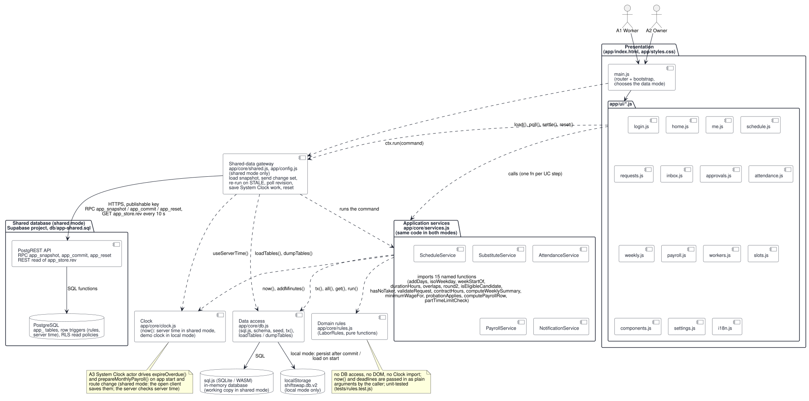
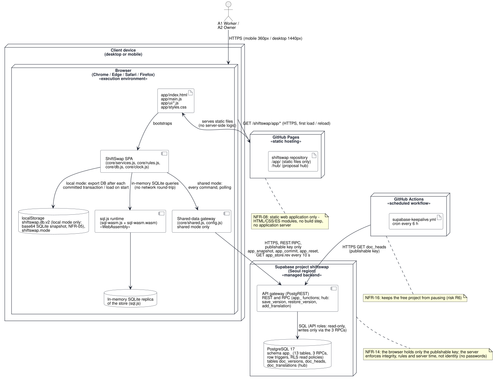
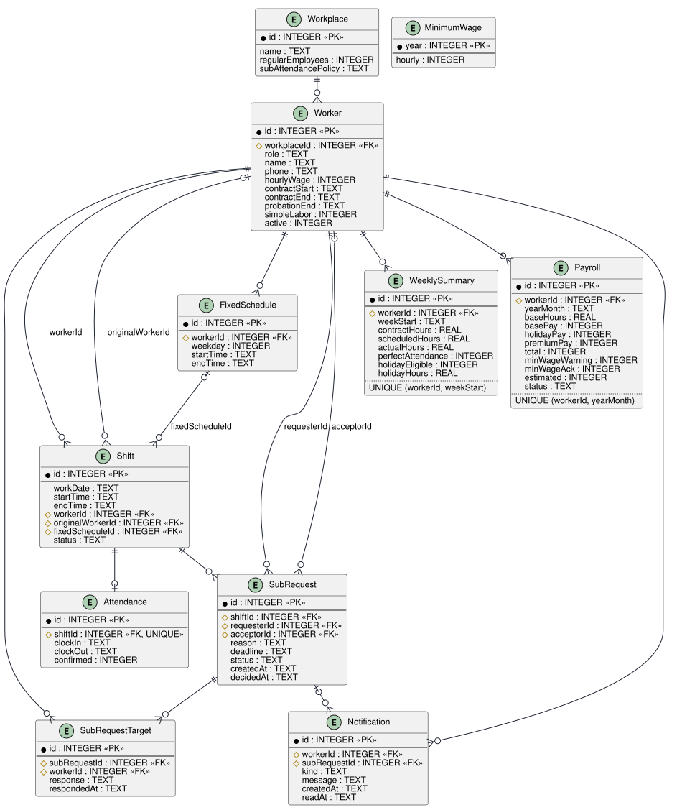
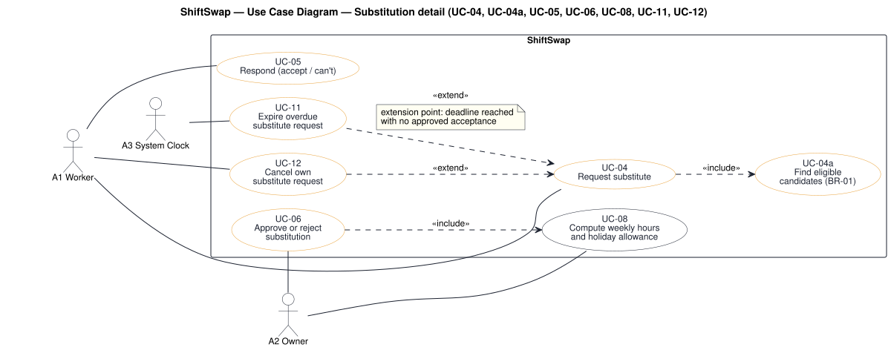
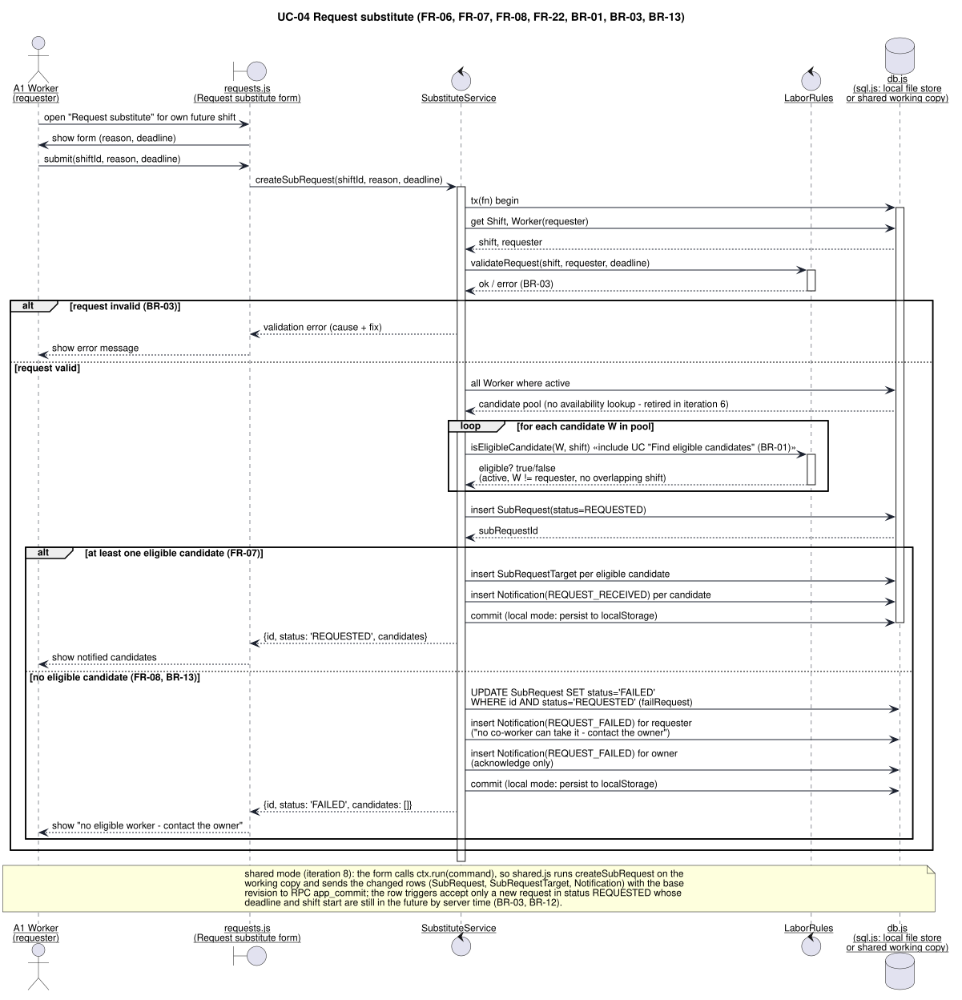
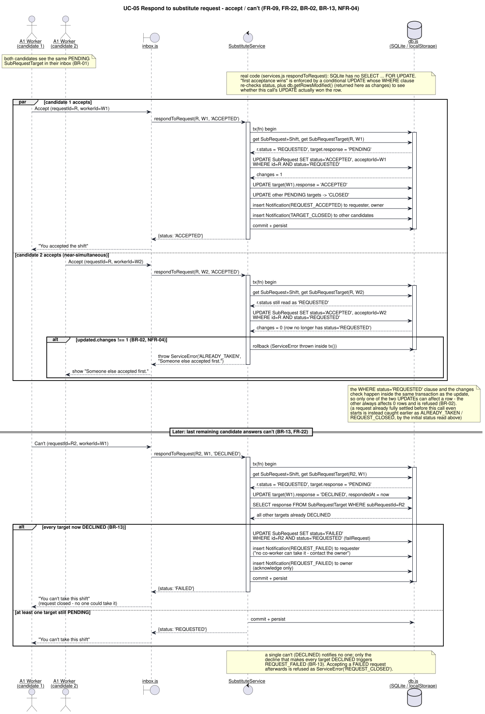
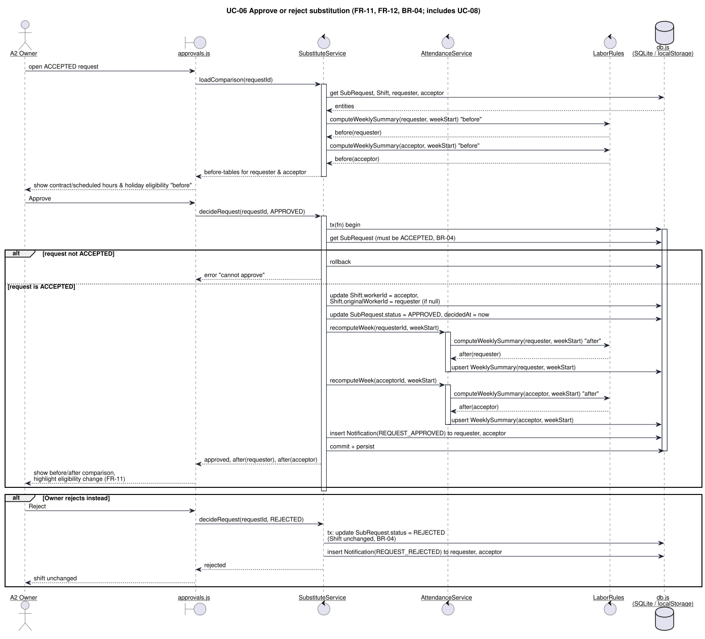
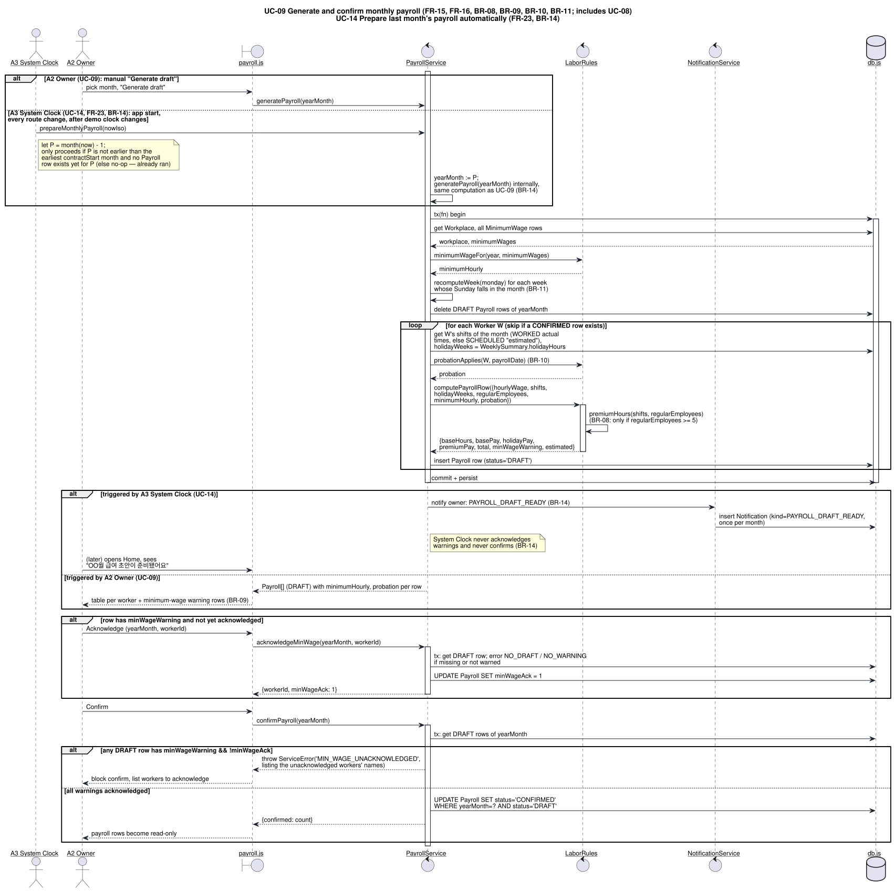

소규모 매장 아르바이트 근무표·대타 관리 시스템
Team 7
| Name | Student ID | Affiliation | |
|---|---|---|---|
| Hyewon Kim (김혜원) | 24102028 | Dept. of Industrial Engineering, ITM Program, SeoulTech | (to be provided by member) |
| Hyoungdo Kim (김형도) | 18102075 | Dept. of Industrial Engineering, ITM Program, SeoulTech | zloganway@gmail.com |
| Minkyung Kim (김민경) | 23102004 | Dept. of Industrial Engineering, ITM Program, SeoulTech | (to be provided by member) |
| Submission date | 2026-12-04 (Week 14) |
|---|---|
| Deployed application | https://keemlogan.github.io/shiftswap/app/ |
| Source repository | https://github.com/keemlogan/shiftswap |
| Submitted to | jihjim@gmail.com |
Team 7 has three members. The topic was proposed by Hyewon Kim, who works part-time in a small café and has seen at first hand how substitute shifts are arranged there. In Week 4 the team compared seven candidate topics and on 2026-09-27 selected ShiftSwap because it is a conventional transaction-processing application with a clear owner–worker workflow, more than five core use cases and a relational data model of twelve tables, which satisfies the minimum scope set by the term project description (five use cases, four tables).
Work was divided along the work breakdown structure (WBS) of the proposal, which has eight top-level packages that follow the course deliverables and the life-cycle phases: 1 Project management, 2 Proposal, 3 Requirements (interim report), 4 Design, 5 Implementation by vibe coding, 6 Testing, 7 Final report, and 8 Presentation. Each work package has one owner who is accountable for its deliverables. Every deliverable was also reviewed by a member who did not write it: requirements by Hyoungdo Kim and Minkyung Kim, design models by Hyewon Kim and Minkyung Kim, and test cases by Hyewon Kim and Hyoungdo Kim. The team met once a week, and the Gantt chart was updated after each meeting. The table below lists the responsibilities; the paragraphs after it describe each member's work in more detail.
| Member | Role | WBS work packages owned | Main deliverables |
|---|---|---|---|
| Hyewon Kim | Requirements lead | 2.1 Topic selection; 2.2.1 Problem statement and scope; 3.1 Elicitation; 3.2.1 FR and NFR tables, scenarios; 7.1.1 Requirements and design chapters | Comparison of seven candidate topics; problem statement P1–P3 and as-is process (Chapter 2); interview plan and notes; actors and use-case list; FR-01…FR-21; NFR-01…NFR-12; scenarios S-1…S-7; use-case descriptions UC-01…UC-13; requirements and design chapters of this report |
| Hyoungdo Kim | Project manager; design and implementation lead | 1 Project management (1.1, 1.2); 2.2.2 Reviewed proposal PDF; 3.2.2 Business rules and data model draft; 4.1 UML models; 5 Implementation by vibe coding (5.1, 5.2); 7.2.1 Traceability matrix; 8.2.2 Live demo | WBS, Gantt chart, weekly milestone tracking and meeting notes; canonical specification file spec/spec.md; business rules BR-01…BR-12 and data model; use-case, class, ER, sequence, state and activity diagrams; final vibe-coding prompt and prompt log; increments 1 and 2; public URL on GitHub Pages; traceability matrix; live demonstration |
| Minkyung Kim | UI and quality lead | 4.2 UI design; 6 Testing (6.1, 6.2); 7.1.2 Testing and results chapters; 7.2.2 Final report PDF; 8.1 Slide deck; 8.2.1 Rehearsed talk | Screen wireframes, prototype screens and visual design rules; test cases TC-01x…TC-12x and passing test run; scenario walkthrough record and screenshots; cross-browser and 360/1440 px checks; testing chapters; integrated final report PDF (50–150 pages); PowerPoint deck |
Hyewon Kim owned the problem domain. The topic came from her own part-time job, and her workplace is the reference store of the project; she prepared the comparison of seven candidate topics that led to its selection on 2026-09-27 (WBS 2.1) and wrote the problem statement and scope of the proposal (2.2.1). She described the current substitute procedure step by step and supplied the figure of three to five one-to-one contacts per substitute request that appears as problem P1. She collected the legal material on the 2026 minimum wage (KRW 10,320), the weekly holiday allowance (주휴수당) under the Labor Standards Act, the five-employee threshold for premium pay and the probation reduction of the Minimum Wage Act. For elicitation (3.1) she prepared the interview plan for the owner and two co-workers (Section 3.1) and the list of actors and use cases; for the specification (3.2.1) she wrote the functional and non-functional requirements, the scenarios of Section 3.8 and the use-case descriptions of Section 3.5. She wrote the requirements and design chapters of this report (7.1.1). In the presentation she covers the problem and the requirements.
Hyoungdo Kim was responsible for project management (WBS 1): the WBS and the Gantt chart, weekly milestone tracking, the weekly meeting notes and the task list with owners. He reviewed and submitted the proposal (2.2.2). He turned the legal material into the business rules and drafted the data model (3.2.2), and he created the specification file spec/spec.md, which fixes every identifier (UC, FR, NFR, BR, TC), every state name and the seed data, so that the application, the UML models and the reports use the same names and numbers. He drew the UML models (4.1): use-case, class and ER diagrams, and sequence, state and activity diagrams. For implementation by vibe coding (5) he wrote the final prompt and kept the prompt log of iterations against the specification (5.1), produced increments 1 and 2 with the AI coding assistant, and deployed the application on GitHub Pages (5.2). He built the traceability matrix of the final report (7.2.1). In the presentation he covers the design and the implementation by vibe coding and gives the live demonstration of the deployed application (8.2.2).
Minkyung Kim owned the user-interface design (WBS 4.2): the screen wireframes and prototype screens (4.2.1) for sign-in, weekly board, inbox, approvals, attendance, weekly summary, payroll and the owner and worker forms, and the visual design rules (4.2.2) that were later written into the final prompt. She owned testing (6): she wrote the unit test cases TC-01x to TC-12x from the business rules and ran them (6.1), and she carried out the scenario walkthroughs with screenshots and the cross-browser checks at 360 px and 1440 px screen width required by NFR-02 (6.2). She wrote the testing and results chapters (7.1.2), integrated the chapters of the three members into the final report PDF and checked the course format rules — A4, 12 pt, single spacing, 1-inch margins, 50–150 pages (7.2.2). She prepared the slide outline and the PowerPoint deck (8.1) and rehearsed the 15-minute talk (8.2.1). In the presentation she covers testing, deployment and the conclusion.
In small stores such as cafés and convenience stores, part-time workers have fixed weekly shifts, and when one of them cannot come the owner must find a substitute by contacting other workers one at a time, edit a spreadsheet by hand, and later recheck each worker's weekly hours to decide whether the weekly holiday allowance (주휴수당) is still owed. In the reference store of this project, one substitute request typically costs the owner three to five separate contacts, and legal pay rules — the 2026 minimum wage of KRW 10,320, the 15-hour threshold for the holiday allowance, the five-employee threshold for premium pay, and the probation reduction — are applied from memory. This report describes ShiftSwap, a web application built to remove these three problems. A worker requests a substitute for one of their own shifts; the system selects eligible candidates from registered availability and existing shifts, notifies all of them at once, and accepts only the first acceptance. The owner then approves the swap on a screen that shows the weekly contractual hours, scheduled hours and holiday-allowance eligibility of both workers before and after the change.
The system was developed with an incremental life-cycle model combined with UI prototyping, and every increment was implemented by vibe coding, that is, by generating code from natural-language prompts with an AI coding assistant. The report covers the problem statement and related work, a requirements specification of 13 use cases, 21 functional requirements, 12 non-functional requirements and 12 business rules, a design specification with UML 2.5 use-case, class, sequence, state and activity diagrams and a twelve-table SQLite schema, the final prompt that reproduces the system, the testing approach based on test cases derived from the business rules, and a user guide. The application runs entirely in the browser (HTML, CSS and JavaScript with SQLite compiled to WebAssembly) and is deployed at https://keemlogan.github.io/shiftswap/app/.
This chapter explains why the team built ShiftSwap, what the project set out to achieve, which features are inside and outside the scope of the delivered system, and how the development process was organised. The last section outlines the rest of the report.
Small stores in Korea — cafés, convenience stores, bakeries and small restaurants — depend on part-time workers (아르바이트). A typical store of this kind employs fewer than ten such workers, and each of them has a fixed weekly pattern of shifts, for example every Monday and Wednesday from 18:00 to 23:00. The pattern is agreed in the employment contract and changes rarely. What changes often is attendance on a particular day: a worker has an examination, falls ill or has a family event, and asks for someone else to cover the shift. In the café where one team member works, such requests are a routine part of running the store rather than an exception.
The owner, who in a store of this size is also the manager, handles each such case personally. The owner phones or messages the other workers one by one until someone agrees, updates the schedule spreadsheet, and tells the worker who asked. The work does not end there. Korean labour law ties part of a part-time worker's pay to the number of hours worked each week: a worker whose weekly contractual hours are 15 or more and who attended every scheduled working day is entitled to a paid weekly holiday, the weekly holiday allowance (주휴수당) [3], [5]. A swap therefore changes the hours and possibly the entitlement of two people at once, and the owner has to recheck both at the end of the month. In the reference store these checks are made from memory with a spreadsheet; the legal thresholds are not written down anywhere in the store.
The team chose this problem for three reasons. First, one member knows the process from the inside, so requirements could be drawn from a real workplace rather than from assumptions. Second, the problem is a transaction-processing problem of the kind the course recommends: it has several actors, a clear life cycle for each substitute request, and a relational data model. Third, the core difficulty is not the user interface but the rules — who is eligible, who wins when two people accept at the same moment, and how weekly and monthly pay change after a swap — which makes the requirements and design phases substantial and gives the testing phase concrete targets.
The overall goal of the project is to deliver a working web application that replaces the telephone-and-spreadsheet process of a small store for three tasks: finding a substitute, keeping the schedule correct, and computing the weekly holiday allowance and monthly pay. The proposal broke this goal down into six measurable objectives, G1 to G6, which are kept unchanged in this report so that they can be checked at the end of the project (Chapter 8). Four of them are tied to the problems P1–P3 defined in Chapter 2; the other two follow from the course requirements.
| ID | Objective | Measure of achievement | Problem |
|---|---|---|---|
| G1 | Remove the owner's one-to-one contacts when a substitute is needed. | The owner makes 0 contacts per request (reference store before the system: 3–5). All eligible workers are notified in the same transaction that creates the request (FR-07). The owner's only action is one approve or reject decision. | P1 |
| G2 | Let a candidate answer quickly. | A candidate accepts a request in at most 2 clicks from the inbox (NFR-01). Only the first acceptance can succeed (BR-02, NFR-04). | P1 |
| G3 | Keep the schedule and weekly hours of both workers correct after every swap. | On approval the shift is reassigned and the weekly summaries of both workers are recomputed with no manual step (FR-12). The approval screen shows both workers' hours and eligibility before and after the swap (FR-11); for the seed example it shows Choi Minho's scheduled hours changing from 16 to 21 with eligibility unchanged. | P2 |
| G4 | Apply the legal pay rules automatically and flag violations before payday. | Business rules BR-06 to BR-11 are implemented as tested functions, and every business rule has at least one unit test (spec §12), including the 15-hour boundary (14.99 h and 15 h) and the 40-hour cap. The payroll screen warns when a wage is below the applicable minimum and blocks confirmation until the warning is acknowledged (FR-16). | P3 |
| G5 | Deliver a system of the size the course requires. | At least 5 core use cases (delivered: 13, of which 9 are core) and at least 4 database tables (delivered: 12). | — |
| G6 | Deliver on time and reproducibly. | Working system deployed at a public URL by Week 14 (2026-12-04, NFR-07). Re-running the final prompt in an empty folder produces a system that passes the same unit tests. | — |
G6 also reflects a practical need of the target users: a small store has no server and no IT staff, so the system must run in a browser without installation (NFR-06), and it must be possible to rebuild it from its documentation alone.
The team classified features with the MoSCoW scheme (Must, Should, Could, Won't). Use-case priorities are the ones recorded in spec §3. Nine of the thirteen use cases correspond one to one to the nine functions announced in the proposal (UC-01 to UC-09); UC-10 to UC-13 are supporting use cases that make settings, expiry, cancellation and role selection explicit, because the core use cases are incomplete without them.
| Priority | Included features |
|---|---|
| Must | UC-01 Register worker and fixed schedule; UC-02 Register availability; UC-03 Generate weekly schedule; UC-04 Request substitute (with automatic candidate selection, BR-01); UC-05 Respond to substitute request; UC-06 Approve or reject substitution; UC-08 Compute weekly hours and holiday allowance; UC-11 Expire overdue substitute request; UC-13 Sign in by role; in-app notification inbox (FR-21). |
| Should | UC-07 Record and confirm attendance; UC-09 Generate and confirm monthly payroll (base pay, holiday allowance, premium pay, minimum-wage warning, probation reduction); UC-10 Manage workplace settings and minimum wage table; UC-12 Cancel own substitute request; Korean/English language switch; adjustable demo clock. |
| Won't (this version) | Password authentication and user accounts on a server; push notifications, KakaoTalk or SMS messaging (notifications are in-app only); bank transfer of wages; GPS or QR-code clock-in (excluded on purpose by NFR-12); multiple stores per owner; automatic optimisation of the weekly schedule; payslip export, tax and social-insurance deductions; annual leave, severance pay and the four-week averaging of the 15-hour rule beyond the weekly contractual value (see BR-06). |
Two scope decisions need comment. The system runs entirely in the browser with an embedded SQLite database, and sign-in is a choice among demo accounts (UC-13). This keeps the deployed system free of a server, but it also means that data stays in one browser and that the prototype is a demonstration system, not a multi-user production service. The second decision concerns payroll. The payroll function stops at gross pay: base pay, holiday allowance and premium pay. Deductions such as income tax and national insurance depend on rules that change every year and are outside the three problems the project addresses.
Chapter 1 of the lecture presents the linear sequential (waterfall) model, the prototyping model, the incremental model, Boehm's spiral model, the Rational Unified Process and agile methods [6]. The team compared them against four facts about the project: the course fixes three document deadlines (proposal in Week 5, interim report in Week 7, final report in Week 14); the requirements for the substitute workflow were known well from the reference store, but the screens were not; code is produced by an AI coding assistant from prompts, so a working version can be generated in hours rather than weeks; and the team has three members with no dedicated customer on site.
| Model | Fit with this project | Decision |
|---|---|---|
| Waterfall | Matches the fixed course documents, but a phase must be completed before the next begins, and feedback on screens would arrive only after implementation. | Rejected as the main model; its document sequence is kept for the course deliverables. |
| Prototyping | Suited to the unknown part of the requirements (screens, approval comparison panel). The lecture warns that prototypes omit error checking and non-functional requirements. | Adopted for the user interface only. |
| Incremental | Delivers a minimal useful subset first and adds increments; reduces rework when requirements change; allows demonstration at each increment. | Adopted as the main model. |
| Spiral | Explicit risk analysis per loop; heavy for a three-person, fourteen-week project. | Not adopted; the main risks are tracked in the WBS instead. |
| RUP | Iterative phases with UML; its good practices (manage requirements, visual modelling) were adopted, but the four-phase structure adds little for a small system. | Practices adopted, process not. |
| Agile / XP | Test-first development and small releases fit vibe coding well; the course, however, requires full requirement and design documents. | Test-first practice adopted within increments. |
The resulting approach is an incremental model with UI prototyping. The incremental model addresses the main weakness the lecture identifies in the waterfall model, the difficulty of accommodating change after the process is under way. The prototype addresses the part of the requirements that only becomes clear when users can see a screen. The known weaknesses of the incremental model are that the process is less visible and that structure degrades as increments are added [6]. The team countered the first with the fixed course documents and the prompt log, and the second with a layered architecture that was fixed before the first increment (Chapter 4) and with the rule that domain rules live only in one module of pure functions.
Following the proposal, the requirements and analysis models were written once for the whole system (WBS 3 Requirements and 4.1 UML models), and implementation was then delivered in two increments (WBS 5.2.1), followed by deployment (5.2.2), testing (6) and the freezing of the final prompt kept under prompt engineering (5.1). The table below shows the content of each increment.
| Increment | Content | Use cases | Planned week and exit criterion |
|---|---|---|---|
| Increment 1 (Must) | Database schema and seed data, demo clock, sign-in, worker and schedule registration, availability, weekly board, the complete substitute workflow (request, candidate notification, first acceptance, approval with before/after comparison, expiry), weekly holiday allowance, inbox. | UC-01, UC-02, UC-03, UC-04, UC-05, UC-06, UC-08, UC-11, UC-13 | End of Week 10, 2026-11-06 (WBS 5.2.1). Seed request with two candidates reproduced; worked example (Choi Minho, 3.2 h, KRW 33,024) shown on the approval screen; test groups TC-01x, TC-02x, TC-05x, TC-06x, TC-08x, TC-12x pass. |
| Increment 2 (Should) | Attendance recording and confirmation, monthly payroll with premium pay, minimum-wage warning and probation reduction, workplace settings and minimum-wage table, cancellation of an own request. | UC-07, UC-09, UC-10, UC-12 | End of Week 11, 2026-11-13 (WBS 5.2.1). Test groups TC-09x, TC-10x, TC-11x pass together with all groups of Increment 1 (regression). |
| Deployment and testing | Deployment to GitHub Pages, test runs, scenario walkthroughs, cross-browser and responsive checks, reproduction run of the final prompt in an empty folder. | All | Weeks 12–14 (WBS 5.2.2, 6.1.2, 6.2). Deployed URL and all test groups run in Week 12; NFR-02 and NFR-06 checks and final prompt frozen in Week 13; final report, slides and live demonstration on 2026-12-04 (Week 14). |
Increment 1 is the "minimal subset of the whole system that is still useful" in the sense of the lecture [6]: with it, a store can already find substitutes, approve swaps and see weekly holiday-allowance eligibility. If Increment 2 had slipped, the core of the project would still have been delivered. Placing all Must use cases in the first increment was the main mitigation of the scope-creep risk identified in the proposal.
The prototyping model of the lecture runs requirement analysis, prototype development, prototype evaluation, and then implementation [6]. In this project the prototype was not a separate throwaway artefact. The first version of each screen was generated by the AI coding assistant from a short description, evaluated by the team against the scenarios of Section 3.8, and then either kept or regenerated. Three screens went through this loop more than once: the weekly board (how to show a handed-over shift), the inbox (how to reach the accept button in two clicks), and the approval comparison panel (which figures to show for the two workers). The decisions from these loops were written back into the specification as visual design rules, which is why the final prompt contains exact colours, spacing and a single decorative element (Chapter 5). The lecture notes that prototypes tend to skip error handling and non-functional requirements; to avoid this, the error messages and the non-functional requirements NFR-01 to NFR-06 were added to the prompt from the first increment onward rather than left for the end.
Vibe coding means that source code is produced by an AI coding assistant from natural-language prompts, and that the developer's work moves from typing code to specifying, reviewing and testing it. The team used the same cycle inside each increment:
spec/spec.md first. Nothing is allowed into a prompt that is not in the specification.node --test, and the scenarios of Section 3.8 are walked through in the browser.This cycle keeps the course deliverables and the code consistent: the final prompt is not written after the fact but is the accumulated result of the refinements made in all four increments. Test-first practice from extreme programming fits this cycle naturally, because a test named TC-081 holiday allowance at exactly 15 h is itself a precise prompt. Chapter 5 presents the final prompt and the prompt log in detail.
Chapter 2 describes the current substitute process in the reference store, the three problems it causes, the legal background, and existing shift-scheduling products. Chapter 3 is the requirements specification: actors, use cases with full descriptions, functional and non-functional requirements, business rules, scenarios, analysis models and the validation of the requirements. Chapter 4 is the design specification with the architecture, class diagram, sequence diagrams, state diagrams and database design. Chapter 5 covers implementation by vibe coding, including the final prompt and the prompt log. Chapter 6 presents testing and validation and the traceability matrix. Chapter 7 explains deployment and gives a user guide for owners and workers. Chapter 8 concludes the report and lists limitations and future work. The references follow Chapter 8; the source code is submitted separately as an attached file.
This chapter describes the problem that ShiftSwap addresses. Section 2.1 describes how substitutes are arranged today in the reference store and models the process as a data flow diagram. Section 2.2 states the three problems P1–P3 that the process causes. Section 2.3 summarises the legal rules that govern part-time pay in Korea and that the system must apply. Section 2.4 compares existing shift-scheduling products, and Section 2.5 identifies the gap that ShiftSwap fills.
The requirements were drawn from one real workplace, a small café where Hyewon Kim works part-time. To protect the store and its staff, the report does not name the store; the demonstration data of the system uses a fictitious café, Dalbit Café (달빛카페), with one owner and four part-time workers, which has the same structure. The real store has the following characteristics, which are typical of the stores the system targets:
The following description is the current procedure for one substitute request, as reported by the team member who works in the reference store. It is written as the normal sequence; the variations are listed afterwards.
Three variations occur regularly. Workers sometimes arrange a swap between themselves and only inform the owner afterwards, or not at all, in which case the spreadsheet does not match reality. Two workers may both agree when the owner has contacted them in parallel, and one of them must then be told that the shift is no longer free. Finally, when nobody agrees, the owner covers the shift personally, and this is often not recorded.
The figure below models the procedure as a data flow diagram (DFD) following the rules of Chapter 2 of the lecture [6]: boxes are processes named with verb phrases, arcs are data named with noun phrases, control is not shown, and actors are not included. Arcs that enter from outside the diagram carry data supplied by a person (the worker or the owner) whose identity is omitted by the DFD rules. Two outputs from one box mean that one or the other is produced: process 3 produces either a refusal, which feeds process 2 again, or a substitute agreement.
The diagram makes two properties of the current process visible. First, the loop between processes 2.0 and 3.0 carries one inquiry and one refusal at a time; the number of iterations of this loop is the cost described as problem P1. Second, processes 5.0 to 7.0 depend on data that is not recorded in the store: "time records" are notes kept by the owner, and "remembered legal rules" is literally the owner's memory. These two inputs are the source of problems P2 and P3.
The as-is process causes three problems. Each problem statement below gives the observable symptom, the cause in the data flow diagram of Section 2.1.3, and the consequence.
For every substitute request the owner contacts workers one at a time, typically three to five contacts per request in the reference store. The cause is that the information needed to choose a candidate — who is free at that time and who is willing to work extra — exists only in the owner's memory and in the workers' heads, so the owner has to ask. Because each inquiry waits for an answer, the elapsed time grows with the number of contacts, and a request made late in the evening may not be settled until the next day. When the owner contacts several people in parallel to save time, two of them may agree, and one has to be disappointed. The workers who refused or were not asked do not see whether the shift has been filled.
A swap removes a shift from one worker's week and adds it to another's. Both workers' weekly scheduled hours change, and the holiday-allowance eligibility of either of them may change depending on how the missed shift is counted. In the current process the spreadsheet cell is edited (process 4.0), but the effect on hours is not calculated until the end of the month (process 5.0), when the owner must reconstruct from the edited spreadsheet which shifts were swapped and when. The owner approves a swap without seeing its effect on pay, and if the spreadsheet was not updated for a swap arranged directly between workers, the monthly calculation is wrong.
The weekly holiday allowance, the minimum wage, the five-employee threshold for premium pay and the probation reduction are all conditional rules with numeric thresholds (Section 2.3). In the reference store they are applied from memory at month end. Errors that this practice allows include paying a holiday allowance to a worker below 15 contractual hours, not paying it to a worker at or above the threshold, continuing to pay the previous year's minimum wage after 1 January, and applying the 90 % probation rate to a worker whose contract does not qualify for it. Because no check is made before the transfer, these errors are discovered, if at all, only when a worker complains.
| ID | Problem | Cause (DFD process) | Consequence |
|---|---|---|---|
| P1 | Repeated one-to-one contacts to find a substitute | Availability not recorded; inquiries sent one at a time (2.0 ↔ 3.0) | 3–5 contacts per request; delays; double acceptances when contacts are made in parallel |
| P2 | Manual recalculation for two workers per swap | Spreadsheet edited without calculation (4.0); hours rebuilt at month end (5.0) | Swaps approved without knowing their pay effect; mismatches between schedule and reality |
| P3 | Legal rules applied from memory | Rules not recorded (input "remembered legal rules" of 6.0 and 7.0) | Pay errors discovered only after payday |
Part-time workers in Korea are covered by the same labour statutes as full-time workers. The provisions below determine the pay rules the system implements as business rules BR-06 to BR-10 (Chapter 3). The team read the statutes on the National Law Information Center [3], [4] and the explanations of the government's legal information service for part-time workers [5]. The system is a tool for applying these rules consistently; it is not legal advice, and the rules were simplified in the ways stated below.
Under the Minimum Wage Act, the Minister of Employment and Labor announces the minimum hourly wage for each year. For 2026 the minimum hourly wage is KRW 10,320, up from KRW 10,030 in 2025, an increase of about 2.9 % [1], [2]. An employer who pays less than the minimum wage breaks the law regardless of what the contract says. For the system this means that the applicable minimum depends on the year of the pay period, so the minimum wage is stored as a table of yearly values (table MinimumWage, UC-10) rather than as a constant, and each payroll row is checked against the value for its year (BR-09).
Article 55 ① of the Labor Standards Act requires an employer to give a worker at least one paid holiday per week on average. Article 30 ① of the Enforcement Decree specifies that this paid holiday is given to a worker who has attended all the working days agreed for that week. Article 18 ③ excludes from this provision workers whose contractual working hours, averaged over four weeks, are less than 15 hours per week [3]. For a part-time worker the paid holiday is proportional to the worker's hours; the government's guidance computes the paid holiday hours as weekly contractual hours ÷ 40 × 8, with the weekly hours capped at 40 [5]. The money paid for this holiday is what Korean workers call 주휴수당, rendered in this report as the weekly holiday allowance.
Two points required interpretation. The first is the four-week average. In the target stores a worker's contractual hours come from a fixed weekly schedule, which is the same every week; the four-week average therefore equals the weekly value, and the system uses the weekly contractual hours directly (BR-06). The second is a swapped shift. When a worker gives a shift to a colleague with the owner's approval, the working day has been changed by agreement, and the team's reading of [5] is that this should not count as a failure to attend. Because store practice differs, the system makes this a workplace setting (subAttendancePolicy = EXCUSED, the default, or ABSENT) rather than hard-coding one interpretation.
Article 56 of the Labor Standards Act requires an additional 50 % of the ordinary wage for extended work (beyond 8 hours a day or 40 hours a week) and for night work between 22:00 and 06:00. Article 11 limits the application of the Act: a workplace that ordinarily employs fewer than five workers is subject only to the provisions listed in the Enforcement Decree, and Article 56 is not among them [3]. Many small cafés fall below this threshold; the demonstration store Dalbit Café is configured with four regular employees. The system therefore stores the number of regular employees as a workplace setting and computes premium pay only when it is five or more (BR-08). Holiday-work premium under Article 56 ② is outside the scope of the system.
Article 5 ② of the Minimum Wage Act allows an employer to pay 90 % of the minimum wage during the first three months of employment for a worker under probation, but only if the employment contract is for one year or more, and not for workers in simple labour occupations designated by the Ministry of Employment and Labor (Enforcement Decree Art. 3) [4]. Many part-time jobs in cafés and convenience stores, such as serving and cashier work, fall into the designated simple labour occupations. The system requires all conditions to hold before it lowers the minimum-wage threshold for a worker (BR-10).
| Provision | Content used by the system | Business rule |
|---|---|---|
| Minimum Wage Act; MOEL notice for 2026 [1], [2] | Minimum hourly wage KRW 10,320 (2026), KRW 10,030 (2025) | BR-09 |
| Labor Standards Act Art. 55 ①; Enforcement Decree Art. 30 ① [3] | One paid holiday per week for a worker who attended all agreed working days | BR-06, BR-07 |
| Labor Standards Act Art. 18 ③ [3], [5] | No weekly paid holiday below 15 contractual hours per week (four-week average) | BR-06 |
| Labor Standards Act Art. 11, Art. 56 [3] | +50 % for daily hours over 8, weekly hours over 40 and night hours 22:00–06:00; only with five or more regular employees | BR-08 |
| Minimum Wage Act Art. 5 ②; Enforcement Decree Art. 3 [4] | 90 % of the minimum wage for the first three months of probation, contract of one year or more, not simple labour | BR-10 |
Shift scheduling is an established product category. The team examined five products or product groups named in [10]: Shiftee, a Korean workforce-management service; the schedule and work-management functions of the Korean job portals Albamon (알바몬 근무관리) and Alba Cheonguk (알바천국 스케줄); and three international products, When I Work, Homebase and Deputy. The comparison uses five features that correspond to the core of ShiftSwap:
The comparison table below records only what the team could confirm from the public product descriptions available to it. "Supported" means the team found the feature described; "not documented" means the team did not find a description of it, which does not prove that the feature is absent. The products change frequently, and the table reflects the team's reading at the time of writing.
| Product | Substitute broadcast | First-accept | Owner approval | Holiday-allowance recomputation at approval | Korean legal rules |
|---|---|---|---|---|---|
| Shiftee | not documented | not documented | not documented | not documented | not documented |
| Albamon work management / Alba Cheonguk schedule | not documented | not documented | not documented | not documented | not documented |
| When I Work | supported (shifts offered to eligible staff) | not documented | supported (manager approves swaps and drops) | not documented | not documented |
| Homebase | not documented | not documented | supported (manager approves trades and cover requests) | not documented | not documented |
| Deputy | supported (shift offers to qualified staff) | not documented | supported (manager approves swaps and offers) | not documented | not documented |
| ShiftSwap | supported (FR-07, BR-01) | supported (FR-09, BR-02) | supported (FR-12, BR-04) | supported (FR-11) | supported (BR-06…BR-10) |
The international products share a pattern: a worker offers or trades a shift, colleagues who are qualified for it can pick it up, and a manager approves the change. They are designed for the labour law of other countries and for larger organisations with several locations and roles, and their pay features, where present, are connected to external payroll services. The Korean services are closer to the target users in language and in their awareness of part-time work, but the team did not find a description of a substitute workflow with first acceptance and approval in them. None of the products, in the descriptions the team read, shows the owner the change in both workers' holiday-allowance eligibility at the moment of approving a swap [10].
Besides products, the course material provides the methods used in this project. The life-cycle models and the requirements classification come from the course textbook [6] and from Sommerville's classification of non-functional requirements used in the lecture on requirements [7]. The UML diagrams follow the OMG UML 2.5.1 specification [8], and the embedded database is SQLite compiled to WebAssembly (sql.js) [9].
ShiftSwap targets the part of the problem that general scheduling products do not address for small Korean stores. Its contribution is the combination of four elements in one workflow:
The system is deliberately small. It serves one store, runs without a server and does not replace a full payroll or HR system. Its value lies in making the rules explicit and applying them at the moment a decision is made, rather than at the end of the month. Chapter 3 turns these four elements into use cases, functional requirements and business rules.
This chapter specifies what ShiftSwap must do. It follows the requirements engineering activities of Chapter 8 of the lecture — elicitation, analysis, validation and management [6], [7] — and the contents recommended there for a software requirements specification: problem description, functional and non-functional requirements, scenarios, use-case diagram and supplementary diagrams. The problem description is Chapter 2. Section 3.1 explains how the requirements were elicited, and Section 3.2 identifies stakeholders and actors. Sections 3.3 to 3.5 present the use-case model, the functional requirements and a full description of each use case. Section 3.6 states the business rules, the domain requirements that carry the legal content of the system. Section 3.7 gives the non-functional requirements, Section 3.8 the scenarios, and Section 3.9 the analysis models. Sections 3.10 and 3.11 describe how the requirements were validated and how changes to them were managed.
All identifiers used in this chapter (A1–A3, UC-01–UC-13, FR-01–FR-21, NFR-01–NFR-12, BR-01–BR-12, TC groups) are defined in the specification file spec/spec.md of the repository, which the team treated as the single source of truth (Section 3.11). The wording of the requirements in this chapter is the wording of that file.
The lecture divides elicitation and analysis into requirements discovery, classification and organisation, prioritisation and negotiation, and specification [7]. For discovery the team used three sources.
The first and main source was the practice of the reference store, described by Hyewon Kim from her own experience as a part-time worker there. She wrote down the as-is procedure of Section 2.1 step by step, including the variations (swaps arranged between workers, double agreement, the owner covering the shift). From this description the team extracted the entities the owner deals with — worker, fixed weekly shift, shift on a date, substitute request, the workers asked, the reply, attendance, weekly hours and monthly pay — and the decisions the owner makes, which became candidate use cases. This source is also the origin of the only quantitative statement about the current process used in the report, the figure of three to five contacts per substitute request (P1). The team did not collect further measurements in the store and does not report any.
The second source was the legislation and official guidance listed in Section 2.3: the Ministry of Employment and Labor notice on the 2026 minimum wage [1], [2], the Labor Standards Act and its Enforcement Decree [3], the Minimum Wage Act and its Enforcement Decree [4], and the government's legal information service for part-time workers [5]. These documents are the source of the domain requirements, which the lecture defines as constraints on the system from its domain of operation [7]. Each legal provision was converted into a business rule with explicit conditions and numbers (Section 3.6), and each business rule was reviewed against the text of the provision in the requirements review (Section 3.10). Where the law needed interpretation, the interpretation was either written into the rule with a note (the four-week average of BR-06) or made a workplace setting (the treatment of a handed-over shift, subAttendancePolicy).
The third source is a set of semi-structured interviews with the owner of the reference store and two co-workers, planned under WBS 3.1.1 (interview plan and notes) and scheduled to begin in Week 3. The interviews serve to confirm or correct what the team derived from the first two sources, not to produce statistics. The table below gives the plan. This report does not present interview results as numbers; where the requirements depend on a store-specific choice, the system makes it a setting instead of relying on the answer of one interviewee.
| Interviewee | Topic | Main questions | Requirements affected |
|---|---|---|---|
| Owner | Substitute procedure | How do you choose whom to contact first? What information do you need before agreeing to a swap? Would you accept a swap without seeing its effect on hours? | FR-06–FR-12, BR-01, BR-04 |
| Owner | Pay calculation | How do you decide the weekly holiday allowance today? How do you treat a shift that a worker gave to a colleague? When do you update the hourly wage after a minimum-wage change? | FR-14–FR-16, BR-06–BR-11 |
| Owner | Deadlines | How long before a shift must a substitute be confirmed? What happens when nobody answers? | FR-18, BR-03, BR-12 |
| Co-workers (2) | Receiving requests | How do you prefer to be asked? How quickly do you usually answer? Have you ever agreed to a shift that someone else had already taken? | FR-07, FR-09, FR-10, NFR-01 |
| Co-workers (2) | Availability and privacy | Would you record the times you are available for extra shifts? Which of your data should other workers not see? | FR-03, NFR-11 |
| All | Devices | Which device do you use to check the schedule? Do you use a computer at the store? | NFR-02, NFR-06 |
In addition, the team examined the public descriptions of existing shift-scheduling products (Section 2.4) to find what is common to the domain. Shift trades with manager approval appear in several products, which confirmed that owner approval (UC-06) is an expected step and not a peculiarity of the reference store. The candidate requirements from all sources were then classified into the groups used below (worker and schedule management, substitute workflow, attendance and pay, administration and access), prioritised with the MoSCoW scheme (Section 1.3), and specified in the specification file. One prioritisation decision needs explanation. Perfect attendance is a condition of the holiday allowance, which might suggest that attendance recording (UC-07) is a Must. It is a Should because the holiday-allowance rule treats a shift that has not been marked ABSENT as attended (Section 3.9.2); Increment 1 therefore computes a correct holiday allowance for every week without absences even before attendance recording exists.
The lecture defines stakeholders as everyone with an interest in the system, including end users, managers, maintenance engineers and domain experts [7]. Actors are the subset of stakeholders, and of external systems, that interact with the system directly. The two tables below list the stakeholders and the three actors of the use-case model.
| Stakeholder | Interest in the system | How represented in the requirements |
|---|---|---|
| Store owner | Fewer contacts per substitute; correct schedule; correct and lawful pay; no disputes on payday. | Actor A2; goals G1, G3, G4; FR-11, FR-12, FR-15, FR-16. |
| Part-time worker (requester) | Find a substitute quickly without personally asking colleagues; keep the holiday allowance where possible. | Actor A1; FR-06, FR-19; before/after comparison (FR-11). |
| Part-time worker (candidate) | Be asked only when actually available; know at once whether a shift is still free; privacy of wage and phone number. | Actor A1; BR-01, BR-02; NFR-01, NFR-11. |
| Legislator and labour authorities | Minimum wage, weekly paid holiday and premium pay applied as the law requires. | Business rules BR-06 to BR-10; NFR-10. |
| Course instructor | A system that demonstrates the full life cycle and can be reproduced from the final prompt. | Organisational requirements NFR-07 to NFR-09; goals G5, G6. |
| Development team | A scope that can be delivered in one semester; a system that three students can test. | MoSCoW scope; client-only architecture (NFR-08); demo clock (A3). |
| ID | Actor | Type | Description |
|---|---|---|---|
| A1 | Worker | Primary, human | Part-time employee. Views own schedule, registers availability, requests substitutes, responds to requests, records attendance. |
| A2 | Owner | Primary, human | Store owner (also acts as manager). Registers workers and fixed schedules, approves/rejects substitutions, confirms attendance, reviews weekly summaries, confirms monthly payroll, edits settings. |
| A3 | System Clock | Secondary, system | Time-triggered actor. Expires unanswered/unapproved requests at their deadline and closes weeks for weekly summary. (In the demo app this is driven by the adjustable "demo clock".) |
A worker who receives a substitute request is still actor A1; the use-case descriptions call this worker the candidate and the worker who made the request the requester. A separate candidate actor is not used, because every worker can be a requester in one request and a candidate in another, and the difference is a role in a particular request, not a kind of user. The System Clock is modelled as an actor because expiry (UC-11) happens without any user action: it is triggered by the passage of time. In the demonstration system, time is the adjustable demo clock, so that expiry can be shown in a few seconds instead of waiting for a real deadline.
The owner could in principle be a specialisation of worker, since the owner is also stored in the table Worker (with role OWNER). In the use-case model the two are kept as separate actors because they have no use cases in common except sign-in (UC-13) and attendance (UC-07), and in attendance their steps differ: the worker records times, the owner confirms them.
The figure below shows the use-case diagram. It contains thirteen use cases. UC-01 to UC-09 correspond one to one to the nine main functions announced in the proposal; UC-10 to UC-13 are supporting use cases, already listed in the proposal, which make settings, expiry, cancellation and role selection explicit so that the core use cases are complete. The table after the diagram lists the use cases with their primary actor, priority and the database tables they mainly use.
| ID | Name | Primary actor | Priority | Main tables |
|---|---|---|---|---|
| UC-01 | Register worker and fixed schedule | Owner | Must | Worker, FixedSchedule |
| UC-02 | Register availability | Worker | Must | Availability |
| UC-03 | Generate weekly schedule | Owner | Must | Shift |
| UC-04 | Request substitute | Worker | Must | SubRequest, SubRequestTarget, Notification |
| UC-05 | Respond to substitute request (accept / decline) | Worker (candidate) | Must | SubRequestTarget, SubRequest |
| UC-06 | Approve or reject substitution | Owner | Must | SubRequest, Shift, WeeklySummary |
| UC-07 | Record and confirm attendance | Worker, Owner | Should | Attendance, Shift |
| UC-08 | Compute weekly hours and holiday allowance | Owner (System) | Must | WeeklySummary, Workplace |
| UC-09 | Generate and confirm monthly payroll | Owner | Should | Payroll, MinimumWage, Worker |
| UC-10 | Manage workplace settings and minimum wage table | Owner | Should | Workplace, MinimumWage |
| UC-11 | Expire overdue substitute request | System Clock | Must | SubRequest, SubRequestTarget, Notification |
| UC-12 | Cancel own substitute request | Worker | Should | SubRequest, SubRequestTarget |
| UC-13 | Sign in by role (demo account selection) | Worker, Owner | Must | Worker |
The lecture describes «include» as a common function that a use case always uses and «extend» as an exceptional condition that adds behaviour to a base use case [6]. The diagram uses both relationships as follows.
In the diagram the Worker is also associated with UC-01, although the Owner is its primary actor. The association represents the worker as the subject of the registration, who afterwards sees the registered fixed schedule on the weekly board; the worker cannot create or change a fixed schedule.
The lecture defines functional requirements as statements of the services the system should provide, how it should react to particular inputs and how it should behave in particular situations [7]. Following the SRS contents of the lecture, each requirement below has an identifier, a group, a statement and the use case it belongs to; the priority is inherited from the use case. The statements use "shall" for mandatory behaviour. The table below is the complete list.
| ID | Group | Requirement | UC | Priority |
|---|---|---|---|---|
| FR-01 | Workers and schedules | The owner shall register a worker with name, phone, hourly wage (KRW), contract start date, contract end date, probation end date (optional), simple-labor flag, and active flag. | UC-01 | Must |
| FR-02 | Workers and schedules | The owner shall register one or more fixed weekly shifts per worker (weekday, start time, end time); fixed shifts of the same worker must not overlap. Deleting a fixed-schedule row keeps the shifts it already generated (their fixedScheduleId becomes NULL). | UC-01 | Must |
| FR-03 | Workers and schedules | A worker shall register availability slots (weekday, start, end) during which they can take substitute shifts. | UC-02 | Must |
| FR-04 | Workers and schedules | The system shall generate the shifts of a given week (Mon–Sun) from all active fixed schedules; generating the same week twice shall not create duplicates. | UC-03 | Must |
| FR-05 | Workers and schedules | The owner shall be able to add, move or delete a single shift of a generated week. Deleting a shift that has a substitute request or an attendance record is refused with an explanatory message. | UC-03 | Must |
| FR-06 | Substitute workflow | A worker shall create a substitute request for one of their own future SCHEDULED shifts, with an optional reason and a response deadline. | UC-04 | Must |
| FR-07 | Substitute workflow | On creation the system shall compute the eligible candidates (BR-01), create one SubRequestTarget per candidate, and put a notification in each candidate's inbox at once. | UC-04 | Must |
| FR-08 | Substitute workflow | If no worker is eligible, the system shall still create the request and notify the owner that no candidate exists. | UC-04 | Must |
| FR-09 | Substitute workflow | A candidate shall accept or decline a request from their inbox. The first acceptance makes that candidate the request's acceptor (BR-02); later acceptances shall be refused with an explanatory message. | UC-05 | Must |
| FR-10 | Substitute workflow | When a request is accepted, the system shall notify the requester and the owner, and close all other pending targets. | UC-05 | Must |
| FR-11 | Substitute workflow | The approval screen shall show, for both the requester and the acceptor, the weekly contractual hours, weekly scheduled hours and holiday-allowance eligibility before and after the swap, and highlight any eligibility change. | UC-06 | Must |
| FR-12 | Substitute workflow | On approval the system shall reassign the shift to the acceptor (keeping the original worker), recompute the weekly summaries of both workers, and notify both. On rejection the shift stays unchanged and both are notified. | UC-06 | Must |
| FR-13 | Attendance and pay | A worker shall record actual start and end time of a shift they worked; the owner shall confirm it or mark the shift ABSENT. | UC-07 | Should |
| FR-14 | Attendance and pay | The system shall compute, per worker and week, contractual hours, scheduled hours, actual hours, perfect-attendance flag, holiday-allowance eligibility and holiday-allowance hours (BR-06, BR-07). | UC-08 | Must |
| FR-15 | Attendance and pay | The owner shall generate a monthly payroll draft per worker (base pay, holiday allowance, premium pay, total) and confirm it; a confirmed payroll is read-only. | UC-09 | Should |
| FR-16 | Attendance and pay | The payroll screen shall warn when a worker's hourly wage is below the applicable minimum wage (BR-09), and apply the probation reduction only when BR-10 holds. | UC-09 | Should |
| FR-17 | Administration | The owner shall edit workplace settings: store name, number of regular employees, substitution-attendance policy (BR-06), and yearly minimum wage rows. | UC-10 | Should |
| FR-18 | Substitute workflow | When a request's deadline passes, or its shift starts, while it is still REQUESTED or ACCEPTED, the system shall mark it EXPIRED, close its targets and notify requester and owner. | UC-11 | Must |
| FR-19 | Substitute workflow | A requester shall cancel their own request while it is REQUESTED or ACCEPTED; all PENDING targets become CLOSED, and every target that was PENDING or ACCEPTED receives a REQUEST_CANCELLED notification. | UC-12 | Should |
| FR-20 | Access | Users shall sign in by choosing a demo account; the UI shows only the menus of that role. | UC-13 | Must |
| FR-21 | Access | Every user shall have an in-app notification inbox listing notifications newest first with unread count. | UC-04–06, 11, 12 | Must |
Every functional requirement maps to at least one use case, as the traceability rule of the specification requires (spec §12). The reverse also holds: every use case is realised by at least one functional requirement. UC-08 is realised by FR-14 alone, but the computation it describes is detailed by business rules BR-05 to BR-07. The notification inbox (FR-21) is not a use case of its own; it is the shared output of the five use cases that create notifications. The kinds of notification are fixed by the specification: REQUEST_RECEIVED, REQUEST_ACCEPTED, REQUEST_APPROVED, REQUEST_REJECTED, REQUEST_EXPIRED, REQUEST_CANCELLED, NO_CANDIDATE and TARGET_CLOSED.
The following conventions apply to all requirements. Dates are ISO YYYY-MM-DD, times are HH:MM in 24-hour notation, and datetimes are YYYY-MM-DDTHH:MM. A time interval [s, e) includes its start and excludes its end, so a shift ending at 18:00 does not overlap one starting at 18:00. An end time that is not later than the start time means that the shift ends on the following day. Money amounts are integers in Korean won.
The lecture notes that a use case is represented both in a diagram, as an overview, and in a more detailed textual form [6]. This section gives the textual form for every use case, UC-01 to UC-13, in one fixed structure: identifier and name, actors, preconditions, trigger, main flow as numbered steps, alternative flows, exception flows, postconditions, the business rules applied, the related functional and non-functional requirements, and the screen of the application on which the use case is performed. The fields correspond to the scenario contents required by the SRS outline of the lecture (related actors, initial condition, final condition, exceptional case and step-by-step flow of action). Alternative flows describe other successful paths; exception flows describe paths on which the goal of the use case is not reached. The screens are described in Chapter 4 and shown in the user guide of Chapter 7.
Two conventions keep the descriptions short. "The system validates" always means that invalid input leaves the data unchanged and produces a message that states the cause and the correction, as required by the copy rules of the design. Every use case except UC-11 includes UC-13, which is therefore stated only as a precondition.
| ID | UC-01 |
|---|---|
| Name | Register worker and fixed schedule |
| Actors | Primary: Owner (A2). Secondary: Worker (A1), as the subject of the registration. |
| Preconditions |
|
| Trigger | A new worker is hired, or the contract or fixed weekly shifts of an existing worker change. |
| Main flow |
|
| Alternative flows |
|
| Exception flows |
|
| Postconditions |
|
| Business rules | BR-06 (contractual hours), BR-09 and BR-10 (wage, contract and probation fields used later) |
| Related FR / NFR | FR-01, FR-02; NFR-11 (phone and wage visible only to owner and the worker) |
| UI screen | Workers & schedules (owner) |
| ID | UC-02 |
|---|---|
| Name | Register availability |
| Actors | Primary: Worker (A1). |
| Preconditions |
|
| Trigger | The worker wants to offer time in which they could take substitute shifts. |
| Main flow |
|
| Alternative flows |
|
| Exception flows |
|
| Postconditions |
|
| Business rules | BR-01 (availability is an input of candidate selection) |
| Related FR / NFR | FR-03; NFR-02 |
| UI screen | Availability (worker) |
| ID | UC-03 |
|---|---|
| Name | Generate weekly schedule |
| Actors | Primary: Owner (A2). |
| Preconditions |
|
| Trigger | The owner opens a week (Monday to Sunday, BR-05) that has not yet been generated, or wants to adjust a generated week. |
| Main flow |
|
| Alternative flows |
|
| Exception flows |
|
| Postconditions |
|
| Business rules | BR-05 (week definition) |
| Related FR / NFR | FR-04, FR-05; NFR-02, NFR-03 |
| UI screen | Weekly board (owner view) |
| ID | UC-04 |
|---|---|
| Name | Request substitute |
| Actors | Primary: Worker (A1) as requester. Secondary: other Workers (A1) as candidates, Owner (A2) as receiver of notifications. |
| Preconditions |
|
| Trigger | The worker learns that they cannot work one of their coming shifts. |
| Main flow |
|
| Alternative flows |
|
| Exception flows |
|
| Postconditions |
|
| Business rules | BR-01, BR-03 |
| Related FR / NFR | FR-06, FR-07, FR-08, FR-21; NFR-11 |
| UI screen | Weekly board; Request substitute form; My requests (worker) |
| ID | UC-05 |
|---|---|
| Name | Respond to substitute request (accept / decline) |
| Actors | Primary: Worker (A1) as candidate. Secondary: requester (A1) and Owner (A2), who are notified. |
| Preconditions |
|
| Trigger | The candidate sees a REQUEST_RECEIVED notification (unread count in the header). |
| Main flow |
|
| Alternative flows |
|
| Exception flows |
|
| Postconditions |
|
| Business rules | BR-02 |
| Related FR / NFR | FR-09, FR-10, FR-21; NFR-01 (at most 2 clicks), NFR-04 (transaction) |
| UI screen | Inbox (worker) |
| ID | UC-06 |
|---|---|
| Name | Approve or reject substitution |
| Actors | Primary: Owner (A2). Secondary: requester and acceptor (A1), who are notified. |
| Preconditions |
|
| Trigger | The owner receives a REQUEST_ACCEPTED notification or opens the Approvals screen. |
| Main flow |
|
| Alternative flows |
|
| Exception flows |
|
| Postconditions |
|
| Business rules | BR-04, BR-06, BR-07 |
| Related FR / NFR | FR-11, FR-12, FR-21; NFR-03 |
| UI screen | Approvals with comparison panel (owner); Weekly board |
| ID | UC-07 |
|---|---|
| Name | Record and confirm attendance |
| Actors | Primary: Worker (A1) and Owner (A2). |
| Preconditions |
|
| Trigger | A shift has been worked, or the owner reviews the past shifts. |
| Main flow |
|
| Alternative flows |
|
| Exception flows |
|
| Postconditions |
|
| Business rules | BR-06 (perfect attendance), BR-11 (actual hours for base pay) |
| Related FR / NFR | FR-13; NFR-12 (no location data; self-reported and owner-confirmed) |
| UI screen | Attendance (worker and owner views) |
| ID | UC-08 |
|---|---|
| Name | Compute weekly hours and holiday allowance |
| Actors | Primary: Owner (A2); the computation is performed by the system and is also included by UC-06 and UC-09. |
| Preconditions |
|
| Trigger | The owner opens the Weekly summary screen for a week, or UC-06 / UC-09 includes this use case. |
| Main flow |
|
| Alternative flows |
|
| Exception flows |
|
| Postconditions |
|
| Business rules | BR-05, BR-06, BR-07 |
| Related FR / NFR | FR-14; NFR-03, NFR-10 |
| UI screen | Weekly summary (owner); Approvals comparison panel |
| ID | UC-09 |
|---|---|
| Name | Generate and confirm monthly payroll |
| Actors | Primary: Owner (A2). |
| Preconditions |
|
| Trigger | The end of a pay month, or the owner wants to check the pay of the current month. |
| Main flow |
|
| Alternative flows |
|
| Exception flows |
|
| Postconditions |
|
| Business rules | BR-07, BR-08, BR-09, BR-10, BR-11 |
| Related FR / NFR | FR-15, FR-16; NFR-10 |
| UI screen | Payroll (owner) |
| ID | UC-10 |
|---|---|
| Name | Manage workplace settings and minimum wage table |
| Actors | Primary: Owner (A2). |
| Preconditions |
|
| Trigger | The store changes (name, number of regular employees), the owner decides the substitution-attendance policy, or a new minimum wage is announced. |
| Main flow |
|
| Alternative flows |
|
| Exception flows |
|
| Postconditions |
|
| Business rules | BR-06 (policy), BR-08 (regular employees), BR-09 (minimum wage) |
| Related FR / NFR | FR-17; NFR-10 |
| UI screen | Settings (owner) |
| ID | UC-11 |
|---|---|
| Name | Expire overdue substitute request |
| Actors | Primary: System Clock (A3). Secondary: requester (A1), candidates (A1) and Owner (A2), who are notified. |
| Preconditions |
|
| Trigger | The application starts, the user navigates to another screen, or the demo clock is changed. |
| Main flow |
|
| Alternative flows |
|
| Exception flows |
|
| Postconditions |
|
| Business rules | BR-12 |
| Related FR / NFR | FR-18, FR-21 |
| UI screen | None of its own (effects visible in Inbox, My requests, Approvals) |
| ID | UC-12 |
|---|---|
| Name | Cancel own substitute request |
| Actors | Primary: Worker (A1) as requester. Secondary: candidates (A1), who are notified. |
| Preconditions |
|
| Trigger | The requester can work the shift after all, or has arranged the matter otherwise. |
| Main flow |
|
| Alternative flows |
|
| Exception flows |
|
| Postconditions |
|
| Business rules | BR-03 (only one open request per shift; cancelling frees the shift for a new request) |
| Related FR / NFR | FR-19, FR-21 |
| UI screen | My requests (worker) |
| ID | UC-13 |
|---|---|
| Name | Sign in by role (demo account selection) |
| Actors | Primary: Worker (A1) and Owner (A2). |
| Preconditions |
|
| Trigger | A user opens the application or signs out. |
| Main flow |
|
| Alternative flows |
|
| Exception flows |
|
| Postconditions |
|
| Business rules | — |
| Related FR / NFR | FR-20; NFR-11 |
| UI screen | Sign-in |
The business rules are the domain requirements of ShiftSwap. They state precisely, with conditions and numbers, what the functional requirements refer to by name: which workers are eligible, when an acceptance succeeds, when the holiday allowance is owed, and how pay is computed. The lecture warns that a system that does not satisfy its domain requirements may be unworkable [7]; for this system, a wrong rule means a wrong pay slip. The rules are therefore written so that each can be implemented as one pure function in the domain-rule module (Chapter 4) and tested on its own (Section 3.10).
The table below lists the twelve rules. The column "Rule" repeats the wording of the specification. The column "Rationale" explains why the rule has this form, and the column "Source" names the law or the store practice it comes from.
| ID | Rule | Rationale | Source |
|---|---|---|---|
| BR-01 | Eligible candidates. A worker W is eligible for a request on shift S (date d, start s, end e) iff: W is active; W ≠ requester; W has no shift on date d overlapping [s, e); W has an availability slot on weekday(d) with slotStart ≤ s and slotEnd ≥ e. | Only workers who can actually take the shift are asked, which removes the owner's search (P1). The slot must cover the whole shift; partial coverage would lead to a second swap. Half-open intervals let back-to-back shifts (e.g. 12:00–18:00 and 18:00–23:00) coexist. | Store practice (Section 2.1, steps 2–3) |
| BR-02 | First acceptance wins. Acceptance succeeds only if the request is REQUESTED at the moment of the transaction; it sets request.status = ACCEPTED, request.acceptorId = W, target(W).response = ACCEPTED, and all other PENDING targets → CLOSED. | A broadcast request can be answered by several candidates at nearly the same time. The rule makes the outcome deterministic and avoids the double agreement observed in the current process. The state check must be inside the transaction; a check before it would allow a race. | Store practice (double agreement, Section 2.1.2); NFR-04 |
| BR-03 | Request validity. Only the shift's current worker can request; shift must be SCHEDULED and start in the future; at most one open (REQUESTED/ACCEPTED) request per shift; deadline must be after now and no later than the shift start. | Prevents requests on someone else's shift, on past or completed shifts, and competing requests for one shift. A deadline after the shift start would be meaningless because the shift would already have to be covered. | Workflow consistency |
| BR-04 | Approval effect. Approve: shift.workerId = acceptor; shift.originalWorkerId keeps the first worker (set only if null); request → APPROVED. Reject: request → REJECTED, shift unchanged. Owner can approve only an ACCEPTED request. | The owner stays responsible for the schedule, as in the current process. Keeping the first worker as original worker lets the holiday-allowance rule count a given-away shift for the right person, even after a chain of swaps. | Store practice (owner decides); BR-06 needs the original worker |
| BR-05 | Week. A week runs Monday 00:00 to Sunday 24:00 (ISO week). Weekly records are keyed by the Monday date. | The weekly holiday allowance is defined per week; a fixed week definition makes weekly summaries unambiguous and gives each one a single key. | ISO 8601 week [11]; Labor Standards Act Art. 55 [3] |
| BR-06 | Holiday-allowance eligibility (주휴). Eligible iff (a) weekly contractual hours ≥ 15, and (b) perfect attendance: every shift of the week whose original worker is W and that was not given away was not ABSENT (a shift that is still SCHEDULED does not break attendance, so the weekly result is a projection until the week is over). Shifts W gave away by an APPROVED substitution count according to Workplace.subAttendancePolicy: EXCUSED (default — the working day was changed by agreement, so it does not break attendance) or ABSENT (it breaks attendance). Contractual hours = sum of W's fixed-schedule hours per week. Substitute shifts W took do not change contractual hours. | Implements the two legal conditions. Contractual hours come from the contract, not from the shifts actually worked, so taking extra substitute shifts cannot create an entitlement and giving one away cannot remove it. The law averages 15 h over four weeks; the fixed schedule is constant, so the average equals the weekly value. The treatment of a handed-over shift is not stated in the law and is therefore a setting. | Labor Standards Act Art. 55 ①, Enforcement Decree Art. 30 ①, Art. 18 ③ [3]; [5] |
| BR-07 | Holiday-allowance hours. hours = min(contractualHours, 40) / 40 × 8, rounded to 2 decimals; pay = hours × Worker.hourlyWage, rounded down to the won per week (monthly holiday pay is the sum of the rounded weekly amounts). | Proportional paid holiday for part-time workers, capped at one full 8-hour day. Rounding down money avoids overstating an amount by fractions of a won; hours are rounded to 2 decimals so that the displayed and the computed value agree. | [5]; Labor Standards Act Art. 18 ① [3] |
| BR-08 | Premium pay. Applies only if Workplace.regularEmployees ≥ 5. Then +50 % of wage for (i) daily hours beyond 8, (ii) weekly hours beyond 40 not already counted in (i), (iii) night hours 22:00–06:00. Night premium adds to overtime premium. If regularEmployees < 5 → premium = 0. In a monthly payroll, weekly overtime uses only the days of that ISO week that fall inside the month. Premium pay = premium hours × wage × 0.5, rounded down. | Small stores below the threshold are exempt, but a store can grow; making the number of employees a setting keeps the rule correct in both cases. Counting weekly overtime only beyond what daily overtime already covers avoids paying the same hour twice; restricting a week to its days inside the month keeps each hour in one payroll. | Labor Standards Act Art. 11, Art. 56 [3] |
| BR-09 | Minimum-wage check. Warn if worker.hourlyWage < MinimumWage(year).hourly × (0.9 if BR-10 applies else 1). The payroll still computes with the worker's wage; the warning is shown on the payroll row and blocks confirmation until the owner acknowledges it, which sets Payroll.minWageAck = 1. Re-generating a DRAFT month replaces its rows, so acknowledgements must be given again. | The system cannot change a contract, but it must stop an unlawful wage from being paid unnoticed (P3). Blocking confirmation until acknowledgement forces a conscious decision without hiding the actual amount. Storing the acknowledgement on the row keeps it across reloads; because a regenerated draft may contain different amounts, it must be acknowledged again. | Minimum Wage Act; 2026 notice [1], [2] |
| BR-10 | Probation reduction. The minimum may be reduced to 90 % only if all hold: contract length ≥ 1 year (contractEnd − contractStart ≥ 365 days, or contractEnd empty = open-ended), the date is within 3 months of contractStart and ≤ probationEnd, and simpleLabor = false. In a monthly payroll the conditions are evaluated on the first day of the month, or on contractStart if later. | All legal conditions are required together; each is a separate field of the worker record so that the rule can be checked mechanically. An open-ended contract counts as one year or more. A monthly payroll needs one evaluation date; the first day of the month (or the contract start, if later) is the date on which the month's wage begins to apply. | Minimum Wage Act Art. 5 ②, Enforcement Decree Art. 3 [4] |
| BR-11 | Monthly payroll. Month = calendar month. Base pay = Σ actual hours of WORKED shifts in the month × wage (recorded clock-in/out); SCHEDULED shifts in the month count with their scheduled hours and set estimated = 1 on the row; ABSENT shifts count 0. Holiday allowance = Σ holiday pay of weeks whose Sunday falls in the month. Total = base + holiday + premium. Amounts are integers in KRW, rounded down. | Wages are paid monthly while the holiday allowance is weekly; assigning each week to the month of its Sunday makes every week count exactly once. The "estimated" flag lets the owner check pay during the month without mistaking it for the final amount; an absent shift earns nothing. | Store practice (monthly pay) |
| BR-12 | Expiry. A REQUESTED or ACCEPTED request whose deadline ≤ now, or whose shift start ≤ now, becomes EXPIRED. | An open request must not remain open after it can no longer be useful. Expiring ACCEPTED requests as well means that an owner who does not decide in time leaves the shift with the original worker, which is the safe default. | Workflow consistency |
A worked example shows how BR-06 and BR-07 combine. Choi Minho has fixed shifts on Tuesday and Thursday 18:00–23:00 and Saturday 12:00–18:00, which is 5 + 5 + 6 = 16 contractual hours per week. Since 16 ≥ 15, condition (a) holds. If he attended all his shifts, his holiday-allowance hours are min(16, 40) / 40 × 8 = 3.2 hours, and at his wage of KRW 10,320 the holiday pay is 3.2 × 10,320 = KRW 33,024. If he also takes Lee Seoyeon's Wednesday shift, his scheduled hours for that week rise from 16 to 21, but his contractual hours and his holiday pay stay the same. Lee Seoyeon's contractual hours are 10, so she is not eligible either way. This example is used throughout the report and is reproduced by the application.
Non-functional requirements are constraints on the services of the system, such as timing, reliability, process and standards, and they often apply to the system as a whole [7]. Following the classification used in the lecture, the table below groups them into product requirements (how the delivered product must behave), organisational requirements (consequences of the policies of the developing organisation, here the course) and external requirements (factors outside the system and its development, here the law). Each requirement is stated so that it can be verified; the last column names the verification method used in Chapter 6.
| ID | Class | Sub-class | Requirement | Verification |
|---|---|---|---|---|
| NFR-01 | Product | Usability | A candidate can accept a request in at most 2 clicks from the inbox. | UI walkthrough |
| NFR-02 | Product | Usability | All screens are usable at 360 px width (mobile) and 1440 px (desktop) without horizontal scrolling. | Browser check at both widths |
| NFR-03 | Product | Efficiency / Performance | With 20 workers and 12 weeks of shifts, any screen renders in under 1 second on a mid-range laptop. | Timed load with seeded data |
| NFR-04 | Product | Reliability | "First acceptance wins" is enforced inside one database transaction that re-checks the request state; two acceptances can never both succeed. | Unit test TC-05x |
| NFR-05 | Product | Reliability | Data persists across page reloads (browser storage) and can be reset to seed data. | Manual test |
| NFR-06 | Product | Portability | Runs in current Chrome, Edge, Safari, Firefox without installation or server. | Manual test |
| NFR-07 | Organisational | Delivery | Working system deployed by Week 14 (2026-12-04). | Deployed URL |
| NFR-08 | Organisational | Implementation | Static web application (HTML/CSS/JavaScript ES modules) with an embedded SQLite database (sql.js, WebAssembly); built by vibe coding from the final prompt; hosted on GitHub Pages. | Repository |
| NFR-09 | Organisational | Standards | Models follow UML 2.5 notation; code identifiers in English. | Review |
| NFR-10 | External | Legislative | Pay rules follow the Minimum Wage Act (2026 minimum hourly wage KRW 10,320) and the Labor Standards Act (Art. 18 ③, Art. 55, Enforcement Decree Art. 30; Art. 11 / 56 premium threshold). | Unit tests TC-08x, TC-09x |
| NFR-11 | External | Privacy | A worker's phone number and wage are visible only to the owner and that worker (Personal Information Protection Act principle of minimum disclosure). | Role test |
| NFR-12 | External | Ethical | The system does not collect location data; attendance is self-reported and owner-confirmed. | Design review |
Several of these requirements shape the design more than any single functional requirement. NFR-08 fixes the technology: without a server, all data lives in the browser, which is why NFR-05 requires persistence in browser storage and a reset to seed data, and why sign-in is a choice of demo account (FR-20) rather than a password check. NFR-04 turns the business rule BR-02 into a reliability requirement with a concrete mechanism, one transaction that re-checks the state. NFR-01 and NFR-02 follow from the users: candidates answer on their phones, often between classes, and the owner works both on a phone and on a computer. NFR-12 records a deliberate choice. Location-based clock-in would make attendance harder to falsify, but it would collect personal data that the problem does not require, and the reference store does not use it today.
The lecture observes that non-functional requirements may be more critical than functional ones, because a system that violates them may be useless [7]. For ShiftSwap the most critical one is NFR-10: a system that computes pay faster but not lawfully would make problem P3 worse, not better. For this reason NFR-10 is verified by unit tests at the rule level rather than by inspection of screens.
A scenario is a real-life example of how the system can be used, and according to the lecture it should include the starting situation, the normal flow of events, what can go wrong, other concurrent activities, and the state when the scenario finishes [7]. The seven scenarios below use the demonstration data of the specification: Dalbit Café (regular employees 4, substitution-attendance policy EXCUSED), the owner Park Jiyoung and the workers Lee Seoyeon, Choi Minho, Jung Hana and Kang Doyun. The first table below summarises the workers; the demo clock starts at Monday 2026-09-28 09:00, and the weeks beginning 2026-09-21 and 2026-09-28 have been generated, the first with confirmed attendance for all shifts. Together the scenarios cover every use case at least once and include the concurrent acceptance and the expiry of a request.
| Worker (id) | Wage (KRW) | Contract | Fixed shifts (contractual h/week) | Availability |
|---|---|---|---|---|
| Lee Seoyeon (2) | 10,500 | 2026-03-02 ~ 2027-02-28 | Mon, Wed 18:00–23:00 (10 h) | Tue 17:00–23:00; Thu 17:00–23:00; Sat 10:00–22:00 |
| Choi Minho (3) | 10,320 | 2026-06-01 ~ 2026-12-31 | Tue, Thu 18:00–23:00; Sat 12:00–18:00 (16 h) | Mon 17:00–23:00; Wed 17:00–23:00 |
| Jung Hana (4) | 10,320 | 2026-09-01 ~ open-ended; probation end 2026-11-30; not simple labour | Fri 17:00–23:00; Sun 10:00–16:00 (12 h) | Mon 18:00–23:00; Sat 10:00–18:00 |
| Kang Doyun (5) | 10,000 | 2026-08-15 ~ 2026-11-15; simple labour | Sat 10:00–16:00; Sun 16:00–22:00 (12 h) | Wed 18:00–23:00; Thu 18:00–23:00; Fri 17:00–23:00 |
Starting situation. Lee Seoyeon has a midterm exam on Thursday morning and cannot work her fixed shift on Wednesday 2026-09-30, 18:00–23:00. No request exists for that shift.
Normal flow. Seoyeon opens ShiftSwap on her phone and signs in by choosing her demo account. On the weekly board of the week of 2026-09-28 she selects her Wednesday shift and chooses Request substitute. She types the reason "Midterm exam" and sets the deadline to Tuesday 2026-09-29 21:00. The system checks the request (BR-03) and then checks every worker against BR-01. Choi Minho is available on Wednesday 17:00–23:00 and has no shift that day, so he is eligible. Kang Doyun is available on Wednesday 18:00–23:00 and has no shift that day, so he is eligible too. Jung Hana has no availability on Wednesday and is not eligible. The system creates the request with two targets and puts a notification in Minho's and Doyun's inboxes. Seoyeon sees the message that two workers were notified, and the Wednesday shift on the board now has a dashed amber outline.
What can go wrong. If Seoyeon had tried to set the deadline after the shift start, the form would have refused it and shown the allowed range. If she had already had an open request for the shift, the system would have pointed her to it.
Concurrent activities. None; the owner is not involved at this stage and receives no notification because candidates exist.
Final state. Request REQUESTED with targets for Minho and Doyun, both PENDING. This is the state stored in the seed data.
Starting situation. The request of S-1 is REQUESTED. Choi Minho and Kang Doyun both see the notification in their inboxes.
Normal flow. Minho presses Accept directly on the inbox item — his second click after opening the inbox (NFR-01). In one transaction the system reads the request, finds it REQUESTED, sets it to ACCEPTED with Minho as acceptor, sets Minho's target to ACCEPTED and Doyun's target to CLOSED. Seoyeon and the owner Park Jiyoung receive REQUEST_ACCEPTED; Doyun receives TARGET_CLOSED.
Concurrent activities. Doyun had opened his inbox before Minho's acceptance and still sees the Accept button. He presses it a moment after Minho. His transaction reads the request again, finds it ACCEPTED instead of REQUESTED, and changes nothing. His inbox item now reads "Already taken by Choi Minho".
What can go wrong. Without the re-check inside the transaction, both acceptances could succeed and two workers would come to the same shift — the double agreement of the current process. BR-02 and NFR-04 exclude this, and test group TC-05x tests it.
Final state. Request ACCEPTED, acceptor Choi Minho; Minho's target ACCEPTED, Doyun's CLOSED.
Starting situation. The request of S-2 is ACCEPTED. Park Jiyoung has an unread REQUEST_ACCEPTED notification.
Normal flow. Jiyoung signs in as owner and opens Approvals. She opens Seoyeon's request and sees the comparison panel for the week of 2026-09-28:
| Worker | Contractual h | Scheduled h (before → after) | Eligible (before → after) | Holiday h |
|---|---|---|---|---|
| Lee Seoyeon (requester) | 10 | 10 → 5 | no → no | 0 |
| Choi Minho (acceptor) | 16 | 16 → 21 | yes → yes | 3.2 |
No eligibility changes, so no line is highlighted. Jiyoung selects Approve swap. The system assigns the Wednesday shift to Minho, records Seoyeon as its original worker, sets the request to APPROVED, recomputes both weekly summaries and notifies both workers. On the weekly board the shift now shows Minho's name in bold, Seoyeon's name struck through, and the amber handover edge.
What can go wrong. If Jiyoung had waited until after Tuesday 21:00, the request would have expired (S-4 shows this case) and Approve swap would not be offered. The demonstration walkthrough S7 of the specification shows the case in which the comparison changes the decision. With the policy set to ABSENT, Choi Minho requests a substitute for his Saturday 2026-10-03 shift, 12:00–18:00; Lee Seoyeon and Jung Hana are eligible, and Kang Doyun is excluded because his own Saturday 10:00–16:00 shift overlaps. When Seoyeon accepts, the panel shows Minho's eligibility changing from yes to no and highlights that line, because under the ABSENT policy a given-away shift breaks his perfect attendance for the week of 2026-09-28.
Concurrent activities. Seoyeon could cancel the request (UC-12) while Jiyoung has the panel open; the approval would then be refused because the request is no longer ACCEPTED.
Final state. Request APPROVED; shift worker Choi Minho, original worker Lee Seoyeon; Minho's holiday allowance for the week remains 3.2 h (KRW 33,024).
Starting situation. The demo clock shows Monday 2026-09-28 09:00. Jung Hana cannot work her Friday shift on 2026-10-02, 17:00–23:00.
Normal flow. Hana requests a substitute without changing the proposed deadline, which is the earlier of now + 24 h and the shift start, i.e. Tuesday 2026-09-29 09:00. Under BR-01 only Kang Doyun is eligible: he is available on Friday 17:00–23:00 and has no Friday shift. Choi Minho and Lee Seoyeon have no Friday availability. Doyun receives the notification but does not respond. On Tuesday the owner uses the +1 day button of the demo clock, which moves the clock to 2026-09-29 09:00. The System Clock actor runs the expiry check (UC-11): the deadline is ≤ now, so the request becomes EXPIRED, Doyun's target is closed, and Hana and the owner receive REQUEST_EXPIRED.
What can go wrong. If Doyun had accepted but the owner had not approved before the deadline, the request would expire in state ACCEPTED in the same way (BR-12), and the shift would stay with Hana.
Concurrent activities. The request of S-1 to S-3 is independent; each request expires on its own deadline.
Final state. Request EXPIRED; the Friday shift is still Hana's. Hana may create a new request for the same shift, because no open request exists any more.
Starting situation. Kang Doyun cannot work his shift on Sunday 2026-10-04, 16:00–22:00.
Normal flow. Doyun creates a request. No worker has availability on Sunday, so BR-01 returns no candidates. The system still creates the request (FR-08), sends NO_CANDIDATE to the owner, and tells Doyun that no eligible worker was found. The owner can now handle the case personally, as in the current process, but knows at once that asking around is unnecessary. Later Doyun finds that he can work after all and cancels the request in My requests (UC-12); it becomes CANCELLED.
What can go wrong. If Doyun forgets to cancel, the request expires at its deadline (BR-12); either way it does not stay open.
Concurrent activities. Jung Hana works Sunday 10:00–16:00; her shift ends when Doyun's begins and does not overlap it, but she has no Sunday availability and is not a candidate.
Final state. Request CANCELLED with no targets; the owner's inbox holds the NO_CANDIDATE notification.
Starting situation. All shifts of the week of 2026-09-21 have confirmed attendance (seed data). The owner wants to know who is owed a weekly holiday allowance for that week.
Normal flow. Jiyoung opens Weekly summary and selects the week of 2026-09-21. The system computes, for each worker, contractual, scheduled and actual hours and applies BR-06 and BR-07. Lee Seoyeon (10 h), Jung Hana (12 h) and Kang Doyun (12 h) are below 15 contractual hours; each row shows "contract hours below 15". Choi Minho (16 h) worked all his shifts and is eligible with 3.2 holiday hours.
What can go wrong. Suppose instead that Minho had not come on Tuesday 2026-09-22 and the owner had marked that shift ABSENT in Attendance (UC-07). Perfect attendance would fail, Minho would not be eligible, and his row would show "absent on Tue 09-22".
Concurrent activities. A worker may still be recording attendance for the current week; this does not affect the closed week of 2026-09-21.
Final state. Weekly summaries of the week of 2026-09-21 stored for all four workers; only Minho is eligible.
Starting situation. The owner prepares the September 2026 payroll. The minimum-wage table holds 10,030 for 2025 and 10,320 for 2026.
Normal flow. Jiyoung opens Payroll, selects 2026-09 and generates the draft. Among the generated weeks, only the week of 2026-09-21 has its Sunday in September, so its holiday pay — KRW 33,024 for Minho — is included in September (BR-11). Premium pay is zero for everyone, because the workplace has 4 regular employees (BR-08). The system then checks each wage. Kang Doyun earns KRW 10,000, below the 2026 minimum of 10,320; the probation reduction does not apply to him, because his contract (2026-08-15 to 2026-11-15) is shorter than one year and his work is simple labour (BR-10). His row therefore carries a minimum-wage warning. Jung Hana's contract is open-ended, she is within three months of her contract start and before her probation end, and her work is not simple labour, so all BR-10 conditions hold and her threshold is 90 % of 10,320 = KRW 9,288; her wage of 10,320 is above it. Seoyeon (10,500) and Minho (10,320) are not below the minimum. Jiyoung acknowledges Doyun's warning, which is stored on his row (minWageAck = 1), decides to correct his wage with him, and confirms the payroll; the rows become read-only.
What can go wrong. If Jiyoung tries to confirm without acknowledging the warning, confirmation is blocked (BR-09). If she generates the draft before attendance for 28–30 September is recorded, the base pay for those days is computed from scheduled hours and the affected rows are flagged "estimated".
Concurrent activities. If the café hired a fifth regular employee and the owner changed the setting in Settings (UC-10) before generating the draft, premium pay would apply; each seed evening shift from 18:00 to 23:00 contains one night hour (22:00–23:00), which would then earn an additional 50 % of the wage.
Final state. September 2026 payroll CONFIRMED for four workers; Doyun's minimum-wage warning acknowledged.
The table below shows which use cases each scenario exercises. Every use case appears in at least one scenario, and the Must use cases appear in several.
| Scenario | UC-01 | 02 | 03 | 04 | 05 | 06 | 07 | 08 | 09 | 10 | 11 | 12 | 13 |
|---|---|---|---|---|---|---|---|---|---|---|---|---|---|
| S-1 | (seed) | (seed) | (seed) | ● | ● | ||||||||
| S-2 | ● | ● | |||||||||||
| S-3 | ● | ● | ● | ||||||||||
| S-4 | ● | ● | ● | ||||||||||
| S-5 | ● | ● | ● | ||||||||||
| S-6 | ● | ● | ● | ||||||||||
| S-7 | ● | ● | ● | ● |
UC-01, UC-02 and UC-03 are exercised through the seed data, which is the result of registering four workers with their fixed schedules and availability and generating two weeks. The user guide in Chapter 7 walks through these three use cases on the screens.
The use-case descriptions state the flow of each use case, but three parts of the system are easier to check in a diagram: the candidate selection of BR-01, the holiday-allowance decision of BR-06 and BR-07, and the life cycle of a substitute request. The lecture lists activity diagrams and state diagrams among the supplementary diagrams of an SRS [7]. This section presents these three analysis models. The class, sequence and remaining state diagrams belong to the design and are presented in Chapter 4.

The figure above shows the activity included by UC-04. The system starts with an empty list and examines every worker of the workplace in turn. A worker is rejected at the first failed condition, in the order of BR-01: inactive, the requester, a conflicting shift on the date of the request, or no availability slot on that weekday that covers the whole shift. A worker who passes all four checks is added to the list. After the loop the diagram branches: an empty list leads to the NO_CANDIDATE notification to the owner (FR-08); otherwise one target is created per candidate and all candidates are notified at once (FR-07). The notification step is outside the loop, which is what makes the notification simultaneous rather than sequential — the difference between the new process and the loop of processes 2.0 and 3.0 in the data flow diagram of Section 2.1.3.
The table below traces the activity for the seed request of scenario S-1 (Wednesday 2026-09-30, 18:00–23:00). The owner Park Jiyoung is also a row of the table Worker; she has no availability slots and is therefore never eligible.
| Worker | Active | Not requester | No conflicting shift | Availability covers 18:00–23:00 | Result |
|---|---|---|---|---|---|
| Park Jiyoung (owner) | yes | yes | yes | no slot | rejected |
| Lee Seoyeon | yes | no | — | — | rejected |
| Choi Minho | yes | yes | yes | yes (Wed 17:00–23:00) | eligible |
| Jung Hana | yes | yes | yes | no (Mon, Sat only) | rejected |
| Kang Doyun | yes | yes | yes | yes (Wed 18:00–23:00) | eligible |

The figure above shows the decision of BR-06 and BR-07 for one worker and one week. The first decision tests the contractual hours against 15; a worker below the threshold is not eligible, and no attendance is examined. For a worker at or above the threshold, the loop examines every shift of the week whose original worker is the worker. A shift that was given away by an approved substitution is judged by the workplace policy: under EXCUSED it does not break attendance, under ABSENT it does. A shift still held by the worker breaks attendance only if it is ABSENT. A shift that is WORKED or still SCHEDULED does not break it, so the weekly summary of the current week can be shown before the week is over and is updated if the owner later marks an absence. If attendance is perfect, the hours are computed with the 40-hour cap and rounded to two decimals, and the pay is rounded down to the won.
The diagram makes two properties of the rule easy to check with the users. First, substitute shifts that the worker took do not appear in the diagram at all: they affect scheduled hours but not the holiday allowance, which is the reason Choi Minho's allowance in scenario S-3 does not change. Second, the only place where the policy setting matters is one branch inside the loop, which shows that the setting cannot affect a worker below 15 hours.

The figure above shows the life cycle of a substitute request. A request is created in REQUESTED (UC-04). The first acceptance moves it to ACCEPTED (UC-05, BR-02); the owner's decision moves it to APPROVED or REJECTED (UC-06, BR-04). From both open states, the System Clock can move it to EXPIRED (UC-11, BR-12) and the requester can move it to CANCELLED (UC-12). The four states APPROVED, REJECTED, EXPIRED and CANCELLED are final. Each transition is labelled with the event, the guard in brackets where there is one, and the operation that performs it.
The lecture gives three rules for state diagrams used in a requirements specification: all states must be domain significant, all sequences from the scenarios must be allowed, and all prohibited sequences must not be allowed [7]. The lecture also gives the general rules that there is one initial state, every state is reachable from it, every state has a path to a stop state, and every transition is labelled with an event [6]. The table below checks the diagram against these rules.
| Rule | Check |
|---|---|
| One initial state; every state reachable; path to a stop state from every state | Satisfied. The initial transition leads to REQUESTED; every other state is reachable from REQUESTED; the four final states lead to the stop state, and both open states have transitions to final states. |
| Every transition labelled with an event | Satisfied. The initial transition and each of the seven transitions between states are labelled (e.g. "candidate accepts [first acceptance, BR-02]"). |
| All states domain significant | Satisfied. Each state corresponds to a situation the owner and workers talk about ("asked", "someone took it", "approved", "rejected", "too late", "withdrawn"). The internal state of targets (PENDING, ACCEPTED, DECLINED, CLOSED) is kept out of this diagram. |
| All scenario sequences allowed | Satisfied. S-1–S-3: REQUESTED → ACCEPTED → APPROVED. S-4: REQUESTED → EXPIRED (and ACCEPTED → EXPIRED in its variant). S-5: REQUESTED → CANCELLED. UC-06 alternative flow A1: ACCEPTED → REJECTED. |
| Prohibited sequences not allowed | Satisfied. There is no transition REQUESTED → APPROVED (the owner cannot approve without an acceptor, BR-04), no transition ACCEPTED → ACCEPTED (a second acceptance cannot replace the first, BR-02), and no transition leaving a final state (an approved swap cannot be cancelled or expire). |
Requirements validation demonstrates that the requirements define the system the customer really wants; the lecture stresses that fixing a requirements error after delivery can cost up to 100 times as much as fixing an implementation error [7]. The lecture names five checks — validity, consistency, completeness, realism and verifiability — and three techniques — requirements reviews, prototyping and test-case generation. ShiftSwap used all three techniques; they are carried out within the requirements package (WBS 3), the UI design package (4.2) and the testing package (6).
Reviews were held while the requirements were being written, at the weekly team meeting. Following the review rule of the proposal, the requirements written by Hyewon Kim were reviewed by Hyoungdo Kim and Minkyung Kim; the analysis models by Hyewon Kim and Minkyung Kim. The review of each requirement applied the five checks of the lecture, using the questions in the table below. Findings and their resolution were entered in the weekly meeting notes (WBS 1.2.1); a finding was closed only when the specification file had been changed or the reason for no change had been written down.
| Check | Question asked in the review | Example of how the specification answers it |
|---|---|---|
| Validity | Does the requirement support a problem P1–P3 or a goal G1–G6? | Each FR belongs to a use case, and each use case to a problem (objectives table of Section 1.2 and Section 2.2). |
| Consistency | Does the requirement conflict with another requirement or rule? | FR-18 (expire when the shift starts) and BR-03 (deadline no later than the shift start) use the same limit. |
| Completeness | Are all outcomes covered, including failures and time-outs? | Every open state of a request has an exit by time (UC-11) and by the requester (UC-12). |
| Realism | Can it be implemented in one semester without a server? | Notifications are in-app only (FR-21); push and SMS are in the Won't list. |
| Verifiability | Can a test or an inspection decide whether it is met? | Adjectives such as "fast" or "easy" are replaced by numbers: 2 clicks (NFR-01), 360 px (NFR-02), 1 second with 20 workers (NFR-03). |
Applying these checks to the domain produced several points where the first reading of the problem was ambiguous. The table below lists them together with the resolution that the specification contains. They are the points most likely to be questioned by a store owner, and they show why the business rules are written with explicit conditions.
| Question | Resolution | Where |
|---|---|---|
| Does a shift handed over by agreement break perfect attendance? | The law does not say. Made a workplace setting, EXCUSED by default; both variants tested. | BR-06, FR-17 |
| The 15-hour threshold is a four-week average. Which weeks? | Contractual hours come from the fixed schedule, which is the same every week, so the average equals the weekly value. | BR-06 |
| Do extra shifts taken as a substitute raise the holiday allowance? | No. Contractual hours are not changed by substitute shifts; only scheduled hours change. | BR-06 |
| What happens when two candidates accept? | The first acceptance wins inside one transaction; the second is refused with the name of the acceptor. | BR-02, NFR-04 |
| What if the owner never decides on an accepted request? | It expires at its deadline or at the shift start; the shift stays with the requester. | BR-12 |
| Who is the "original" worker after two swaps of the same shift? | The first worker; the field is set only when empty. | BR-04 |
| How is a shift that ends after midnight measured? | An end time not later than the start time means the next day; supported by the rule functions and tested, although the seed data has no such shift. | spec §8, TC-09x |
| In which month is the holiday pay of a week that spans two months paid? | In the month of the week's Sunday. | BR-11 |
| Who is told when a request is cancelled or expires, and who when someone declines? | A recipients table per notification kind: cancel notifies every target that was PENDING or ACCEPTED; expiry notifies requester and owner and closes pending targets silently; a decline notifies no one. | spec §8, FR-19 |
| Is a week that has not ended yet already "perfect"? | Only an ABSENT shift breaks attendance; a SCHEDULED shift does not, so the weekly result is a projection until the week is over. | BR-06 |
Prototyping uses an executable model of the system to check requirements [7]. The UI prototype of the key screens — weekly board, inbox and approval panel — belongs to WBS 4.2.1 (screen wireframes and prototype screens, owner Minkyung Kim), with wireframes scheduled to start in Week 7. It was generated with the same tool chain as the final system, so that it could be evolved rather than thrown away. The proposal planned to show it to the owner of the reference store and two co-workers during validation. The prototype was used to check the requirements that are hard to judge on paper: whether the before/after table of FR-11 contains the figures an owner needs, whether the accept button can be reached in two clicks (NFR-01), and whether a handed-over shift is recognisable on the weekly board. Prototype feedback is recorded in the meeting notes together with the review findings; like the interviews, it is used to confirm or correct requirements and is not reported as statistics. Because the prototype was generated by the AI coding assistant from the same specification, a change requested on the prototype was made in the specification first, following the change procedure of Section 3.11.
The third technique develops tests from the requirements to check that they are testable [7]. For ShiftSwap the business rules were the natural starting point, because each rule is a function with inputs and a result. The specification requires that every business rule maps to at least one test case (spec §12). Test cases are grouped by a two-digit prefix, and each test is named with its full identifier, for example TC-081 holiday allowance at exactly 15 h. The table below gives the mapping from business rules to test groups and the boundary cases each group must contain. The test results are reported in Chapter 6.
| Business rule | Test group | Cases required by the specification and the final prompt | Related requirements |
|---|---|---|---|
| BR-01 | TC-01x | Interval overlap including back-to-back shifts; each eligibility condition failing on its own; the seed request yielding exactly Choi Minho and Kang Doyun. | FR-07, FR-08 |
| BR-03 | TC-02x | Request on someone else's shift, on a past or non-SCHEDULED shift, a second open request, a deadline before now or after the shift start. | FR-06 |
| BR-02 | TC-05x | Two acceptances of the same request, of which only the first succeeds; other targets closed. | FR-09, FR-10, NFR-04 |
| BR-04 | TC-06x | Approve sets the acceptor and keeps the first original worker; reject leaves the shift unchanged; approval of a non-ACCEPTED request refused. | FR-12 |
| BR-05, BR-06, BR-07 | TC-08x | Eligibility at 14.99 h (not eligible) and 15 h (eligible); the 40 h cap; both substitution-attendance policies; the worked example (Choi Minho, 3.2 h, KRW 33,024). | FR-14, NFR-10 |
| BR-08 | TC-09x | Premium zero at 4 regular employees and non-zero at 5; daily and weekly overtime without double counting; night hours, including a shift that ends after midnight. | FR-15, NFR-10 |
| BR-09, BR-10 | TC-10x | Warning below the minimum; probation reduction only when all conditions hold, each condition failing on its own (contract under one year, after three months, after probation end, simple labour). | FR-16, NFR-10 |
| BR-11 | TC-11x | Monthly totals; holiday pay assigned by the week's Sunday; estimated flag when attendance is missing; rounding down to the won. | FR-15 |
| BR-12 | TC-12x | Expiry at the deadline and at the shift start, for REQUESTED and ACCEPTED requests; no expiry of final states. | FR-18 |
Writing the test cases before implementation had a validation effect of its own: a rule for which no precise expected result could be written was, by the lecture's definition, not verifiable, and had to be made more precise. The rounding clauses of BR-07 and BR-11 ("rounded to 2 decimals", "rounded down to the won") are examples of precision that a test demands and a prose rule easily omits. The non-functional requirements that are not covered by unit tests have the verification methods listed in the table of Section 3.7 (walkthrough, browser checks, timed load, role test, design review).
Requirements management keeps track of individual requirements and of the links between dependent requirements, so that the impact of a change can be assessed, and it needs a formal process for change proposals [7]. In a vibe-coding project this activity has an additional purpose: the requirements are also the input of the code generator, so a requirement that changes in one document but not in the prompt produces a system that no longer matches its specification. The team therefore organised requirements management around two files in the repository.
The file spec/spec.md contains every identifier and every fact that more than one artefact uses: actors, use cases, functional and non-functional requirements, business rules, states, the database schema, the seed data, the test groups and the reference list. Its first line states the rule that governs it: every artefact must use the identifiers, names, states, rules and numbers defined there, and anything not defined there must be added there first before it is used anywhere else. The final prompt (Chapter 5) instructs the AI coding assistant to treat the specification as the contract and not to add features that are not in it, and the prompt is always given together with the full specification. The UML sources, the reports and the test names all refer to the same identifiers. As a result, a requirement has one wording, and the report quotes it rather than paraphrasing it.
Traceability links are part of the specification itself. Each functional requirement names its use case; each use case names its tables; each business rule is referenced by the requirements that use it; each test group names the rules it tests; and the source code cites the business rule it implements in the comment of each rule function. The specification states the traceability rule explicitly (spec §12): every FR maps to at least one UC, every UC to at least one screen and service function, and every BR to at least one test case. The full traceability matrix is given in Chapter 6. With these links, the impact of a change can be found by searching for an identifier across the repository.
A proposed change to the requirements followed five steps:
spec/spec.md first. Identifiers are never reused: a removed requirement keeps its number retired, and a new one receives the next free number.The prompt log serves as the change history that the lecture requires. Each entry records a prompt version, what was asked, what the AI coding assistant produced, what was wrong with it, and whether the correction was made in the prompt or in the specification. Chapter 5 presents the log. The distinction matters: a correction in the prompt concerns how the system is built, while a correction in the specification changes what the system is required to do and therefore passes through the steps above.
Several kinds of change were anticipated in the requirements and turned into data rather than code, so that they do not require a requirements change at all. A new minimum wage for 2027 is a new row in the minimum-wage table (UC-10), not a change to BR-09. A store that reaches five regular employees changes a setting, and BR-08 applies automatically. A store that reads the law differently on handed-over shifts changes the substitution-attendance policy. These are the changes that the domain makes most likely, and the design of Chapter 4 keeps them out of the code.
This chapter describes how ShiftSwap provides the functions specified in Chapter 3. The lecture divides design into architectural design (the structure of the system), interface design (the interfaces between its parts) and detailed design (the algorithms of the individual parts) [6]. Section 4.1 presents the architecture and Section 4.2 the deployment. Section 4.3 records the main design decisions and the alternatives that were rejected. Sections 4.4 and 4.5 give the static design: the class model and the database. Sections 4.6 and 4.7 give the dynamic design: sequence diagrams for the four central use cases and state machines for the three entities with a life cycle. Section 4.8 specifies the algorithms of the business rules, and Section 4.9 the design of the user interface.
The design is described as it is implemented. Every module, function and table named in this chapter exists under the same name in the repository, and the functions are the ones called by the tests of Chapter 6. Where a UML diagram shows an operation at a more abstract level than the code, the text gives the name of the implementing function.
ShiftSwap has a layered, client-only architecture. All code runs in the user's browser; the only server is the static web host that delivers the files. The table below lists the five parts of the architecture. Each layer may call only the layers below it, and the domain-rule layer calls nothing at all.
| Layer | Module (file) | Responsibility |
|---|---|---|
| Presentation | app/index.html, app/main.js, app/ui/*.js, app/styles.css | Screens per role; hash routing (#/schedule, #/requests, …); role menus; demo-clock and language controls; translation of error codes into English or Korean text. |
| Application services | app/core/services.js | One exported function per use-case step, each running inside one transaction; read-only query functions for the screens; creation of Notification rows. |
| Domain rules | app/core/rules.js | Pure functions for BR-01 to BR-11: overlap, duration, week start, eligibility, request validity, contractual hours, weekly summary, holiday hours, premium hours, minimum wage, probation, payroll row. No database, no DOM. |
| Data access | app/core/db.js | sql.js start-up, schema of spec §8, seed data of spec §10, tx(), all(), get(), run(), persistence to localStorage, reset. |
| Clock | app/core/clock.js | Demo clock: now(), setNow(), advance(). The application never reads the real time. |
The most important boundary is the one around rules.js. Every decision that depends on a business rule — whether a worker is eligible, whether a request is valid, whether a holiday allowance is owed, how much premium is paid — is made by a function of this module that receives plain values and returns plain values. The service layer reads the data, calls the rule, and writes the result. This has three consequences. The rules can be unit-tested without a database (the 23 tests of tests/rules.test.js). The rules can be read by someone who knows the labour law but not SQL. And a change of a rule cannot accidentally change how data is stored, because the rule module has no access to storage.

The component diagram above shows the same structure. The actors reach only the router main.js, which renders one screen module of app/ui/. Screens call the services, and the services depend on the rules, the data-access module and the clock. The diagram also draws a dependency from the rules to the clock for deadline and expiry checks. In the implementation this dependency is resolved by passing the time as an argument: validateRequest receives now from the service, and rules.js imports nothing. The rule functions are therefore deterministic, which is what allows tests such as TC-023 to fix the time in the test itself.
The data-access module keeps one SQLite database in memory, created by sql.js [9]. Every service command is wrapped in tx(fn), which executes BEGIN, runs the function, and then executes COMMIT; if the function throws, it executes ROLLBACK and passes the error on. After a successful commit the whole database is exported as bytes, encoded in base64 and saved to localStorage under the key shiftswap.db.v1. A nested call of tx() joins the outer transaction instead of opening a second one, so that decideRequest can call recomputeWeek and both changes commit or roll back together. On start, openDatabase loads the saved copy if one exists and has the current schema; otherwise it creates the schema, inserts the seed data and saves it (NFR-05).
Because a failing service throws a ServiceError inside tx(), a rejected operation never leaves a partial change behind. This is the mechanism behind NFR-04: the acceptance of a request re-reads the request inside the transaction and, if it is no longer REQUESTED, throws before anything is written.
All time-dependent behaviour — whether a shift is in the future, whether a deadline has passed, the default deadline, the time stamps of notifications — uses now() from clock.js. The demo clock starts at 2026-09-28 09:00 (the Monday of the seed data), is stored under shiftswap.clock.v1, and can be set or advanced by one hour or one day from the header. The System Clock actor A3 of the use-case model is realised by the router: before rendering any screen, main.js calls expireOverdue(). The function therefore runs on start, on every route change and after every change of the demo clock, and a request whose deadline has passed is expired before any user can see or act on it.

The deployment diagram above has two nodes. GitHub Pages serves the static files of the repository over HTTPS [13]; it runs no application code. The browser on the user's device downloads index.html, the JavaScript modules, the style sheet and the two sql.js files, and from then on all processing is local. The sql.js files (sql-wasm.js and sql-wasm.wasm, version 1.14.2) are copied into app/vendor/, so the application does not depend on a content-delivery network at run time. All URLs in the application are relative, so the same files work under the sub-path /shiftswap/app/ of the deployed site and under any local static server. Chapter 7 describes the deployment procedure.
The browser keeps four values between visits, listed in the table below. If the browser refuses storage (for example in some private-browsing modes), main.js falls back to an in-memory store, and the application still works for the length of the visit.
| Key | Storage | Content |
|---|---|---|
shiftswap.db.v1 | localStorage | The whole SQLite database, base64-encoded; rewritten after every committed transaction. |
shiftswap.clock.v1 | localStorage | The demo clock, YYYY-MM-DDTHH:MM. |
shiftswap.lang | localStorage | The chosen language, en or ko. |
shiftswap.user | sessionStorage | The id of the signed-in demo account (UC-13); cleared when the tab is closed or the user signs out. |
The table below records the design decisions that shaped the system, the alternatives considered, and the reason for the choice. Several decisions follow directly from the organisational requirement NFR-08; the others were made during design and the two build iterations recorded in the prompt log (Chapter 5).
| # | Decision | Alternatives considered | Rationale |
|---|---|---|---|
| D1 | Client-only application on static hosting | Server with a REST API and a hosted database; serverless functions | NFR-08 and NFR-06 require a system that runs without installation or server. A static site can be reproduced from the final prompt without accounts, keys or running costs, and anyone can open it from the URL. The price is that data is local to one browser (Section 8.3). |
| D2 | SQLite in the browser (sql.js, WebAssembly) | Plain JSON objects in localStorage; IndexedDB | The course requires a relational database of at least four tables, and the business rules need joins, uniqueness constraints and transactions. sql.js provides real SQL with CHECK, UNIQUE and BEGIN/COMMIT/ROLLBACK, and the same schema runs unchanged in the Node tests. |
| D3 | Persist the whole database after each commit | Persist individual rows; persist on page unload | The database of a small store is a few hundred kilobytes at most, so exporting it after each commit is cheap. Saving on unload would lose data if the tab is killed. |
| D4 | Business rules as pure functions in one module | Rules inside SQL queries; rules inside the service functions | Pure functions can be tested at boundary values without a database (Section 6.4) and read against the legal source. Each function cites its BR in a JSDoc comment. |
| D5 | One service function per use-case step, each in one transaction | Object-oriented service classes; direct SQL from the screens | The mapping from use case to code becomes one-to-one, which makes the traceability matrix derivable from the code. A transaction per step guarantees that a step either happens completely or not at all. |
| D6 | First acceptance enforced by a conditional update inside the transaction | Optimistic locking with a version column; a lock table | UPDATE SubRequest SET status = 'ACCEPTED' … WHERE id = ? AND status = 'REQUESTED' changes exactly one row for the first acceptance and none for any later one; the service checks the number of changed rows (NFR-04). |
| D7 | Adjustable demo clock instead of the real time | Real system time; time only in tests | Expiry, deadlines and weekly results must be demonstrable in a presentation of fifteen minutes. The seed data is fixed to the week of 2026-09-28, so the clock must be too. |
| D8 | Weekly summaries and payroll stored as derived tables | Compute on every screen and never store | A confirmed payroll must not change when shifts change later (FR-15), so payroll must be stored. Weekly summaries are stored so that payroll can sum the holiday hours of the month's weeks with one query; they are recomputed whenever their inputs change. |
| D9 | Notifications as rows of a table, written by the services | Events published to the screens; browser notifications | An in-app inbox (FR-21) that survives reloads needs stored rows. Writing them in the same transaction as the state change guarantees that a notification exists exactly when the change happened. |
| D10 | Errors as ServiceError(code, message, params) | Plain exceptions with English text | The UI translates the code into English or Korean and fills in the parameters (for example the name in "Already taken by …"), while the tests assert on the code. |
| D11 | No framework, no build step; hash routing | A component framework with a bundler | NFR-08 forbids a build step. Hash routing (#/inbox) works on static hosting without server rewrites. Eleven screens are few enough to render with template strings. |
| D12 | An old saved database is replaced by the seed, not migrated | Migration with ALTER TABLE | When Payroll.minWageAck was added in iteration 2, replacing kept the schema exactly as spec §8. Only demonstration data is lost (TC-002). |

The class diagram above has three groups. The twelve domain classes correspond one to one to the tables of Section 4.5; their attributes are the columns, and the associations and multiplicities are those of the foreign keys. Worker has two associations to Shift: a shift is currently assigned to exactly one worker and originally owned by at most one other worker, which records a handover (BR-04). The enumerations Role, SubAttendancePolicy and ShiftStatus give the permitted values of the corresponding columns.
The five service classes are a logical grouping of the exported functions of services.js by concern; in the code they are functions of one ES module, not JavaScript classes. The class LaborRules stands for the module rules.js, whose functions are static in the sense that they have no state. The diagram shows the operations at analysis level with simplified parameters; the tables below give the implementing functions with their real parameters.
| Logical class | Function (real signature) | UC | Responsibility |
|---|---|---|---|
| ScheduleService | registerWorker(data) | UC-01 | Validate and insert or update a worker (FR-01). |
saveFixedSchedule(workerId, slots) | UC-01 | Replace a worker's fixed shifts; refuse overlaps; unlink shifts of deleted rows (FR-02). | |
saveAvailability(workerId, slots) | UC-02 | Replace a worker's availability slots (FR-03). | |
generateWeek(weekStart) | UC-03 | Create the week's shifts from active fixed schedules without duplicates (FR-04). | |
editShift(shiftId, changes) | UC-03 | Add, move or delete one shift; refuse overlaps and deletion of shifts in use (FR-05). | |
updateSettings({name, regularEmployees, subAttendancePolicy, minimumWages}) | UC-10 | Workplace settings and minimum-wage table (FR-17). | |
| SubstituteService | createSubRequest({shiftId, requesterId, reason, deadline}) | UC-04 | Validate (BR-03), select candidates (BR-01), create targets and notifications (FR-06–FR-08). |
respondToRequest(requestId, workerId, response) | UC-05 | Accept or decline; first acceptance wins (BR-02, FR-09, FR-10). | |
decideRequest(requestId, decision) | UC-06 | Approve or reject; reassign the shift and recompute both weeks (BR-04, FR-12). | |
cancelRequest(requestId, requesterId) | UC-12 | Cancel an open request; close pending targets; notify (FR-19). | |
expireOverdue() | UC-11 | Expire open requests past deadline or shift start (BR-12, FR-18). | |
| AttendanceService | recordAttendance(shiftId, workerId, clockIn, clockOut) | UC-07 | Worker records times of a started shift (FR-13). |
confirmAttendance(shiftId) | UC-07 | Owner confirms; shift becomes WORKED; week recomputed. | |
markAbsent(shiftId) | UC-07 | Owner marks a started shift ABSENT; week recomputed. | |
recomputeWeek(weekStart, workerIds) | UC-08 | Compute and store WeeklySummary rows (FR-14, BR-06, BR-07). | |
| PayrollService | generatePayroll(yearMonth) | UC-09 | Build DRAFT rows of a month (FR-15, FR-16, BR-08–BR-11). |
acknowledgeMinWage(yearMonth, workerId) | UC-09 | Set minWageAck = 1 on a warned DRAFT row (BR-09). | |
confirmPayroll(yearMonth) | UC-09 | Confirm the month's drafts if every warning is acknowledged. | |
| NotificationService | listNotifications(workerId) | FR-21 | Inbox newest first, unread count, live state of each request. |
markNotificationsRead(workerId) | FR-21 | Mark all of the user's notifications read. |
Two operations shown in the diagram at analysis level differ from the implementation in form but not in meaning: acknowledgeMinWage was added to the payroll service in iteration 2 when the acknowledgement became a stored column, and confirmPayroll confirms all DRAFT rows of a month instead of a single row. In addition to the commands, services.js exports read-only query functions used by the screens, which do not change data: getWorkplace, getSettings, getWorker, listWorkers, getFixedSchedules, getAvailability, getWeekShifts, listRequestableShifts, listMyRequests, listOwnerRequests, getApprovalPreview, listAttendance, getPayroll, unreadCount and defaultDeadline. Among them, listWorkers(viewer) implements the privacy requirement NFR-11: for a worker as viewer, it removes the phone number and wage of every other person before the data reaches the screen.
| Function | Rule | Result |
|---|---|---|
overlaps(aStart, aEnd, bStart, bEnd) | BR-01 | True if two half-open intervals on the same date overlap; an end not later than the start means the next day. |
durationHours(start, end) | BR-06, BR-11 | Hours between two times, rounded to 2 decimals; overnight supported. |
weekStartOf(date) | BR-05 | The ISO Monday of the week containing the date. |
isEligibleCandidate({worker, requesterId, shift, workerShifts, availability}) | BR-01 | True if the worker may be asked to cover the shift. |
validateRequest({shift, requesterId, now, deadline, openRequests}) | BR-03 | List of error codes; empty if the request is valid. |
contractHours(fixedSchedules) | BR-06 | Weekly contractual hours. |
holidayHours(contractualHours) | BR-07 | min(h, 40) / 40 × 8, rounded to 2 decimals. |
computeWeeklySummary({workerId, contractHours, shifts, policy}) | BR-06, BR-07 | Contract, scheduled and actual hours, perfect attendance, eligibility, holiday hours, and the reasons for non-eligibility. |
premiumHours(shifts, regularEmployees) | BR-08 | Daily, weekly and night premium hours and their total. |
minimumWageFor(year, rows) | BR-09 | Minimum hourly wage of the latest year not after the given year. |
probationApplies(worker, date) | BR-10 | True only if every probation condition holds on the date. |
computePayrollRow({hourlyWage, shifts, holidayWeeks, regularEmployees, minimumHourly, probation}) | BR-07–BR-09, BR-11 | Base hours and pay, holiday pay, premium pay, total, minimum-wage warning, estimated flag. |

The database has twelve tables, three times the minimum of four set by the course. The schema is the SQL of spec §8, executed verbatim by db.js. All identifiers are English (NFR-09). SQLite has few column types; the schema uses INTEGER for keys, counts, flags (0/1) and amounts in won, REAL for hours, and TEXT for dates (YYYY-MM-DD), times (HH:MM), datetimes (YYYY-MM-DDTHH:MM) and enumerations, which are restricted by CHECK constraints. Storing dates and times as ISO text has a practical advantage: they sort and compare correctly as strings, so the services can compare a deadline with now() directly. Money is never stored as a floating-point number.
The tables fall into four groups: master data (Workplace, Worker, FixedSchedule, Availability, MinimumWage), transactions (Shift, SubRequest, SubRequestTarget, Attendance), derived results (WeeklySummary, Payroll) and communication (Notification). The following tables give every column of every table with its type and constraints, and the requirements and rules that use the table.
The store and its settings. Used by FR-17; BR-06 (policy), BR-08 (regular employees).
| Column | Type | Constraints | Note |
|---|---|---|---|
id | INTEGER | PRIMARY KEY | |
name | TEXT | NOT NULL | |
regularEmployees | INTEGER | NOT NULL DEFAULT 4 | |
subAttendancePolicy | TEXT | NOT NULL DEFAULT 'EXCUSED' CHECK (subAttendancePolicy IN ('EXCUSED','ABSENT')) | EXCUSED or ABSENT |
Owner and workers; contract and wage data. Used by FR-01, FR-20; BR-01 (active), BR-09, BR-10; NFR-11 (phone, wage).
| Column | Type | Constraints | Note |
|---|---|---|---|
id | INTEGER | PRIMARY KEY | |
workplaceId | INTEGER | NOT NULL REFERENCES Workplace(id) | |
role | TEXT | NOT NULL CHECK (role IN ('OWNER','WORKER')) | OWNER or WORKER |
name | TEXT | NOT NULL | |
phone | TEXT | ||
hourlyWage | INTEGER | KRW; null for the owner | |
contractStart | TEXT | ||
contractEnd | TEXT | null = open-ended | |
probationEnd | TEXT | null = no probation | |
simpleLabor | INTEGER | NOT NULL DEFAULT 0 | 1 = simple labour (BR-10) |
active | INTEGER | NOT NULL DEFAULT 1 |
Fixed weekly shifts of a worker. Used by FR-02, FR-04; BR-06 (contractual hours).
| Column | Type | Constraints | Note |
|---|---|---|---|
id | INTEGER | PRIMARY KEY | |
workerId | INTEGER | NOT NULL REFERENCES Worker(id) | |
weekday | INTEGER | NOT NULL CHECK (weekday BETWEEN 1 AND 7) | 1 = Monday … 7 = Sunday |
startTime | TEXT | NOT NULL | |
endTime | TEXT | NOT NULL |
Times a worker can take substitute shifts. Used by FR-03; BR-01.
| Column | Type | Constraints | Note |
|---|---|---|---|
id | INTEGER | PRIMARY KEY | |
workerId | INTEGER | NOT NULL REFERENCES Worker(id) | |
weekday | INTEGER | NOT NULL CHECK (weekday BETWEEN 1 AND 7) | 1 = Monday … 7 = Sunday |
startTime | TEXT | NOT NULL | |
endTime | TEXT | NOT NULL |
One shift on a date; current and original worker. Used by FR-04, FR-05, FR-06, FR-12, FR-13; BR-01, BR-03, BR-04, BR-06, BR-11.
| Column | Type | Constraints | Note |
|---|---|---|---|
id | INTEGER | PRIMARY KEY | |
workDate | TEXT | NOT NULL | |
startTime | TEXT | NOT NULL | |
endTime | TEXT | NOT NULL | |
workerId | INTEGER | NOT NULL REFERENCES Worker(id) | |
originalWorkerId | INTEGER | REFERENCES Worker(id) | set on first approved swap |
fixedScheduleId | INTEGER | REFERENCES FixedSchedule(id) | null for added shifts or deleted schedules |
status | TEXT | NOT NULL DEFAULT 'SCHEDULED' CHECK (status IN ('SCHEDULED','WORKED','ABSENT')) |
A substitute request and its state. Used by FR-06–FR-12, FR-18, FR-19; BR-02, BR-03, BR-04, BR-12.
| Column | Type | Constraints | Note |
|---|---|---|---|
id | INTEGER | PRIMARY KEY | |
shiftId | INTEGER | NOT NULL REFERENCES Shift(id) | |
requesterId | INTEGER | NOT NULL REFERENCES Worker(id) | |
acceptorId | INTEGER | REFERENCES Worker(id) | set by the first acceptance |
reason | TEXT | ||
deadline | TEXT | NOT NULL | datetime |
status | TEXT | NOT NULL CHECK (status IN ('REQUESTED','ACCEPTED','APPROVED','REJECTED','EXPIRED','CANCELLED')) | |
createdAt | TEXT | NOT NULL | |
decidedAt | TEXT | approval, rejection, expiry or cancellation time |
One eligible candidate of a request and the response. Used by FR-07, FR-09, FR-10, FR-19; BR-01, BR-02.
| Column | Type | Constraints | Note |
|---|---|---|---|
id | INTEGER | PRIMARY KEY | |
subRequestId | INTEGER | NOT NULL REFERENCES SubRequest(id) | |
workerId | INTEGER | NOT NULL REFERENCES Worker(id) | |
response | TEXT | NOT NULL DEFAULT 'PENDING' CHECK (response IN ('PENDING','ACCEPTED','DECLINED','CLOSED')) | |
respondedAt | TEXT |
Recorded clock-in and clock-out of a shift. Used by FR-13; BR-06, BR-11.
| Column | Type | Constraints | Note |
|---|---|---|---|
id | INTEGER | PRIMARY KEY | |
shiftId | INTEGER | NOT NULL UNIQUE REFERENCES Shift(id) | |
clockIn | TEXT | NOT NULL | HH:MM on the shift date |
clockOut | TEXT | NOT NULL | |
confirmed | INTEGER | NOT NULL DEFAULT 0 | 0 recorded, 1 confirmed |
Derived weekly hours and holiday allowance per worker. Used by FR-11, FR-14; BR-05, BR-06, BR-07. Table constraint: UNIQUE (workerId, weekStart).
| Column | Type | Constraints | Note |
|---|---|---|---|
id | INTEGER | PRIMARY KEY | |
workerId | INTEGER | NOT NULL REFERENCES Worker(id) | |
weekStart | TEXT | NOT NULL | Monday (BR-05) |
contractHours | REAL | NOT NULL | |
scheduledHours | REAL | NOT NULL | |
actualHours | REAL | NOT NULL | |
perfectAttendance | INTEGER | NOT NULL | |
holidayEligible | INTEGER | NOT NULL | |
holidayHours | REAL | NOT NULL |
Monthly pay per worker (DRAFT or CONFIRMED). Used by FR-15, FR-16; BR-07–BR-11. Table constraint: UNIQUE (workerId, yearMonth).
| Column | Type | Constraints | Note |
|---|---|---|---|
id | INTEGER | PRIMARY KEY | |
workerId | INTEGER | NOT NULL REFERENCES Worker(id) | |
yearMonth | TEXT | NOT NULL | YYYY-MM |
baseHours | REAL | NOT NULL | |
basePay | INTEGER | NOT NULL | |
holidayPay | INTEGER | NOT NULL | |
premiumPay | INTEGER | NOT NULL | |
total | INTEGER | NOT NULL | |
minWageWarning | INTEGER | NOT NULL DEFAULT 0 | |
minWageAck | INTEGER | NOT NULL DEFAULT 0 | 1 = warning acknowledged |
estimated | INTEGER | NOT NULL DEFAULT 0 | 1 = contains scheduled hours |
status | TEXT | NOT NULL DEFAULT 'DRAFT' CHECK (status IN ('DRAFT','CONFIRMED')) |
Minimum hourly wage per year. Used by FR-16, FR-17; BR-09.
| Column | Type | Constraints | Note |
|---|---|---|---|
year | INTEGER | PRIMARY KEY | |
hourly | INTEGER | NOT NULL |
In-app message to one user. Used by FR-07, FR-08, FR-10, FR-12, FR-18, FR-19, FR-21.
| Column | Type | Constraints | Note |
|---|---|---|---|
id | INTEGER | PRIMARY KEY | |
workerId | INTEGER | NOT NULL REFERENCES Worker(id) | |
subRequestId | INTEGER | REFERENCES SubRequest(id) | |
kind | TEXT | NOT NULL | one of eight kinds |
message | TEXT | NOT NULL | |
createdAt | TEXT | NOT NULL | |
readAt | TEXT | null = unread |
The master and transaction tables are in third normal form: every non-key column depends on the whole primary key and on nothing else. There are no repeating groups — a worker's several fixed shifts and availability slots are rows of their own tables rather than columns of Worker — and names of workers are stored only in Worker and joined where needed. Two tables deliberately hold derived data. WeeklySummary is a cache of values that can be recomputed from Shift, Attendance, FixedSchedule and Workplace; it is kept consistent by recomputing the affected rows inside the transaction that changes their inputs (approval, attendance confirmation, marking absent, payroll generation, and opening the weekly summary screen). Payroll is a snapshot: once CONFIRMED, it must keep the amounts that were paid even if shifts change afterwards (TC-115), which is why it cannot be a view.
Integrity rules are enforced at two levels. The schema enforces what SQL can express locally: primary keys, NOT NULL, the permitted values of every status column, one attendance record per shift (Attendance.shiftId UNIQUE), one summary per worker and week, and one payroll row per worker and month. The services enforce the rules that involve several rows or the clock: no overlapping fixed shifts or shifts of one worker (FR-02, FR-05), at most one open request per shift (BR-03), first acceptance wins (BR-02), and no deletion of a shift that has a request or attendance record (FR-05). Foreign keys are declared with REFERENCES for documentation and for the ER diagram; the services never delete a row that is still referenced.
The lecture describes a sequence diagram as the interactions that take place during a particular use case, with the objects along the top and function calls as horizontal arrows [6]. Four sequence diagrams, SD-1 to SD-4, cover the use cases with the most interaction. The use-case diagram below isolates the substitution part of the use-case model to which SD-1 to SD-3 belong. For each sequence diagram, the numbered steps name the functions of the implementation.


ui/requests.js). The screen lists the worker's requestable shifts with listRequestableShifts(workerId) and fills the deadline with defaultDeadline(shift), the earlier of now + 24 h and the shift start.createSubRequest({shiftId, requesterId, reason, deadline}), which opens a transaction with tx().validateRequest with the current time from now(). If the result contains an error code, it throws a ServiceError with that code; the transaction rolls back and the screen shows the translated message (the "request invalid" branch).isEligibleCandidate (the loop of the diagram; the included use case Find eligible candidates).
ui/inbox.js), built by listNotifications(workerId). For a pending target the item has the state OPEN and shows Accept and Decline.respondToRequest(requestId, workerId, 'ACCEPTED'), which opens a transaction.UPDATE SubRequest SET status = 'ACCEPTED', acceptorId = ? WHERE id = ? AND status = 'REQUESTED' and checks that exactly one row changed.ServiceError('ALREADY_TAKEN', …, {name}); the transaction rolls back without any change, and the inbox shows "Already taken by Choi Minho".The diagram draws the two acceptances in a par fragment. In the deployed system both accounts use the same database in one browser, and JavaScript executes one transaction at a time, so the two acceptances are in fact serialised; the second always sees the committed result of the first. The design does not rely on this: the check and the update are inside one SQL transaction, which is the property that would also hold with a shared database server (Section 8.4).

ui/approvals.js), which lists ACCEPTED and REQUESTED requests with listOwnerRequests().getApprovalPreview(requestId) (the "loadComparison" message of the diagram). For the requester and the acceptor, the function reads the shifts of the week in which each is current or original worker, builds a second list in which the requested shift is reassigned to the acceptor, and calls computeWeeklySummary for both lists. It returns the before and after values and a flag eligibilityChanged per person, which the screen uses to highlight the row (FR-11).decideRequest(requestId, 'APPROVED'), which opens a transaction and checks that the request is still ACCEPTED (BR-04). If not, it throws NOT_ACCEPTED and nothing changes.UPDATE Shift SET workerId = acceptor, originalWorkerId = COALESCE(originalWorkerId, requester), so the first owner of the shift is kept even after several swaps, and sets the request to APPROVED with the decision time.recomputeWeek(weekStart, [requesterId, acceptorId]). This nested call joins the same transaction, computes the summaries with computeWeeklySummary and writes them with an upsert (INSERT … ON CONFLICT (workerId, weekStart) DO UPDATE).getWeekShifts(weekStart), now shows the handover marker because the shift has an original worker.decideRequest(requestId, 'REJECTED') sets the request to REJECTED, leaves the shift unchanged and sends REQUEST_REJECTED to both workers.
ui/payroll.js) and Generate draft; the screen calls generatePayroll(yearMonth).minimumWageFor and determines the weeks whose Sunday falls in the month. For each of these weeks it calls recomputeWeek (the included UC-08).probationApplies(worker, date) on the first day of the month or the contract start, if later (BR-10), and calls computePayrollRow, which computes base pay, holiday pay, premium pay through premiumHours, the total and the minimum-wage warning. The row is inserted as DRAFT.acknowledgeMinWage(yearMonth, workerId) and sets minWageAck = 1.confirmPayroll(yearMonth). If any DRAFT row has a warning without acknowledgement, the service throws MIN_WAGE_UNACKNOWLEDGED; otherwise all DRAFT rows of the month become CONFIRMED.The diagram places the calls to premiumHours, probationApplies and minimumWageFor inside computePayrollRow for readability. In the code, the service calls probationApplies and minimumWageFor and passes their results to computePayrollRow, which calls premiumHours itself; the division keeps computePayrollRow independent of dates.
Three entities have a life cycle that the business rules constrain: the substitute request, the shift and the payroll row. The lecture's rules for state diagrams — one initial state, every state reachable, a path to a final state from every state, and every transition labelled with an event [6] — hold for all three. The tables below list every transition with the function that performs it, which is how the design was checked against the code.
| From | Event [guard] | To | Function |
|---|---|---|---|
| (initial) | worker submits a valid request [BR-03] | REQUESTED | createSubRequest |
| REQUESTED | candidate accepts [status = REQUESTED at the moment of the transaction] | ACCEPTED | respondToRequest(…, 'ACCEPTED') |
| REQUESTED | candidate declines | REQUESTED | respondToRequest(…, 'DECLINED') (target only) |
| REQUESTED, ACCEPTED | deadline ≤ now or shift start ≤ now | EXPIRED | expireOverdue |
| REQUESTED, ACCEPTED | requester cancels [requester = caller] | CANCELLED | cancelRequest |
| ACCEPTED | owner approves [status = ACCEPTED] | APPROVED | decideRequest(…, 'APPROVED') |
| ACCEPTED | owner rejects [status = ACCEPTED] | REJECTED | decideRequest(…, 'REJECTED') |
The targets of a request have a smaller life cycle of their own: PENDING → ACCEPTED (the accepting candidate), DECLINED (a decline), or CLOSED (another candidate accepted, the request expired, or the requester cancelled). Only PENDING targets are ever closed; a target that has accepted keeps the response ACCEPTED even if its request is later cancelled or expires.

| From | Event [guard] | To | Function |
|---|---|---|---|
| (initial) | week generated, or owner adds a shift | SCHEDULED | generateWeek, editShift(null, …) |
| SCHEDULED | substitution approved [request ACCEPTED] | SCHEDULED | decideRequest (worker changes, original worker kept) |
| SCHEDULED | owner confirms attendance [record exists] | WORKED | confirmAttendance |
| SCHEDULED | owner marks absent [shift has started] | ABSENT | markAbsent |
WORKED and ABSENT are final with respect to requests and attendance recording: validateRequest refuses a request on a shift that is not SCHEDULED, and recordAttendance refuses to change a shift that the owner has closed. The attendance record itself has two states, recorded (confirmed = 0) and confirmed (confirmed = 1).

| From | Event [guard] | To | Function |
|---|---|---|---|
| (initial) | owner generates the month's draft | DRAFT | generatePayroll |
| DRAFT | owner regenerates the month | DRAFT (new row, minWageAck = 0) | generatePayroll |
| DRAFT | owner acknowledges the warning [minWageWarning = 1] | DRAFT (minWageAck = 1) | acknowledgeMinWage |
| DRAFT | owner confirms [every warned row acknowledged] | CONFIRMED | confirmPayroll |
This section specifies the algorithms of the business rules in pseudocode. The pseudocode was derived from rules.js and uses the same names; it omits type conversions and formatting. Times are handled on a minute axis of the shift's date: span(start, end) returns the start and end in minutes after midnight and adds 1,440 minutes to the end when the end is not later than the start, so that an overnight shift is one continuous interval.
function isEligibleCandidate(worker, requesterId, shift, workerShifts, availability):
if not worker.active: return false
if worker.id = requesterId: return false
for x in workerShifts: -- the worker's shifts on shift.workDate
if x.workDate = shift.workDate and overlaps(x, shift):
return false
(s, e) := span(shift.startTime, shift.endTime)
for slot in availability:
if slot.weekday = isoWeekday(shift.workDate):
(as, ae) := span(slot.startTime, slot.endTime)
if as ≤ s and ae ≥ e: return true -- slot covers the whole shift
return false
function overlaps(a, b): -- half-open intervals [start, end)
(as, ae) := span(a); (bs, be) := span(b)
return as < be and bs < ae
The service applies this function to every worker with role WORKER (createSubRequest). The owner is not in this set, and the order of the checks follows the activity diagram AD-2 in Section 3.9. With five workers and at most a few shifts per worker and day, the cost is negligible. The half-open comparison makes shifts that meet at a boundary, such as 10:00–16:00 and 16:00–22:00, non-overlapping (TC-011).
function computeWeeklySummary(W, contract, shifts, policy):
-- shifts: the week's shifts whose current worker or original worker is W
scheduled := 0; actual := 0; reasons := []
if contract < 15: reasons.add(CONTRACT_BELOW_15)
for s in shifts ordered by date and start:
original := s.originalWorkerId if set, else s.workerId
if s.workerId = W:
scheduled += duration(s)
if s.status = WORKED and s has clockIn/clockOut:
actual += duration(s.clockIn, s.clockOut)
if original ≠ W: continue -- a shift W took as substitute
if s.workerId = W and s.status = ABSENT: reasons.add(ABSENT on s.workDate)
if s.workerId ≠ W and policy = ABSENT: reasons.add(GAVE_AWAY on s.workDate)
perfect := no reason other than CONTRACT_BELOW_15
eligible := contract ≥ 15 and perfect
hours := round2(min(contract, 40) / 40 × 8) if eligible else 0
return (contract, scheduled, actual, perfect, eligible, hours, reasons)
Three properties of the rule are visible in the pseudocode. A shift the worker took as a substitute adds to scheduled hours but is skipped for attendance (the continue), so an absence on someone else's shift does not cost the substitute his own allowance (TC-087). A SCHEDULED shift is never a reason, so a week in progress is a projection (TC-085). And the policy is consulted in exactly one place. Holiday pay is computed later, per week: floor(hours × hourlyWage), and the month sums the rounded weekly amounts (BR-07). For Choi Minho, contract = 16, so hours = round2(16 / 40 × 8) = 3.2 and pay = floor(3.2 × 10,320) = 33,024.
function premiumHours(shifts, regularEmployees):
if regularEmployees < 5: return (daily 0, weekly 0, night 0, total 0)
byDay := map date → hours; night := 0
for s in shifts: -- worked or scheduled intervals of the month
(a, b) := span(s)
byDay[s.workDate] += (b − a) / 60
night += minutes of [a, b) inside 22:00–06:00 windows / 60
daily := 0; byWeek := map monday → regular hours
for (date, h) in byDay:
extra := max(0, h − 8); daily += extra
byWeek[weekStartOf(date)] += h − extra -- only hours not already counted as daily overtime
weekly := Σ over weeks of max(0, regular − 40)
return (daily, weekly, night, daily + weekly + night)
premiumPay := floor(total × hourlyWage × 0.5)
The night windows are checked against three intervals on the minute axis, from 22:00 on the previous day to 06:00, from 22:00 to 06:00 of the next day, and the following night, which covers any shift of less than 24 hours. Weekly overtime is computed from the regular hours only, so an hour that already earned daily overtime is not counted again (TC-094). Because the function receives only the shifts of the payroll month, a week that spans two months contributes only its days inside the month, as BR-08 requires.
function probationApplies(worker, date):
if worker.contractStart is empty or worker.probationEnd is empty: return false
if worker.simpleLabor: return false
if worker.contractEnd is set and daysBetween(contractStart, contractEnd) < 365: return false
if date < contractStart: return false
if date ≥ addMonths(contractStart, 3): return false
return date ≤ probationEnd
minimumWageFor(year) := hourly of the latest MinimumWage row with row.year ≤ year
floor := minimumWageFor(year) × (0.9 if probationApplies(worker, evaluationDate) else 1)
warning := worker.hourlyWage < floor
evaluationDate := max(first day of the month, contractStart)
Every condition of BR-10 is a separate early return, so each can be tested on its own (TC-102): the simple-labour flag, a contract shorter than 365 days, a date three months or more after the contract start, a date after the probation end, and a missing probation end. addMonths clamps the day to the length of the target month, so a contract starting on 31 August ends its three months on 30 November. For the seed data in September 2026, Jung Hana's floor is 0.9 × 10,320 = 9,288 won and Kang Doyun's is 10,320 won; his wage of 10,000 won produces the warning.
function generatePayroll(yearMonth): -- services.js, inside tx()
weeks := Mondays of the weeks whose Sunday lies in yearMonth
for monday in weeks: recomputeWeek(monday)
delete DRAFT rows of yearMonth
for W in workers with role WORKER:
if W has a CONFIRMED row for yearMonth: continue
shifts := W's shifts in yearMonth with status ≠ ABSENT, each as
(clockIn, clockOut, estimated = false) if WORKED with a record
else (startTime, endTime, estimated = true)
holidayWeeks := W's WeeklySummary.holidayHours for the weeks above
if shifts empty and no holiday hours: continue
row := computePayrollRow(W.hourlyWage, shifts, holidayWeeks,
regularEmployees, minimumWageFor(year),
probationApplies(W, evaluationDate))
insert row as DRAFT
function computePayrollRow(...): -- rules.js
baseHours := round2(Σ duration(s))
basePay := floor(baseHours × wage)
holidayPay := Σ floor(h × wage) for h in holidayWeeks
premiumPay := floor(premiumHours(shifts, regularEmployees).total × wage × 0.5)
return (baseHours, basePay, holidayPay, premiumPay,
total = basePay + holidayPay + premiumPay,
minWageWarning = wage < floor, estimated = any s.estimated)
Applied to Choi Minho in September 2026 with the seed data, the week of 2026-09-21 was worked (16 h) and his shift on Tuesday 2026-09-29 is still scheduled (5 h, estimated), so base hours are 21 and base pay is 21 × 10,320 = 216,720 won. The week of 2026-09-21 is the only generated week with its Sunday in September, so holiday pay is 33,024 won and the total is 249,744 won; the row carries the estimated flag. These values are asserted by TC-114.
The interface has one sign-in screen and ten working screens, each implemented by one module of app/ui/. After sign-in the router shows only the menu of the chosen role (FR-20); a route that is not in the role's menu is redirected to the schedule. The table below is the navigation map. Chapter 7 shows the screens.
| Screen | Route | Module | Worker | Owner | Use cases |
|---|---|---|---|---|---|
| Sign-in | #/login | login.js | ● | ● | UC-13 |
| Schedule (weekly board) | #/schedule | schedule.js | ● | ● | UC-03 (owner edits), view for all |
| My requests | #/requests | requests.js | ● | UC-04, UC-12 | |
| Inbox | #/inbox | inbox.js | ● | ● | UC-05, FR-21 |
| Approvals | #/approvals | approvals.js | ● | UC-06 | |
| Attendance | #/attendance | attendance.js | ● | ● | UC-07 |
| Availability | #/availability | availability.js | ● | UC-02 | |
| Weekly summary | #/weekly | weekly.js | ● | UC-08 | |
| Payroll | #/payroll | payroll.js | ● | UC-09 | |
| Workers | #/workers | workers.js | ● | UC-01 | |
| Settings | #/settings | settings.js | ● | UC-10 |
The header is common to all screens. It shows the store name, the signed-in user with the role, the inbox link with the unread count, the demo clock with +1 hour and +1 day, the language switch and a menu with Reset demo data and Sign out. Screens that show a week (schedule, attendance, weekly summary) share one week navigation with previous and next buttons, carried in the route (for example #/weekly/2026-09-21).
The visual design is fixed in section 3 of the final prompt, so that a regenerated system looks the same (Chapter 5). It is organised around design tokens, listed in the table below, and a small number of rules. The interface is deliberately quiet: white cards on a light grey surface, an 8-pixel corner radius, 1-pixel borders, no gradients and no shadows larger than 0 1px 2px rgba(28,34,48,.06). Against this background, one element carries meaning through decoration: a handed-over shift on the weekly board has a 6-pixel amber left edge and a faint 45° amber stripe, with the new worker's name in bold and the original worker struck through, and a shift with an open request has a dashed amber outline. The amber colour is used for nothing else, so the owner can find every substitution on the board at a glance.
| Token | Value | Use |
|---|---|---|
--ink | #1C2230 | Main text |
--ink-2 | #4A5163 | Secondary text, labels |
--line | #DDE1E8 | Borders and grid lines |
--surface | #F4F6F9 | Page background |
--paper | #FFFFFF | Cards and tables |
--shift | #2B5BD7 | Primary actions; the signed-in worker's own shifts |
--handover | #E9A23B | Substitution: handover edge and stripe, pending outline |
--alert | #C93A31 | Errors, minimum-wage warning, absence |
--ok | #2E7D4F | Confirmed, eligible, success messages |
| Type | Pretendard Variable; JetBrains Mono | All text; times, hours and money with tabular figures. Base 15 px / line height 1.6; page title 28 px, weight 800; section title 18 px; small text 13 px, never below 12 px. |
ServiceError codes of the services and are translated in i18n.js.word-break: keep-all so that words are not broken across lines. Names in the demonstration data are stored in English and shown unchanged in both languages.<button> elements, form fields have labels, focus rings are visible, status chips carry text and not only colour, and animations respect prefers-reduced-motion.This chapter shows how the team checked that ShiftSwap does what Chapter 3 requires. The lecture distinguishes unit testing, integration testing, system testing, acceptance testing and regression testing [6], and it defines validation as checking that the software is what the customer wants. Section 6.1 describes the test strategy and how these levels were applied. Section 6.2 gives the test environment. Section 6.3 lists every automated test with its expected result, and Section 6.4 reports the result of running them. Sections 6.5 and 6.6 explain the two families of tests that need the most care: boundary values of the legal rules and concurrent acceptance. Section 6.7 covers the non-functional requirements, Section 6.8 the traceability matrix, and Section 6.9 the defects and specification gaps found during the build iterations and how each was resolved.
The layered architecture of Chapter 4 decides where each kind of test belongs. The table below maps the lecture's test levels to what was done for ShiftSwap.
| Level | Target | Method |
|---|---|---|
| Unit testing | Domain rules (rules.js) | 25 tests in tests/rules.test.js call the pure rule functions with hand-built inputs, including the boundary values of Section 6.5. No database is involved. |
| Integration testing | Services with the real schema (services.js + db.js + rules.js) | 33 tests in tests/services.test.js create a fresh in-memory SQLite database with the seed data before every test (beforeEach), reset the demo clock, call the service functions and assert on the resulting rows, notifications and error codes. |
| System testing | The running application in a browser | Scenario walkthroughs of Section 3.8 on the screens, for both roles, in English and Korean, at 1440 px and 360 px width (Section 6.7 and Chapter 7). |
| Acceptance testing | Done criteria of the final prompt | The four done criteria of the prompt (Chapter 5) serve as acceptance tests. Criterion 4, the walkthrough from acceptance to the handover marker, is also automated as TC-063. |
| Regression testing | Every change of prompt or code | The whole suite is run after every generation or modification of the code; a change is accepted only if all tests pass (the practice of continuous integration in the lecture's description of extreme programming [6]). |
Two principles guided the choice of test cases. First, the tests were derived from the requirements, not from the code: each test group corresponds to a business rule (spec §11), and each test is named with its identifier and a sentence stating the expected behaviour, for example TC-082 no holiday allowance at 14.99 h. This is the test-case generation technique of requirements validation described in Section 3.10.3. Second, the seed data of spec §10 doubles as the test fixture. The integration tests start from the same café, the same five people and the same open request that appear in the scenarios and in the screenshots, so a number checked in a test — 3.2 holiday hours, 33,024 won, 16 → 21 scheduled hours — is the number the reader sees in this report and on the screen.
The identifiers extend the groups of spec §11 by three groups that are not tied to a business rule: TC-00x for the seed data and storage, TC-07x for attendance (UC-07), and TC-13x for privacy and notifications (NFR-11, FR-21). Within a group, the third character is a sequence number (1–9, then A, B), so TC-01A follows TC-019.
| Item | Value |
|---|---|
| Test runner | Node.js built-in test runner node:test with node:assert/strict [12]; command npm test, which runs node --test tests/*.test.js |
| Node.js version | v24.14.0 (node -v) |
| Database library | sql.js 1.14.2 (from package-lock.json), the same WebAssembly build as app/vendor/ |
| Machine | Apple M2, 24 GB memory, macOS 26.5 |
| Test data | Seed data of spec §10, recreated in memory before each integration test; demo clock reset to 2026-09-28 09:00 |
| Browser checks | Google Chrome (headless and desktop) at 1440 px and 360 px width |
The service tests import the application modules unchanged. createDatabase(SQL, {seed: true}) builds the database without browser storage, and the demo clock is set with setNow() where a test needs a later time, for example one minute before and at a deadline. No test reads the real system time, which makes the results the same on every run and on every machine.
The table below lists all 58 automated tests in the order in which they appear in the two test files. The list was extracted from the files with a script, so it contains exactly the tests that run. The column "Covers" gives the business rules, requirements or specification sections each test checks; "Expected result" states what the assertions require.
| ID | Name | File | Covers | Expected result |
|---|---|---|---|---|
| TC-011 | overlap is half-open: touching ranges do not overlap | rules | BR-01 | Touching ranges 10:00–16:00 and 16:00–22:00 do not overlap; one extra minute does. |
| TC-012 | durationHours supports end <= start as next day | rules | BR-01, BR-11 | 18:00–23:00 = 5 h; 22:00–06:00 = 8 h (next day); overnight ranges overlap correctly. |
| TC-013 | weekStartOf returns the ISO Monday | rules | BR-05 | Wednesday 2026-09-30 and Sunday 2026-10-04 map to Monday 2026-09-28. |
| TC-014 | eligible when active, not requester, free and covered by availability | rules | BR-01 | Choi Minho (active, free, available Wed 17–23) is eligible for Wed 18:00–23:00. |
| TC-015 | not eligible: requester, inactive, overlapping shift, or availability too short | rules | BR-01 | Requester, inactive worker, overlapping shift, too-short slot and wrong weekday are each not eligible. |
| TC-021 | valid request passes | rules | BR-03, FR-06 | Valid request returns no error, also with deadline equal to shift start. |
| TC-022 | only the current worker of a SCHEDULED future shift can request | rules | BR-03 | NOT_OWN_SHIFT, NOT_SCHEDULED and SHIFT_STARTED are reported. |
| TC-023 | at most one open request, deadline after now and not after shift start | rules | BR-03 | OPEN_REQUEST_EXISTS, DEADLINE_NOT_FUTURE (deadline = now) and DEADLINE_AFTER_START (one minute late). |
| TC-081 | holiday allowance at exactly 15 h | rules | BR-06, BR-07 | 15.00 contractual hours: eligible, 3 holiday hours. |
| TC-082 | no holiday allowance at 14.99 h | rules | BR-06 | 14.99 contractual hours: not eligible, 0 hours, reason CONTRACT_BELOW_15. |
| TC-083 | holiday hours are capped at 40 contractual hours | rules | BR-07 | holidayHours(40) = holidayHours(52) = 8; holidayHours(16) = 3.2; contract hours of Minho = 16. |
| TC-084 | an ABSENT own shift breaks perfect attendance | rules | BR-06 | An ABSENT own shift breaks perfect attendance (reason ABSENT on 09-29); actual hours 5. |
| TC-085 | given-away shift under policy EXCUSED keeps attendance | rules | BR-06 | Shift given away under EXCUSED keeps eligibility; scheduled hours drop to 5. |
| TC-086 | given-away shift under policy ABSENT breaks attendance | rules | BR-06 | Same shift under ABSENT policy: not eligible, reason GAVE_AWAY. |
| TC-087 | substitute shifts taken do not change contractual hours; absence on them does not count | rules | BR-06 | A substitute shift taken does not change contractual hours (16); an absence on it does not remove eligibility. |
| TC-091 | premium is zero with 4 regular employees | rules | BR-08 | Premium hours are all zero with 4 regular employees. |
| TC-092 | premium with 5 employees: daily overtime and night hours add up | rules | BR-08 | 10:00–23:00 with 5 employees: 5 daily overtime + 1 night hour = 6. |
| TC-093 | overnight shift night hours 22:00-06:00 | rules | BR-08 | Overnight 21:00–07:00: 8 night hours and 2 daily overtime hours. |
| TC-094 | weekly hours beyond 40 not already counted as daily overtime | rules | BR-08 | Six days (8 h × 5 + 10 h): 2 daily and 8 weekly overtime hours, no double counting. |
| TC-101 | minimum wage by year | rules | BR-09 | Minimum wage 2026 = 10,320; 2025 = 10,030; 2027 falls back to 10,320; 2024 = none. |
| TC-102 | probation applies only when all BR-10 conditions hold | rules | BR-10 | Probation holds for Jung Hana on 09-15 and 11-30; fails on each missing condition separately. |
| TC-103 | minimum-wage warning uses 90 % only under probation | rules | BR-09, BR-10 | Warning for 10,000 won without probation, none with probation (floor 9,288), warning for 9,000. |
| TC-111 | payroll totals: base + holiday + premium, rounded down | rules | BR-07, BR-11 | 16 h × 10,320 = 165,120 + 33,024 holiday = 198,144 won. |
| TC-112 | premium pay at 5 employees and estimated flag | rules | BR-08, BR-11 | One 18:00–23:00 shift at 5 employees: premium 5,250 won; estimated flag set. |
| TC-113 | fractional amounts are rounded down to the won | rules | BR-07, BR-11 | Fractions rounded down: 0.33 h → 3,300 won; 1.33 h holiday → 13,301 won. |
| TC-001 | seed reproduces spec §10 | services | spec §10 | Seed: Dalbit Café, 4 employees, EXCUSED, two minimum-wage rows, five accounts, 18 shifts, 9 confirmed attendances, the open request with two PENDING targets. |
| TC-016 | seed request candidates equal the BR-01 computation | services | BR-01, FR-07 | Recreated seed request yields exactly Choi Minho and Kang Doyun. |
| TC-017 | fixed schedules of one worker must not overlap (FR-02) | services | FR-02 | Overlapping fixed shifts on the same weekday are refused (FIXED_OVERLAP). |
| TC-018 | generating the same week twice creates no duplicates (FR-04) | services | FR-04 | Seed week creates 0 new shifts; a new week creates 9; a second call creates 0. |
| TC-019 | owner edits a shift; overlap with the same worker is refused (FR-05) | services | FR-05 | Owner adds, moves and deletes a shift; a move onto another shift of the same worker is refused. |
| TC-01A | deleting a shift with a request or attendance is refused (FR-05) | services | FR-05 | Deleting a shift with a request or an attendance record is refused (SHIFT_IN_USE). |
| TC-01B | deleting a fixed-schedule row keeps the shifts it generated (FR-02) | services | FR-02 | Removing a fixed-schedule row keeps its shifts with fixedScheduleId = NULL. |
| TC-024 | creating a request notifies each candidate (FR-07) | services | FR-07, BR-01 | Kang Doyun’s Saturday request notifies Lee Seoyeon and Jung Hana (two REQUEST_RECEIVED). |
| TC-025 | no eligible worker still creates the request and notifies the owner (FR-08) | services | FR-08 | Jung Hana’s Sunday request has no candidate, stays REQUESTED, owner gets NO_CANDIDATE. |
| TC-026 | invalid requests are refused (BR-03) | services | BR-03, FR-06 | Open request, closed shift, foreign shift and late deadline are refused with their codes. |
| TC-051 | two acceptances of the same request: only the first succeeds | services | BR-02, NFR-04 | Minho’s acceptance succeeds; Doyun’s later acceptance fails with ALREADY_TAKEN naming Choi Minho; targets ACCEPTED / CLOSED. |
| TC-052 | acceptance notifies requester and owner, closed target is told (FR-10) | services | FR-10 | REQUEST_ACCEPTED to owner and requester; TARGET_CLOSED to Doyun. |
| TC-053 | a decline keeps the request open for other candidates | services | FR-09 | A decline leaves the request REQUESTED; another candidate can still accept. |
| TC-061 | approval reassigns the shift and keeps the original worker; weekly summaries recomputed | services | BR-04, FR-12 | Shift reassigned to Minho, original worker Seoyeon, status SCHEDULED; summaries 21 h / 5 h; two REQUEST_APPROVED. |
| TC-062 | rejection leaves the shift unchanged; only ACCEPTED can be decided | services | BR-04, FR-12 | Approval of a REQUESTED request refused; rejection leaves the shift unchanged; two REQUEST_REJECTED. |
| TC-063 | done-criterion 4 walkthrough: accept, already taken, approval panel, approve, handover on board | services | FR-09, FR-11, FR-12, NFR-01 | Done-criterion 4: accept, "already taken", preview 16 → 21 h with eligibility unchanged, approve, handover on the board. |
| TC-088 | worked example: Minho 3.2 h holiday allowance, 33,024 KRW in September payroll | services | BR-06, BR-07, BR-11 | Week of 09-21: Minho 3.2 h; Seoyeon not eligible; September holiday pay 33,024 won. |
| TC-089 | marking a shift absent removes holiday eligibility for that week | services | BR-06, FR-13 | Marking Minho’s Tuesday 09-22 absent removes eligibility (reason ABSENT on 09-22). |
| TC-08A | both substitution-attendance policies through approval | services | BR-06, FR-17 | After an approved swap Minho stays eligible under EXCUSED and loses eligibility under ABSENT. |
| TC-08B | demo walkthrough S7: ABSENT policy, Minho gives away Sat 10-03 and loses holiday allowance | services | BR-06, FR-11 | Walkthrough S7: candidates Seoyeon and Hana, Doyun excluded; preview shows eligibility change; after approval not eligible. |
| TC-095 | payroll premium is zero at 4 employees and non-zero at 5 | services | BR-08 | September premium 0 at 4 employees; Seoyeon 21,000 won at 5 (4 night hours × 10,500 × 0.5). |
| TC-104 | payroll warns for Kang Doyun and blocks confirmation until acknowledged | services | BR-09, BR-10, FR-16 | Warning for Doyun, none for Hana (probation); confirmation blocked until acknowledged. |
| TC-105 | minimum-wage acknowledgement is persisted and a regenerated draft needs a new one | services | BR-09, NFR-05 | Acknowledgement survives a reload from storage; a regenerated draft resets it and blocks confirmation again. |
| TC-114 | September payroll for Choi Minho: worked + estimated hours, holiday week of 09-21 | services | BR-11 | Minho September: 21 h (16 worked + 5 estimated), 216,720 + 33,024 = 249,744 won, estimated. |
| TC-115 | confirmed payroll is read-only; regenerating replaces drafts only | services | FR-15, BR-11 | After confirmation, marking a shift absent and regenerating leaves the confirmed totals unchanged. |
| TC-121 | request expires at its deadline; requester and owner notified | services | BR-12, FR-18 | No expiry at 20:59; expiry at 21:00; targets CLOSED; REQUEST_EXPIRED to owner and requester. |
| TC-122 | an ACCEPTED request expires when the shift starts without approval | services | BR-12 | An ACCEPTED request expires at the shift start and can no longer be approved. |
| TC-123 | cancel closes and notifies all targets (UC-12) | services | FR-19 | Cancel sets CANCELLED, notifies both targets, and a second cancel is refused. |
| TC-071 | worker records attendance for a past shift; owner confirms it | services | FR-13 | Recording before the shift starts or on a foreign shift is refused; record + confirm gives WORKED and 4.92 actual hours. |
| TC-131 | a worker never receives other workers' phone or wage (NFR-11) | services | NFR-11 | A worker sees null phone and wage for everyone else, own wage visible; the owner sees all phones. |
| TC-132 | inbox lists newest first with unread count; mark read clears it (FR-21) | services | FR-21 | Newest notification first, unread count 1, zero after marking read. |
| TC-133 | notification recipients follow the spec §8 table | services | FR-19, FR-21, spec §8 | Every notification kind reaches exactly the recipients of the spec §8 table; a decline notifies no one. |
| TC-002 | a saved database from before spec v2 (no Payroll.minWageAck) is replaced by the seed | services | NFR-05 | A saved database without Payroll.minWageAck is replaced by the seed. |
The table below gives the result of running npm test on the environment of Section 6.2 on 2026-09-27, against the application built from prompt version 2 (Chapter 5).
| Group | Subject | Tests | Passed | Failed |
|---|---|---|---|---|
| TC-00x | Seed data and storage (spec §10, NFR-05) | 2 | 2 | 0 |
| TC-01x | Overlap, eligibility, schedule editing (BR-01, FR-02, FR-04, FR-05) | 11 | 11 | 0 |
| TC-02x | Request validity and creation (BR-03, FR-06–FR-08) | 6 | 6 | 0 |
| TC-05x | First acceptance wins (BR-02, NFR-04) | 3 | 3 | 0 |
| TC-06x | Approval effect (BR-04) | 3 | 3 | 0 |
| TC-07x | Attendance (UC-07) | 1 | 1 | 0 |
| TC-08x | Holiday allowance (BR-06, BR-07) | 11 | 11 | 0 |
| TC-09x | Premium pay (BR-08) | 5 | 5 | 0 |
| TC-10x | Minimum wage and probation (BR-09, BR-10) | 5 | 5 | 0 |
| TC-11x | Monthly payroll (BR-11) | 5 | 5 | 0 |
| TC-12x | Expiry and cancellation (BR-12, FR-19) | 3 | 3 | 0 |
| TC-13x | Privacy and notifications (NFR-11, FR-21) | 3 | 3 | 0 |
| Total (rules: 25, services: 33) | 58 | 58 | 0 | |
All 58 tests passed. The summary lines of the runner were:
ℹ tests 58 ℹ suites 0 ℹ pass 58 ℹ fail 0 ℹ cancelled 0 ℹ skipped 0 ℹ todo 0 ℹ duration_ms 270.204667
The suite contains no skipped, pending or "todo" tests. The whole run takes well under a second, which made it practical to run the suite after every change, as the regression strategy of Section 6.1 requires. The prompt log records the same count after iteration 2: 52 tests in version 1 of the build, plus six tests added in version 2 (TC-002, TC-01A, TC-01B, TC-105, TC-08B and TC-133), each introduced together with the specification change it verifies (Section 6.9).
The legal rules of ShiftSwap are threshold rules: a worker is either above or below 15 hours, a workplace either has five employees or not, a date is either inside or outside the probation period. Errors in such rules typically occur exactly at the threshold — a > written for ≥, or a date compared inclusively instead of exclusively. The tests therefore place inputs on both sides of every threshold, as the table below shows.
| Rule | Threshold | Values below / at / above | Tests |
|---|---|---|---|
| BR-06 contractual hours | ≥ 15 h | 14.99 h → not eligible; 15.00 h → eligible (3 holiday hours); 16 h → eligible (3.2 h) | TC-082, TC-081, TC-083 |
| BR-07 holiday-hours cap | min(h, 40) | 16 h → 3.2; 40 h → 8; 52 h → 8 (capped) | TC-083 |
| BR-08 employees | ≥ 5 regular employees | 4 → premium 0; 5 → premium paid | TC-091, TC-092, TC-095 |
| BR-08 daily hours | > 8 h per day | 8 h days → no daily overtime; 10 h and 13 h days → 2 h and 5 h | TC-092, TC-094 |
| BR-08 weekly hours | > 40 regular h per week | 48 regular hours in a week → 8 weekly overtime hours, excluding the 2 daily ones | TC-094 |
| BR-08 night window | 22:00–06:00 | 18:00–23:00 → 1 night hour; 21:00–07:00 → 8 night hours | TC-092, TC-093, TC-112 |
| BR-10 contract length | ≥ 365 days | 2026-09-01 to 2027-08-30 (363 days) → no reduction; to 2027-09-01 (365 days) → reduction; open-ended → reduction | TC-102 |
| BR-10 three months | date < contractStart + 3 months | 2026-11-30 → applies (with probation end 11-30); 2026-12-01 → does not, even with a later probation end | TC-102 |
| BR-10 probation end | date ≤ probationEnd | probation end 10-15, date 10-16 → does not apply; no probation end → does not apply | TC-102 |
| BR-09 minimum wage | wage < floor | 10,320 at minimum 10,320 → no warning; 10,000 → warning; 10,000 under probation (floor 9,288) → no warning; 9,000 → warning | TC-103 |
| BR-01 overlap | half-open [s, e) | 10:00–16:00 vs 16:00–22:00 → no overlap; 10:00–16:01 → overlap | TC-011 |
| BR-03 deadline | now < deadline ≤ shift start | deadline = now → refused; = shift start → accepted; shift start + 1 min → refused | TC-021, TC-023 |
| BR-12 expiry | deadline ≤ now | now 20:59 with deadline 21:00 → open; now 21:00 → expired | TC-121 |
The probation dates deserve a comment. For Jung Hana, whose contract starts on 2026-09-01, the three-month limit is 2026-12-01, computed by adding calendar months rather than 90 days. The test checks 2026-11-30, the last day on which the reduction may apply, and 2026-12-01, the first day on which it may not; it also checks 2026-12-01 with a probation end deliberately set later (2027-03-01), to prove that the three-month limit is applied independently of the probation end written in the contract. The contract-length tests use two end dates two days apart around the 365-day threshold.
NFR-04 requires that two acceptances of the same request can never both succeed. TC-051 tests this directly with the seed request: Choi Minho accepts, and then Kang Doyun accepts the same request. The expected result has four parts: the first call returns ACCEPTED; the second throws a ServiceError with the code ALREADY_TAKEN and the parameter name = 'Choi Minho', which is what the inbox displays; the request's acceptor is Minho; and the targets are ACCEPTED for Minho and CLOSED for Doyun. TC-052 checks the notifications of the same situation, and TC-063 checks the state the second candidate sees in the inbox (TAKEN, with the acceptor's name).
The test calls the two acceptances one after the other. This models the situation of SD-2 faithfully for the deployed system, in which one JavaScript thread executes one transaction at a time, so the second acceptance always begins after the first has committed. What the test verifies is the design property that makes the outcome independent of timing: the service re-reads the request inside the transaction, and the update is conditional on status = 'REQUESTED', with the number of changed rows checked. A test with truly parallel transactions would require a shared database server, which the client-only architecture does not have; Sections 8.3 and 8.4 discuss this limitation.
The non-functional requirements were verified with the methods named in their specification. The table below gives the evidence and the status for each. Where a check has not been carried out, the table says so.
| ID | Method | Evidence | Status |
|---|---|---|---|
| NFR-01 | UI walkthrough | The inbox item of a pending request has Accept and Decline buttons on the item itself: one click opens the inbox, the second accepts. Recorded in the headless walkthrough of the prompt log; the state logic is covered by TC-063. | Met |
| NFR-02 | Browser check at 360 px and 1440 px | The prompt log records a headless Chrome check of every screen for both roles in English and Korean at 1440 px and 360 px with no horizontal scroll (70 of 70 checks passed, 0 console errors) for the version 2 build. The screens are re-checked after the UI review of iteration 3 (Chapter 7). | Met (v2); re-check for v3 |
| NFR-03 | Timed load with 20 workers and 12 weeks | Service-level measurement in Node on the machine of Section 6.2, with 16 extra workers (20 in total) and 12 generated weeks (492 shifts): getWeekShifts 1.2 ms, recomputeWeek for all workers 16.9 ms, generatePayroll 22.1 ms, createSubRequest 2.5 ms, getApprovalPreview 1.7 ms. The database work of any screen is therefore far below 1 second; a browser rendering measurement with the same data has not been recorded. | Data layer met; screen timing not measured |
| NFR-04 | Unit test TC-05x | TC-051, TC-052, TC-053, TC-063 pass (Section 6.6). | Met |
| NFR-05 | Manual test | TC-105 reloads the database from a storage object and finds the acknowledgement kept; TC-002 checks the replacement of an outdated copy; the prompt log records a headless reload and reset check. | Met |
| NFR-06 | Manual test in four browsers | Chrome checked (headless and desktop). The code uses only standard ES modules, localStorage, sessionStorage and WebAssembly. Checks in Edge, Safari and Firefox are not recorded at the time of writing. | Chrome met; others pending |
| NFR-07 | Deployed URL | https://keemlogan.github.io/shiftswap/app/ returned HTTP 200 with the application's index.html when checked on 2026-09-27. | Met |
| NFR-08 | Repository | Static HTML, CSS and ES modules; no build step; sql.js vendored in app/vendor/; hosted on GitHub Pages. | Met |
| NFR-09 | Review | UML models drawn with PlantUML [14] in UML 2.5 notation [8]; all code identifiers, table and column names in English. | Met |
| NFR-10 | Unit tests TC-08x, TC-09x | All TC-08x, TC-09x and TC-10x tests pass, including the boundary values of Section 6.5. | Met |
| NFR-11 | Role test | TC-131: a worker receives null for other people's phone and wage; the worker menus contain no screen with such data. | Met |
| NFR-12 | Design review | A search of the application code finds no use of the geolocation interface; attendance is entered by the worker and confirmed by the owner (TC-071). | Met |
The specification requires that every functional requirement maps to at least one use case, every use case to at least one screen and service function, and every business rule to at least one test case (spec §12). The matrix below was derived from the code, not from the design documents: the screen column lists the UI modules that call the service functions, found by searching each module in app/ui/ for its calls to services.js, and the test column lists the tests that call those functions or the rule functions behind them and assert the requirement's behaviour.
| FR | UC | Screen (app/ui) | Service function(s) | BR | Tests |
|---|---|---|---|---|---|
| FR-01 | UC-01 | workers.js | registerWorker | BR-09, BR-10 (data) | — (walkthrough only) |
| FR-02 | UC-01 | workers.js | saveFixedSchedule | BR-06 | TC-017, TC-01B, TC-083 |
| FR-03 | UC-02 | availability.js | saveAvailability | BR-01 | TC-08A, TC-122 (setup), TC-014, TC-015 |
| FR-04 | UC-03 | schedule.js | generateWeek | BR-05 | TC-018, TC-013 |
| FR-05 | UC-03 | schedule.js | editShift | BR-01 (overlap) | TC-019, TC-01A |
| FR-06 | UC-04 | requests.js | createSubRequest, listRequestableShifts, defaultDeadline | BR-03 | TC-021, TC-022, TC-023, TC-026 |
| FR-07 | UC-04 | requests.js | createSubRequest | BR-01 | TC-014, TC-015, TC-016, TC-024, TC-133 |
| FR-08 | UC-04 | requests.js | createSubRequest | BR-01 | TC-025, TC-133 |
| FR-09 | UC-05 | inbox.js | respondToRequest, listNotifications | BR-02 | TC-051, TC-053, TC-063 |
| FR-10 | UC-05 | inbox.js | respondToRequest | BR-02 | TC-052, TC-133 |
| FR-11 | UC-06 | approvals.js | getApprovalPreview, listOwnerRequests | BR-06, BR-07 | TC-063, TC-08B |
| FR-12 | UC-06 | approvals.js | decideRequest, recomputeWeek | BR-04 | TC-061, TC-062, TC-133 |
| FR-13 | UC-07 | attendance.js | recordAttendance, confirmAttendance, markAbsent | BR-06 | TC-071, TC-089 |
| FR-14 | UC-08 | weekly.js | recomputeWeek | BR-05, BR-06, BR-07 | TC-081–TC-089, TC-08A |
| FR-15 | UC-09 | payroll.js | generatePayroll, confirmPayroll, getPayroll | BR-07, BR-08, BR-11 | TC-111–TC-115, TC-095 |
| FR-16 | UC-09 | payroll.js | generatePayroll, acknowledgeMinWage, confirmPayroll | BR-09, BR-10 | TC-101–TC-105 |
| FR-17 | UC-10 | settings.js | updateSettings, getSettings | BR-06, BR-08, BR-09 | TC-08A, TC-08B, TC-095 |
| FR-18 | UC-11 | (router main.js) | expireOverdue | BR-12 | TC-121, TC-122, TC-133 |
| FR-19 | UC-12 | requests.js | cancelRequest | — | TC-123, TC-133 |
| FR-20 | UC-13 | login.js, main.js | listWorkers, getWorker | NFR-11 | TC-131 (privacy); menus by walkthrough |
| FR-21 | UC-04–06, 11, 12 | inbox.js, main.js | listNotifications, markNotificationsRead, unreadCount | — | TC-132, TC-133 |
Two gaps are visible in the matrix and are stated here rather than hidden. FR-01 (registering a worker) has no automated test of its own: registerWorker is exercised only through the screens, and its validation messages were checked in the walkthrough. FR-20 (role menus) is enforced by the router in main.js, which is not loaded by the Node tests; the privacy part of the requirement is covered by TC-131, and the menus by the walkthrough. Both gaps are candidates for additional tests (Section 8.4).
The table below summarises coverage from the other direction. Every business rule has at least one test, as spec §12 requires; most have several, at the rule level and through the services.
| BR | Rule | Implementing functions | Tests | Count |
|---|---|---|---|---|
| BR-01 | Eligible candidates | isEligibleCandidate, overlaps | TC-011, TC-012, TC-014, TC-015, TC-016, TC-024, TC-08B | 7 |
| BR-02 | First acceptance wins | respondToRequest | TC-051, TC-052, TC-053, TC-063 | 4 |
| BR-03 | Request validity | validateRequest | TC-021, TC-022, TC-023, TC-026 | 4 |
| BR-04 | Approval effect | decideRequest | TC-061, TC-062 | 2 |
| BR-05 | Week | weekStartOf | TC-013, TC-018 | 2 |
| BR-06 | Holiday-allowance eligibility | computeWeeklySummary, contractHours | TC-081, TC-082, TC-084–TC-089, TC-08A, TC-08B | 10 |
| BR-07 | Holiday-allowance hours and pay | holidayHours, computePayrollRow | TC-081, TC-083, TC-088, TC-111, TC-113 | 5 |
| BR-08 | Premium pay | premiumHours | TC-091–TC-095, TC-112 | 6 |
| BR-09 | Minimum-wage check | minimumWageFor, computePayrollRow, acknowledgeMinWage, confirmPayroll | TC-101, TC-103, TC-104, TC-105 | 4 |
| BR-10 | Probation reduction | probationApplies | TC-102, TC-103, TC-104 | 3 |
| BR-11 | Monthly payroll | computePayrollRow, generatePayroll | TC-111–TC-115, TC-088 | 6 |
| BR-12 | Expiry | expireOverdue | TC-121, TC-122, TC-133 | 3 |
The build iterations are described in Chapter 5; this section lists what they found and how each finding was verified. In iteration 1, the AI coding assistant built the system from prompt version 1 and recorded every point at which the specification was ambiguous or silent, together with the choice it made. A document review of the proposal and interim report against the specification found further gaps. In iteration 2 each finding was resolved by changing the specification or the prompt, and where necessary the code, and each resolution was tied to a test. The table below lists the findings. Most of them were gaps in the specification rather than errors in the code: the implementation had already made a reasonable choice, and the change made that choice part of the contract, so that a regenerated system must make the same choice.
| # | Finding | Resolution (specification / prompt / code) | Verified by |
|---|---|---|---|
| 1 | node --test tests/ fails on Node 24 (directory argument read as a module path) | Prompt: test script node --test tests/*.test.js | npm test runs |
| 2 | Read-only queries for the screens and an error type were not in the service list | Prompt: read-only query functions and ServiceError(code, message, params) | All service tests |
| 3 | BR-06 required every shift to be WORKED, so a week in progress could never be eligible, contradicting the worked example | BR-06: a SCHEDULED shift does not break attendance; the weekly result is a projection | TC-085, TC-063 |
| 4 | Unclear which workers have a weekly summary, and whether the seed contains derived rows | Spec §8: a summary exists only for workers with a shift in the week; the seed has no WeeklySummary or Payroll rows | TC-001, TC-088 |
| 5 | Meaning of "estimated" and of shifts without attendance in the payroll | BR-11: WORKED → recorded hours; SCHEDULED → scheduled hours and estimated = 1; ABSENT → 0 | TC-114, TC-112 |
| 6 | Premium pay at month level mixed daily, weekly and night rules without saying how a week split by the month end is treated | BR-08: weekly overtime uses only the days of the week inside the month; premium pay rounded down | TC-092–TC-095 |
| 7 | Date on which BR-10 is evaluated for a monthly payroll | BR-10: first day of the month, or contract start if later | TC-102, TC-104 |
| 8 | "Effective hourly wage" in BR-07 undefined; rounding of holiday pay unclear | BR-07: Worker.hourlyWage; rounded down per week, then summed | TC-111, TC-113 |
| 9 | Format of attendance times | Spec §8: HH:MM on the shift date; end ≤ start means next day | TC-071 |
| 10 | Recipients of cancel and expiry notifications not specified (also found in the review of UC-12) | Spec §8 recipients table; FR-19; a decline notifies no one | TC-133 (new), TC-052, TC-121, TC-123 |
| 11 | Seed request creation time, phone numbers and stored name language not given | Spec §10: createdAt 2026-09-28T08:30, fictional phone numbers, English names | TC-001, TC-131 |
| 12 | Deleting a shift that already has a request or attendance | FR-05: refused with an explanatory message | TC-01A (new) |
| 13 | Deleting a fixed-schedule row that already generated shifts | FR-02: shifts kept with fixedScheduleId = NULL | TC-01B (new) |
| 14 | Storage of the demo clock and language; effect of reset on the clock | Prompt: keys shiftswap.clock.v1, shiftswap.lang; reset also resets the clock | Headless reset and reload check |
| 15 | No module for shared UI helpers | Prompt: escaping, formatting and the form error box in i18n.js | Review |
| 16 | Stripe pattern conflicted with "no gradients"; tables did not fit 360 px | Prompt: the stripe may use repeating-linear-gradient; tables become stacked cards below 720 px | Headless check at 360 px |
| 17 | The minimum-wage acknowledgement was not stored, so it was lost on reload (document review) | Schema: Payroll.minWageAck; BR-09; new service acknowledgeMinWage; Confirm disabled until every warning is acknowledged | TC-104, TC-105 (new), TC-115 |
| 18 | Saved databases from before the schema change lacked the new column | openDatabase checks the schema and replaces an outdated copy with the seed | TC-002 (new) |
| 19 | No scenario in which a swap changes eligibility, so FR-11's highlight was never exercised | Spec §10: demonstration walkthrough S7 with the ABSENT policy | TC-08B (new) |
| 20 | Date of Week 14 in NFR-07 inconsistent with the course calendar | NFR-07 corrected to 2026-12-04; spec §14 calendar | — |
Two findings changed the code; the others changed only the specification and the prompt. Finding 17 is the most instructive. The original requirement said that a minimum-wage warning "blocks confirmation until acknowledged", but the data model had no place to store an acknowledgement, and the version 1 build handled it as a parameter of the confirm call. The review of the interim report noticed that an owner who acknowledged a warning and then reloaded the page would find the acknowledgement gone. The fix touched every level at once — a new column in the schema, a new clause in BR-09, a new service function, a new button, and two tests — which shows why the change procedure of Section 3.11.3 starts with the specification.
Findings from the UI review of the running application in iteration 3 (prompt version 3) concern layout and presentation rather than rules; they are listed with the prompt changes in Chapter 5, and the screens that result from them are shown in Chapter 7.
This report has described ShiftSwap, a web application that replaces the telephone-and-spreadsheet handling of substitute shifts in a small part-time workplace. This chapter assesses the result against the objectives of Chapter 1, summarises the size of the system, states its limitations, proposes future work, and records what the team learned about requirements engineering and vibe coding.
The table below assesses each objective G1–G6 against its measure. Only what can be verified from the tests of Chapter 6, the code or the deployed site is claimed. The objectives concern the behaviour of the system; whether that behaviour reduces the owner's work in a real store has not been measured, because no field trial took place (Section 8.3).
| ID | Objective | Evidence | Assessment |
|---|---|---|---|
| G1 | Remove the owner's one-to-one contacts | createSubRequest notifies every eligible worker in the transaction that creates the request (TC-024, TC-016); with no candidate, the owner is told at once (TC-025). The owner's only action in the workflow is one approve or reject decision (TC-061, TC-062). | Achieved in the system; effect in a store not measured |
| G2 | Let a candidate answer quickly | Accept and Decline are on the inbox item: two clicks from opening the inbox (NFR-01). Only the first acceptance succeeds (TC-051). | Achieved |
| G3 | Keep schedule and weekly hours of both workers correct after a swap | Approval reassigns the shift, keeps the original worker and recomputes both weekly summaries in one transaction (TC-061). The approval panel shows before and after values for both workers — Choi Minho 16 → 21 scheduled hours, eligibility unchanged (TC-063) — and highlights a change of eligibility (TC-08B). | Achieved |
| G4 | Apply the legal pay rules and flag violations before payday | BR-06 to BR-11 are pure functions tested at their boundary values (Section 6.5), and every business rule BR-01 to BR-12 has at least one test (Section 6.8). The payroll warns for Kang Doyun's wage and blocks confirmation until the owner acknowledges it (TC-104, TC-105). | Achieved |
| G5 | Deliver a system of the size the course requires | 13 use cases (9 core) against a minimum of 5; 12 database tables against a minimum of 4. | Achieved |
| G6 | Deliver on time and reproducibly | The application is deployed at https://keemlogan.github.io/shiftswap/app/ (NFR-07). The final prompt and the specification are in the repository (Chapter 5); the reproduction run of the final prompt in an empty folder and its test result are reported in Chapter 5. | Deployment achieved; reproduction see Chapter 5 |
The table below summarises the size of the specification, the models and the implementation. The counts of identifiers come from spec/spec.md; the line counts come from wc -l and exclude the vendored sql.js files.
| Item | Count | Remark |
|---|---|---|
| Actors | 3 | Worker, Owner, System Clock |
| Use cases | 13 | 9 core (UC-01–UC-09), 4 supporting; 9 Must, 4 Should |
| Functional requirements | 21 | FR-01–FR-21 |
| Non-functional requirements | 12 | 6 product, 3 organisational, 3 external |
| Business rules | 12 | 5 of them derived from labour law (BR-06–BR-10) |
| Database tables | 12 | SQLite schema of spec §8 |
| State machines / states | 5 / 17 | SubRequest (6), SubRequestTarget (4), Shift (3), Attendance (2), Payroll (2) |
| Notification kinds | 8 | With a fixed recipients table (spec §8) |
| UML diagrams of the system | 15 | 2 use-case, 1 class, 1 ER, 1 component, 1 deployment, 4 sequence, 3 state, 2 activity |
| Screens | 11 | Sign-in and ten working screens (Section 4.9) |
| Automated tests | 58 | 25 rule tests, 33 service tests; all pass |
| Lines of application code | 3,644 | Core modules 1,259 (services 742, rules 257, db 219, clock 41); presentation 2,385 (router, eleven screen modules, translations and style sheet) |
| Lines of test code | 650 | tests/rules.test.js 214, tests/services.test.js 436 |
Line counts were taken on 2026-09-27, during the UI review of iteration 3; the core modules are final, the presentation layer may still change.
By the measures the course names — use cases and tables — the system is well above the minimum. Its complexity lies less in the number of screens than in the interaction of rules: a single approval changes a shift, two weekly summaries, possibly two holiday allowances and later a payroll, and each of these depends on settings that the owner can change. The 17 states and the 12 business rules are where most of the analysis and test effort went.
The system has the following limitations. Most follow from the decision to build a client-only demonstration system (design decision D1); they are listed so that the reader can judge what the results above do and do not show.
localStorage, which the user or the browser can clear and which is limited to a few megabytes per site. A store would need backups and export, which the system does not provide.The layered design makes the most important extension, a shared database, a change of one layer. The service functions already express each use-case step as one transaction, and the rules do not touch storage, so the data-access module could be replaced by calls to a small server with a shared SQL database while the rules and most of the services remain unchanged. With a server, the following become possible and would be the next increments:
The specification is the program's real source. In vibe coding, the AI coding assistant writes the code, and the quality of the code is bounded by the precision of what it is told. The team's most useful decision was to keep one specification file with every identifier, rule, state and seed value, and to change it before changing anything else. When a question arose — who is notified when a request is cancelled, whether a week in progress can be "perfect" — the answer was written into the specification, and the next generated version had to follow it. This is requirements management as the lecture describes it [7]: individual requirements are tracked, their dependencies are recorded, and changes go through a defined procedure. Without it, three documents, a set of UML diagrams and the code would have drifted apart within a week.
Generation exposes incompleteness. The lecture states that in practice a complete and consistent requirements document is impossible [7]. The build iterations confirmed this concretely: in iteration 1 the AI coding assistant met more than twenty points where the specification was silent or ambiguous and had to choose. Recording each choice and turning it into specification text (Section 6.9) worked as a requirements review performed by the implementer. The lesson for vibe coding is that the log of the generator's decisions is as valuable as the code, because it shows where the requirements were weaker than the team believed.
Testable rules make generated code checkable. Code produced by an AI coding assistant cannot be trusted because it looks right. Placing every business rule in a pure function and deriving tests from the rules at their boundary values (14.99 and 15 hours, four and five employees, the last day of probation) gave the team an objective check that did not depend on reading every line. When the specification changed, the tests changed first. This is the test-first practice of extreme programming [6] applied to a prompt instead of to hand-written code.
Models find what text hides. The state diagram of the substitute request made it easy to see that every open state needs an exit by time and by the requester, and the traceability matrix showed which requirements had no test. The demonstration walkthrough S7 was added because the team noticed that no scenario ever changed a worker's eligibility, so the highlight required by FR-11 had never been exercised. Chapter 2 of the lecture presents models as a means of discussion, documentation and implementation [6]; in this project they served mostly as a means of checking.
The incremental model suited the course. Placing all Must use cases in the first increment meant that the substitute workflow, the core of the project, was working and testable before the payroll rules were built, as the lecture's description of the incremental model promises [6]. The weakness the lecture warns of, degradation of structure as increments are added, was contained by fixing the layered architecture before the first increment; the second increment added functions to the existing layers and did not change their boundaries.
Documents need the same discipline as code. Because code can be regenerated in hours, the documents became the slower part of the project, and they drifted more easily than the code. Several corrections in this report — the recipients of a cancelled request, the storage of the minimum-wage acknowledgement, the course calendar — were found by checking documents against the specification and the tests. A team using vibe coding should plan as much time for keeping the requirements, models and report consistent as for generating the software.
ShiftSwap shows that a small team can take a real problem from a part-time job through problem definition, requirements, design, implementation by vibe coding and testing within one semester, and arrive at a system whose behaviour is specified, traceable and tested. What remains is to move it from one browser to a shared server and to measure its effect in a real store.
The complete prompt, verbatim. To reproduce the system it is given to the coding assistant followed by the specification in Appendix C. Source file: prompts/final-prompt.md.
Version history: v1 → v2 after iteration 1 (build ambiguities and document review), v2 → v3 after iteration 2 (UI review of the running app). Earlier versions are kept as
prompts/prompt-v1.mdandprompts/prompt-v2.md; the reasons for every change are inprompts/prompt-log.md.How to use: paste this whole prompt, followed by the complete contents of
spec/spec.md, into a coding agent that can create files and run shell commands, in an empty folder. The agent must produce the same system that is deployed at https://keemlogan.github.io/shiftswap/app/.
You are building ShiftSwap, a shift schedule and substitute management web application for a small café with part-time workers. The complete specification (actors, use cases UC-01…UC-13, functional requirements FR-01…FR-21, non-functional requirements NFR-01…NFR-12, business rules BR-01…BR-12, states, SQLite schema, seed data, test IDs) follows this prompt. Treat the specification as the contract: use its identifiers, table and column names, state names and seed data exactly. Do not add features that are not in it.
index.html, CSS, and JavaScript ES
modules. No build step, no framework, no server. It must work when the
folder is served by GitHub Pages under the sub-path
/shiftswap/app/ (use only relative URLs).sql-wasm.js and
sql-wasm.wasm into app/vendor/ (copy them from
the sql.js npm package) so the app does not depend on a CDN
at runtime.localStorage under the key
shiftswap.db.v1 (base64). The demo clock is stored under
shiftswap.clock.v1 and the language under
shiftswap.lang. On start, load them if present, otherwise
create the schema and insert the seed data. Provide "Reset demo data" in
the header menu; it also resets the clock to
2026-09-28T09:00.app/index.html, app/styles.css,
app/main.js (router + bootstrap)app/core/db.js — init, schema (exactly the SQL of spec
§8), seed (spec §10), tx(fn) helper that runs
BEGIN…COMMIT / ROLLBACK and
persists after commit, all(sql, params),
get(sql, params), run(sql, params).app/core/clock.js — demo clock: now()
returns the stored demo datetime (default
2026-09-28T09:00), setNow(iso),
advance(minutes).app/core/rules.js — pure functions only (no DB, no
DOM): overlaps, durationHours (supports end ≤
start as next day), weekStartOf,
isEligibleCandidate, validateRequest,
contractHours, computeWeeklySummary,
holidayHours, premiumHours,
minimumWageFor, probationApplies,
computePayrollRow. Each function has a JSDoc comment citing
the BR it implements.app/core/services.js — one exported function per
use-case step, each running inside tx():
registerWorker, saveFixedSchedule,
saveAvailability, generateWeek,
editShift, createSubRequest,
respondToRequest, decideRequest,
cancelRequest, expireOverdue,
recordAttendance, confirmAttendance,
markAbsent, recomputeWeek,
generatePayroll, confirmPayroll,
updateSettings, listNotifications,
markNotificationsRead, acknowledgeMinWage.
Services call rules for every decision and write Notification rows
exactly as the recipients table in spec §8 says.
services.js also exports read-only query functions for the
screens (not wrapped in tx), e.g.
getWeekShifts, listMyRequests,
listOwnerRequests, getApprovalPreview,
getPayroll, unreadCount,
defaultDeadline, and a
ServiceError(code, message, params) class that the UI
translates by code.app/ui/ — one module per screen: login.js,
schedule.js (weekly board, both roles),
requests.js (worker: my requests + new request form),
inbox.js, approvals.js (owner),
attendance.js, weekly.js (owner weekly
summary), payroll.js, workers.js (owner:
workers, fixed schedules), availability.js (worker),
settings.js (owner: workplace + minimum wage),
i18n.js (translations plus shared helpers: HTML escaping,
number/date/money formatting, the form error box).tests/rules.test.js and
tests/services.test.js run with node --test
(use the sql.js npm package in Node for service tests).
Name each test with its spec test ID (e.g.
TC-081 holiday allowance at exactly 15 h).package.json with "type": "module" and
script "test": "node --test tests/*.test.js" (a bare
directory argument fails on Node 24).expireOverdue() (the System Clock actor, UC-11) runs on
app start, on every route change, and after the demo clock changes.sessionStorage.REQUEST_RECEIVED item for a PENDING target has
Accept and Decline buttons directly on
the item (NFR-01: at most 2 clicks). If someone else accepted first,
show "Already taken by acknowledgeMinWage
sets Payroll.minWageAck = 1, persisted); "Confirm" is
disabled until every warning row is acknowledged; confirmed rows
read-only; rows with estimated = 1 carry an "Estimated"
chip.https://cdn.jsdelivr.net/gh/orioncactus/pretendard@v1.3.9/dist/web/variable/pretendardvariable-dynamic-subset.min.css),
JetBrains Mono (Google Fonts) for times, hours and money with
font-variant-numeric: tabular-nums. Korean text:
word-break: keep-all, line-height 1.6.--ink #1C2230,
--ink-2 #4A5163, --line #DDE1E8,
--surface #F4F6F9, --paper #FFFFFF,
--shift #2B5BD7 (primary, own shifts),
--handover #E9A23B (substitution),
--alert #C93A31, --ok #2E7D4F.repeating-linear-gradient; no other gradient), no
emoji, no drop shadows larger than
0 1px 2px rgba(28,34,48,.06).<button>, form labels, status chips have text not
only color, prefers-reduced-motion respected.npm test passes and covers every test ID group listed
in spec §11 with at least one test each, including: two acceptances of
the same request where only the first succeeds; holiday eligibility at
14.99 h vs 15 h; the 40 h cap; both substitution-attendance policies;
premium zero at 4 employees and non-zero at 5; probation applies only
when all BR-10 conditions hold; the worked example of spec §10 (Choi
Minho 3.2 h, 33,024 KRW)./app/ shows the sign-in screen with no console errors.The log of every ambiguity, review finding and change made between prompt versions, verbatim. Source file: prompts/prompt-log.md.
Each bullet: what was unclear → what the implementation does → suggested wording for the next prompt version.
node --test tests/ fails on Node 24 (a
directory argument is treated as a module path, error
Cannot find module …/tests) → the script is
"test": "node --test tests/*.test.js" → "script
"test": "node --test tests/*.test.js"".services.js also exports read-only queries
(getWorkplace, getSettings,
getWorker, listWorkers,
getFixedSchedules, getAvailability,
getWeekShifts, listRequestableShifts,
listMyRequests, listOwnerRequests,
getApprovalPreview, listAttendance,
getPayroll, unreadCount,
defaultDeadline) plus a ServiceError class
carrying an error code → "services.js also exports
read-only query functions for the screens (not wrapped in
tx) and a ServiceError(code, message, params)
that the UI translates by code."ABSENT
shift (or a given-away shift under policy ABSENT) breaks
attendance; a still-SCHEDULED shift does not. Without this,
the approval panel could never show Minho as "eligible" before the week
ends, contradicting the worked example → "In BR-06, a shift that is
still SCHEDULED does not break perfect attendance; only ABSENT does (the
weekly result is a projection until the week is over)."recomputeWeek covers each worker
with at least one shift (as current or original worker) in the week;
payroll holiday pay sums only those weeks, so weeks that were never
generated pay nothing → "A WeeklySummary exists only for workers who
have a shift in that week."WORKED shifts use the recorded clock-in/out;
SCHEDULED shifts in the month use scheduled hours and set
estimated = 1; ABSENT shifts count 0 → state
this explicitly in BR-11.hourlyWage (BR-09 says payroll computes with the worker's
wage) → "effective hourly wage = Worker.hourlyWage."clockIn/clockOut are TEXT) → stored as
HH:MM on the shift's date, end ≤ start meaning next day,
like shift times → "Attendance.clockIn/clockOut are HH:MM on the shift
date."REQUEST_CANCELLED; expiry: requester and owner get
REQUEST_EXPIRED, pending targets are closed without a
message; acceptance: the other pending targets get
TARGET_CLOSED; a decline notifies no one → list the
recipients of each Notification.kind in §8.createdAt and notification
times are not given → 2026-09-28T08:30 (before the
demo clock) → give the value in §10.010-3827-1150,
010-4172-2083, 010-5290-3316,
010-6631-4427, 010-7748-5539 for ids 1–5 →
list them in §10.name) → English names stored
(Park Jiyoung, Dalbit Café, …); the Korean UI
shows them unchanged → "Store the English names; the Korean UI does not
translate names."fixedScheduleId = NULL → state it in FR-02.localStorage under shiftswap.clock.v1; "Reset
demo data" also resets the clock to 2026-09-28T09:00; the
language choice is stored under shiftswap.lang → name these
keys in section 1.ui/i18n.js, week navigation in ui/schedule.js,
the weekday/start/end row editor in ui/availability.js
(reused by workers.js) → "Shared UI helpers may live in
i18n.js."repeating-linear-gradient, the only gradient in the
stylesheet → "the stripe may use repeating-linear-gradient;
no other gradients."v2 of the prompt (prompts/prompt-v2.md; v1 kept as
prompts/prompt-v1.md) and the matching spec edits fold in
the 21 build ambiguities of iteration 1 and the gaps found in the
document review. The app was then brought to v2.
| # | Source | Change in prompt / spec | Change in code | Verification |
|---|---|---|---|---|
| 1 | Build ambiguity | Prompt §1: test script node --test tests/*.test.js |
none (already so) | npm test runs |
| 2 | Build ambiguity | Prompt §1: services.js also exports read-only queries and
ServiceError(code, message, params) |
none (already so) | all service tests |
| 3 | Build ambiguity | BR-06: a still-SCHEDULED shift does not break perfect attendance (projection until the week ends) | none (already so) | TC-085, TC-063 |
| 4 | Build ambiguity | §8 note: WeeklySummary only for workers with a shift that week; seed has no WeeklySummary/Payroll rows | none (already so) | TC-001, TC-088 |
| 5 | Build ambiguity + document review (BR-11 "estimated" semantics) | BR-11: WORKED → recorded hours, SCHEDULED → scheduled hours +
estimated = 1, ABSENT → 0 |
none (already so) | TC-114, TC-112 |
| 6 | Build ambiguity | BR-08: monthly weekly overtime uses only the days of the ISO week inside the month; premium pay rounded down | none (already so) | TC-092–TC-094, TC-095 |
| 7 | Build ambiguity | BR-10: evaluated on the first day of the month, or contractStart if later | none (already so) | TC-102, TC-104 |
| 8 | Build ambiguity | BR-07: pay uses Worker.hourlyWage, rounded down per
week, then summed |
none (already so) | TC-111, TC-113 |
| 9 | Build ambiguity | §8 note: Attendance clockIn/clockOut are HH:MM on the
shift date |
none (already so) | TC-071 |
| 10 | Build ambiguity + document review (UC-12 cancel recipients) | §8 recipients table; FR-19 (cancel notifies every PENDING or ACCEPTED target); a decline notifies no one | none needed (implementation already matched); recipients now asserted explicitly | TC-133 (new), TC-052, TC-121, TC-123 |
| 11 | Build ambiguity + document review (seed request createdAt) | §10: seed request createdAt 2026-09-28T08:30; fictional
phone numbers; English names in DB |
none (already so) | TC-001, TC-131 |
| 12 | Build ambiguity | FR-05: deleting a shift with a request or attendance is refused | none (already so) | TC-01A (new) |
| 13 | Build ambiguity | FR-02: deleting a fixed-schedule row keeps its shifts
(fixedScheduleId = NULL) |
none (already so) | TC-01B (new) |
| 14 | Build ambiguity | Prompt §1: keys shiftswap.clock.v1,
shiftswap.lang; Reset also resets the clock |
none (already so) | headless check (reset, reload) |
| 15 | Build ambiguity | Prompt §1: shared UI helpers (escaping, formatting, form error box)
in i18n.js |
none (already so) | review |
| 16 | Build ambiguity | Prompt §3: stripe may use repeating-linear-gradient, no
other gradient; tables become stacked cards below 720 px |
none (already so) | headless check: 360 px, no overflow on any screen |
| 17 | Document review | Schema: Payroll.minWageAck INTEGER NOT NULL DEFAULT 0;
BR-09: acknowledgement sets it; prompt: acknowledgeMinWage
service, Acknowledge button on the warning row, Confirm disabled until
every warning row is acknowledged, "Estimated" chip |
db.js schema column; new
acknowledgeMinWage(yearMonth, workerId);
confirmPayroll(yearMonth) now checks the persisted
minWageAck (the v1 acknowledgeWarnings option
was removed); payroll screen: per-row Acknowledge button →
"Acknowledged" chip, Confirm disabled with a hint until all are
acknowledged |
TC-104, TC-105 (new), TC-115; headless: Confirm disabled → Acknowledge → enabled → survives reload → confirmed |
| 18 | Follows from #17 (schema change) | Schema change vs. saved browser copies | openDatabase checks
PRAGMA table_info(Payroll) for minWageAck; an
older saved copy is replaced by the seed (key stays
shiftswap.db.v1, a console warning explains it) |
TC-002 (new) |
| 19 | Document review | §10: demo walkthrough S7 (ABSENT policy, Minho's Sat 10-03 12:00–18:00; Seoyeon and Hana eligible, Doyun excluded by overlap; Minho loses eligibility after approval); done criterion 2 requires a test | none needed in the app; new test | TC-08B (new) |
| 20 | Document review (§14 calendar) | NFR-07 date corrected to 2026-12-04; §14 course calendar | none (not app behaviour) | — |
Decisions made while building v2:
minWageAck = 0 and must be acknowledged again
(TC-105). This rule has since been added to BR-09.ALTER TABLE would append the column at the end); the cost
is that demo edits made before v2 are lost, which is acceptable for demo
data.Result: npm test 58 tests, 58 pass, 0 fail (52 in v1,
plus TC-002, TC-01A, TC-01B, TC-105, TC-08B, TC-133). Headless Chrome:
70/70 checks pass, 0 console errors. The checks cover: sign-in; the
done-criterion 4 walkthrough; the payroll acknowledgement flow including
reload; and every screen for both roles in English and Korean at 1440 px
and 360 px with no horizontal scroll.
Source for every row: UI review of the running v2 app (text too small, content in a narrow centred column with large empty areas, weekly board read as a list of cards rather than a schedule). All changes are in prompt §2/§3; spec.md is unchanged, so the service layer and tests did not change.
| # | Source | Change in prompt | Change in code | Verification |
|---|---|---|---|---|
| 1 | UI review | Sign-in rows show name, role and a one-line summary (owner: "Owner · Dalbit Café · 4 workers"; worker: fixed shifts + weekly contract hours) | ui/login.js: summary built from
getFixedSchedules and contractHours, days with
the same time range grouped ("Tue, Thu 18:00–23:00, Sat 12:00–18:00 · 16
h/week") |
headless: all five summaries read back as expected |
| 2 | UI review | Every page starts with the title and one sentence on what the page is for | pageHead(title, purpose, actions) helper in
ui/i18n.js, used by all 11 screens; purpose.*
sentences in English and Korean (attendance has one per role) |
headless: every route for both roles has
.page-head .purpose |
| 3 | UI review | Owner overview strip above the board: approvals waiting, open substitute requests, this week's shifts · hours, each linking to its page | ui/schedule.js overviewStrip(); counts
from listOwnerRequests, hours from
getWeekShifts of the demo-clock week; links to Approvals /
Weekly summary |
headless: three figures ("This week 9 shifts · 50 h" in the seed) |
| 4 | UI review | Weekly board as a time grid: hour axis from the earliest start to the latest end (whole hours), 44 px/hour, hourly lines, hour labels in a left gutter, today's header marked, blocks positioned and sized by time; handover/pending markers unchanged | ui/schedule.js rewritten around board() +
layoutDay(): blocks get --top/--height from
their minutes; overlapping shifts of one day share the width in lanes;
overnight ends extend past 24:00; today's header gets a "Today" chip and
underline |
headless geometry: Sat 10:00–16:00 = 264 px (6 h) at the axis start, Sat 12:00–18:00 starts 88 px lower and sits beside it, Mon 18:00–23:00 at 8 h, axis 10:00–23:00, today = Mon 09-28 |
| 5 | UI review | Empty states say what will appear and offer the next action as a button | emptyState(text, action) helper; board (owner:
"Generate week of …"; worker: availability or "Go to this week"),
payroll ("No payroll for September 2026 yet." + "Generate draft for
September 2026"), approvals (+ "See open requests"), inbox, my requests,
attendance, weekly summary |
manual review of each screen; unused v2 empty-text keys removed |
| 6 | UI review | Type scale: base 15 px / 1.6; page title 28 px / 800 / −0.02em; section 18 px / 700; small 13 px (min 12 px); inputs 16 px on mobile | styles.css heading and body rules; inputs 16 px below
900 px; no font size below 12 px |
headless: h1 computes to 28 px / 800 |
| 7 | UI review | Layout: nav 220 px; content starts right after the nav, 32 px padding, max-width 1200 px, left-aligned; gaps between groups at least twice the gaps inside a group | nav column 220 px; content no longer centred; #view is
a flex column with 32 px between groups, 8–12 px inside
(.group) |
headless: nav width 220 px, content left edge 220 px |
| 8 | UI review (kept) | < 900 px day-by-day list; < 720 px stacked-card tables | below 900 px the grid drops its gutter and hour lines and blocks become static cards in day order; the table rule is unchanged | headless: every screen for both roles, EN/KO, 1440 and 360 px, no
horizontal scroll; at 360 px blocks are
position: static |
Found and fixed during verification: the 32 px group gap was first
set on .content, but the screens render inside
#view, so the header, overview strip and week navigation
touched; the gap now sits on #view.
Result: npm test 58 tests, 58 pass, 0 fail (no test
changes needed). Headless Chrome: 82/82 checks pass, 0 console errors.
Screenshots of the owner board:
/tmp/shiftswap-owner-board-1440.png,
/tmp/shiftswap-owner-board-360.png.
The specification file that the prompt treats as its contract, verbatim. Source file: spec/spec.md.
Every artifact in this repository (app code, UML, proposal, interim report, final report, slides, prompts) MUST use the IDs, names, states, rules and numbers defined here. If something is not defined here, do not invent it in one artifact only — add it here first.
| Item | Value |
|---|---|
| System name | ShiftSwap |
| Full title | ShiftSwap: A Shift Schedule and Substitute Management System for Small Part-Time Workplaces |
| Korean title | 소규모 매장 아르바이트 근무표·대타 관리 시스템 |
| Course | Software Engineering (2026 Fall), Seoul National University of Science and Technology (SeoulTech) |
| Team | Team 7 |
| Instructor submission e-mail | jihjim@gmail.com |
| Deployed app | https://keemlogan.github.io/shiftswap/app/ |
| Repository | https://github.com/keemlogan/shiftswap |
| Name (EN) | Name (KR) | Student ID | Affiliation | Role | |
|---|---|---|---|---|---|
| Hyewon Kim | 김혜원 | 24102028 | Dept. of Industrial Engineering, ITM Program, SeoulTech | (to be provided by member) | Requirements lead — problem definition, owner/worker interviews, functional & non-functional requirements, scenarios |
| Hyoungdo Kim | 김형도 | 18102075 | Dept. of Industrial Engineering, ITM Program, SeoulTech | zloganway@gmail.com | Project manager & design/implementation lead — WBS/schedule, UML design models, vibe-coding prompts, deployment |
| Minkyung Kim | 김민경 | 23102004 | Dept. of Industrial Engineering, ITM Program, SeoulTech | (to be provided by member) | UI & quality lead — UI screens, test cases, presentation deck, report integration |
(Topic origin: proposed by Hyewon Kim from her own part-time job experience; selected by the team after comparing seven candidate topics on 2026-09-27.)
In small stores (cafés, convenience stores, restaurants) with fewer than ten part-time workers, each worker has fixed weekly shifts (e.g. every Monday 18:00–23:00). When a worker cannot come, the owner phones or messages other workers one by one to find a substitute, then edits a spreadsheet by hand, and at month end must re-check each worker's weekly hours to decide whether the weekly holiday allowance (주휴수당) is owed. Three problems follow:
| ID | Actor | Type | Description |
|---|---|---|---|
| A1 | Worker | Primary, human | Part-time employee. Views own schedule, registers availability, requests substitutes, responds to requests, records attendance. |
| A2 | Owner | Primary, human | Store owner (also acts as manager). Registers workers and fixed schedules, approves/rejects substitutions, confirms attendance, reviews weekly summaries, confirms monthly payroll, edits settings. |
| A3 | System Clock | Secondary, system | Time-triggered actor. Expires unanswered/unapproved requests at their deadline and closes weeks for weekly summary. (In the demo app this is driven by the adjustable "demo clock".) |
| ID | Name | Primary actor | Priority | Main tables |
|---|---|---|---|---|
| UC-01 | Register worker and fixed schedule | Owner | Must | Worker, FixedSchedule |
| UC-02 | Register availability | Worker | Must | Availability |
| UC-03 | Generate weekly schedule | Owner | Must | Shift |
| UC-04 | Request substitute | Worker | Must | SubRequest, SubRequestTarget, Notification |
| UC-05 | Respond to substitute request (accept / decline) | Worker (candidate) | Must | SubRequestTarget, SubRequest |
| UC-06 | Approve or reject substitution | Owner | Must | SubRequest, Shift, WeeklySummary |
| UC-07 | Record and confirm attendance | Worker, Owner | Should | Attendance, Shift |
| UC-08 | Compute weekly hours and holiday allowance | Owner (System) | Must | WeeklySummary, Workplace |
| UC-09 | Generate and confirm monthly payroll | Owner | Should | Payroll, MinimumWage, Worker |
| UC-10 | Manage workplace settings and minimum wage table | Owner | Should | Workplace, MinimumWage |
| UC-11 | Expire overdue substitute request | System Clock | Must | SubRequest, SubRequestTarget, Notification |
| UC-12 | Cancel own substitute request | Worker | Should | SubRequest, SubRequestTarget |
| UC-13 | Sign in by role (demo account selection) | Worker, Owner | Must | Worker |
Relationships for the use case diagram:
| ID | Requirement | UC |
|---|---|---|
| FR-01 | The owner shall register a worker with name, phone, hourly wage (KRW), contract start date, contract end date, probation end date (optional), simple-labor flag, and active flag. | UC-01 |
| FR-02 | The owner shall register one or more fixed weekly shifts per worker (weekday, start time, end time); fixed shifts of the same worker must not overlap. Deleting a fixed-schedule row keeps the shifts it already generated (their fixedScheduleId becomes NULL). | UC-01 |
| FR-03 | A worker shall register availability slots (weekday, start, end) during which they can take substitute shifts. | UC-02 |
| FR-04 | The system shall generate the shifts of a given week (Mon–Sun) from all active fixed schedules; generating the same week twice shall not create duplicates. | UC-03 |
| FR-05 | The owner shall be able to add, move or delete a single shift of a generated week. Deleting a shift that has a substitute request or an attendance record is refused with an explanatory message. | UC-03 |
| FR-06 | A worker shall create a substitute request for one of their own future SCHEDULED shifts, with an optional reason and a response deadline. | UC-04 |
| FR-07 | On creation the system shall compute the eligible candidates (BR-01), create one SubRequestTarget per candidate, and put a notification in each candidate's inbox at once. | UC-04 |
| FR-08 | If no worker is eligible, the system shall still create the request and notify the owner that no candidate exists. | UC-04 |
| FR-09 | A candidate shall accept or decline a request from their inbox. The first acceptance makes that candidate the request's acceptor (BR-02); later acceptances shall be refused with an explanatory message. | UC-05 |
| FR-10 | When a request is accepted, the system shall notify the requester and the owner, and close all other pending targets. | UC-05 |
| FR-11 | The approval screen shall show, for both the requester and the acceptor, the weekly contractual hours, weekly scheduled hours and holiday-allowance eligibility before and after the swap, and highlight any eligibility change. | UC-06 |
| FR-12 | On approval the system shall reassign the shift to the acceptor (keeping the original worker), recompute the weekly summaries of both workers, and notify both. On rejection the shift stays unchanged and both are notified. | UC-06 |
| FR-13 | A worker shall record actual start and end time of a shift they worked; the owner shall confirm it or mark the shift ABSENT. | UC-07 |
| FR-14 | The system shall compute, per worker and week, contractual hours, scheduled hours, actual hours, perfect-attendance flag, holiday-allowance eligibility and holiday-allowance hours (BR-06, BR-07). | UC-08 |
| FR-15 | The owner shall generate a monthly payroll draft per worker (base pay, holiday allowance, premium pay, total) and confirm it; a confirmed payroll is read-only. | UC-09 |
| FR-16 | The payroll screen shall warn when a worker's hourly wage is below the applicable minimum wage (BR-09), and apply the probation reduction only when BR-10 holds. | UC-09 |
| FR-17 | The owner shall edit workplace settings: store name, number of regular employees, substitution-attendance policy (BR-06), and yearly minimum wage rows. | UC-10 |
| FR-18 | When a request's deadline passes, or its shift starts, while it is still REQUESTED or ACCEPTED, the system shall mark it EXPIRED, close its targets and notify requester and owner. | UC-11 |
| FR-19 | A requester shall cancel their own request while it is REQUESTED or ACCEPTED; all PENDING targets become CLOSED, and every target that was PENDING or ACCEPTED receives a REQUEST_CANCELLED notification. | UC-12 |
| FR-20 | Users shall sign in by choosing a demo account; the UI shows only the menus of that role. | UC-13 |
| FR-21 | Every user shall have an in-app notification inbox listing notifications newest first with unread count. | UC-04–06, 11, 12 |
| ID | Class | Sub-class | Requirement | Verification |
|---|---|---|---|---|
| NFR-01 | Product | Usability | A candidate can accept a request in at most 2 clicks from the inbox. | UI walkthrough |
| NFR-02 | Product | Usability | All screens are usable at 360 px width (mobile) and 1440 px (desktop) without horizontal scrolling. | Browser check at both widths |
| NFR-03 | Product | Efficiency / Performance | With 20 workers and 12 weeks of shifts, any screen renders in under 1 second on a mid-range laptop. | Timed load with seeded data |
| NFR-04 | Product | Reliability | "First acceptance wins" is enforced inside one database transaction that re-checks the request state; two acceptances can never both succeed. | Unit test TC-05x |
| NFR-05 | Product | Reliability | Data persists across page reloads (browser storage) and can be reset to seed data. | Manual test |
| NFR-06 | Product | Portability | Runs in current Chrome, Edge, Safari, Firefox without installation or server. | Manual test |
| NFR-07 | Organisational | Delivery | Working system deployed by Week 14 (2026-12-04). | Deployed URL |
| NFR-08 | Organisational | Implementation | Static web application (HTML/CSS/JavaScript ES modules) with an embedded SQLite database (sql.js, WebAssembly); built by vibe coding from the final prompt; hosted on GitHub Pages. | Repository |
| NFR-09 | Organisational | Standards | Models follow UML 2.5 notation; code identifiers in English. | Review |
| NFR-10 | External | Legislative | Pay rules follow the Minimum Wage Act (2026 minimum hourly wage KRW 10,320) and the Labor Standards Act (Art. 18 ③, Art. 55, Enforcement Decree Art. 30; Art. 11 / 56 premium threshold). | Unit tests TC-08x, TC-09x |
| NFR-11 | External | Privacy | A worker's phone number and wage are visible only to the owner and that worker (Personal Information Protection Act principle of minimum disclosure). | Role test |
| NFR-12 | External | Ethical | The system does not collect location data; attendance is self-reported and owner-confirmed. | Design review |
EXCUSED (default — the working day was changed by
agreement, so it does not break attendance) or ABSENT (it
breaks attendance). Contractual hours = sum of W's fixed-schedule hours
per week. Substitute shifts W took do not change contractual hours.
(Legal basis: Labor Standards Act Art. 55 ①, Enforcement Decree Art. 30
①, Art. 18 ③. The law averages 15 h over four weeks; the system uses the
weekly contractual hours from the fixed schedule, which is constant, so
the average equals the weekly value.)SubRequest.status: REQUESTED →
ACCEPTED (UC-05) → APPROVED |
REJECTED (UC-06).
REQUESTED/ACCEPTED → EXPIRED
(UC-11) | CANCELLED (UC-12). Final states: APPROVED,
REJECTED, EXPIRED, CANCELLED.
SubRequestTarget.response: PENDING →
ACCEPTED | DECLINED | CLOSED.
Shift.status: SCHEDULED →
WORKED (attendance confirmed) | ABSENT (owner
marks). A SCHEDULED shift may be reassigned (BR-04) — status stays
SCHEDULED.
Attendance.confirmed: 0 (recorded by worker) → 1 (confirmed by owner).
Payroll.status: DRAFT →
CONFIRMED. Re-generating a month replaces DRAFT rows
only.
CREATE TABLE Workplace (id INTEGER PRIMARY KEY, name TEXT NOT NULL, regularEmployees INTEGER NOT NULL DEFAULT 4,
subAttendancePolicy TEXT NOT NULL DEFAULT 'EXCUSED' CHECK (subAttendancePolicy IN ('EXCUSED','ABSENT')));
CREATE TABLE Worker (id INTEGER PRIMARY KEY, workplaceId INTEGER NOT NULL REFERENCES Workplace(id), role TEXT NOT NULL CHECK (role IN ('OWNER','WORKER')),
name TEXT NOT NULL, phone TEXT, hourlyWage INTEGER, contractStart TEXT, contractEnd TEXT, probationEnd TEXT,
simpleLabor INTEGER NOT NULL DEFAULT 0, active INTEGER NOT NULL DEFAULT 1);
CREATE TABLE FixedSchedule (id INTEGER PRIMARY KEY, workerId INTEGER NOT NULL REFERENCES Worker(id), weekday INTEGER NOT NULL CHECK (weekday BETWEEN 1 AND 7),
startTime TEXT NOT NULL, endTime TEXT NOT NULL);
CREATE TABLE Availability (id INTEGER PRIMARY KEY, workerId INTEGER NOT NULL REFERENCES Worker(id), weekday INTEGER NOT NULL CHECK (weekday BETWEEN 1 AND 7),
startTime TEXT NOT NULL, endTime TEXT NOT NULL);
CREATE TABLE Shift (id INTEGER PRIMARY KEY, workDate TEXT NOT NULL, startTime TEXT NOT NULL, endTime TEXT NOT NULL,
workerId INTEGER NOT NULL REFERENCES Worker(id), originalWorkerId INTEGER REFERENCES Worker(id), fixedScheduleId INTEGER REFERENCES FixedSchedule(id),
status TEXT NOT NULL DEFAULT 'SCHEDULED' CHECK (status IN ('SCHEDULED','WORKED','ABSENT')));
CREATE TABLE SubRequest (id INTEGER PRIMARY KEY, shiftId INTEGER NOT NULL REFERENCES Shift(id), requesterId INTEGER NOT NULL REFERENCES Worker(id),
acceptorId INTEGER REFERENCES Worker(id), reason TEXT, deadline TEXT NOT NULL,
status TEXT NOT NULL CHECK (status IN ('REQUESTED','ACCEPTED','APPROVED','REJECTED','EXPIRED','CANCELLED')), createdAt TEXT NOT NULL, decidedAt TEXT);
CREATE TABLE SubRequestTarget (id INTEGER PRIMARY KEY, subRequestId INTEGER NOT NULL REFERENCES SubRequest(id), workerId INTEGER NOT NULL REFERENCES Worker(id),
response TEXT NOT NULL DEFAULT 'PENDING' CHECK (response IN ('PENDING','ACCEPTED','DECLINED','CLOSED')), respondedAt TEXT);
CREATE TABLE Attendance (id INTEGER PRIMARY KEY, shiftId INTEGER NOT NULL UNIQUE REFERENCES Shift(id), clockIn TEXT NOT NULL, clockOut TEXT NOT NULL,
confirmed INTEGER NOT NULL DEFAULT 0);
CREATE TABLE WeeklySummary (id INTEGER PRIMARY KEY, workerId INTEGER NOT NULL REFERENCES Worker(id), weekStart TEXT NOT NULL,
contractHours REAL NOT NULL, scheduledHours REAL NOT NULL, actualHours REAL NOT NULL, perfectAttendance INTEGER NOT NULL,
holidayEligible INTEGER NOT NULL, holidayHours REAL NOT NULL, UNIQUE (workerId, weekStart));
CREATE TABLE Payroll (id INTEGER PRIMARY KEY, workerId INTEGER NOT NULL REFERENCES Worker(id), yearMonth TEXT NOT NULL,
baseHours REAL NOT NULL, basePay INTEGER NOT NULL, holidayPay INTEGER NOT NULL, premiumPay INTEGER NOT NULL, total INTEGER NOT NULL,
minWageWarning INTEGER NOT NULL DEFAULT 0, minWageAck INTEGER NOT NULL DEFAULT 0, estimated INTEGER NOT NULL DEFAULT 0,
status TEXT NOT NULL DEFAULT 'DRAFT' CHECK (status IN ('DRAFT','CONFIRMED')), UNIQUE (workerId, yearMonth));
CREATE TABLE MinimumWage (year INTEGER PRIMARY KEY, hourly INTEGER NOT NULL);
CREATE TABLE Notification (id INTEGER PRIMARY KEY, workerId INTEGER NOT NULL REFERENCES Worker(id), subRequestId INTEGER REFERENCES SubRequest(id),
kind TEXT NOT NULL, message TEXT NOT NULL, createdAt TEXT NOT NULL, readAt TEXT);Dates are ISO YYYY-MM-DD, times HH:MM (24
h; an end time ≤ start time means the shift ends next day — seed data
contains no overnight shift, but the rule functions support it and
TC-09x test it). Datetimes are ISO YYYY-MM-DDTHH:MM.
Attendance.clockIn/clockOut are HH:MM on the shift date
(end ≤ start means next day). A WeeklySummary row exists only for
workers who have a shift (as current or original worker) in that week;
the seed contains no WeeklySummary or Payroll rows — they are
derived.
Notification recipients:
| kind | recipients |
|---|---|
| REQUEST_RECEIVED | each eligible candidate (UC-04) |
| NO_CANDIDATE | owner (UC-04, FR-08) |
| REQUEST_ACCEPTED | requester and owner (UC-05) |
| TARGET_CLOSED | the other PENDING targets when someone accepts (UC-05) |
| REQUEST_APPROVED / REQUEST_REJECTED | requester and acceptor (UC-06) |
| REQUEST_EXPIRED | requester and owner; pending targets are closed silently (UC-11) |
| REQUEST_CANCELLED | every target that was PENDING or ACCEPTED (UC-12) |
A decline notifies no one.
Layered, client-only architecture:
| Layer | Module (file) | Responsibility |
|---|---|---|
| Presentation | app/index.html, app/ui/*.js,
app/styles.css |
Screens per role, routing by hash (#/schedule,
#/requests, …) |
| Application services | app/core/services.js |
Use-case operations (one function per UC step), transactions |
| Domain rules | app/core/rules.js |
Pure functions: eligibility, overlap, weekly summary, holiday allowance, premium, payroll, minimum wage/probation — no DB access (unit-tested) |
| Data access | app/core/db.js |
sql.js initialisation, schema, seed, persistence to
localStorage, tx() helper |
| Clock | app/core/clock.js |
Demo clock (now()), adjustable from the UI; System
Clock actor ticks expiry on every navigation |
Key classes for the class diagram (domain view): Workplace, Worker (role OWNER/WORKER), FixedSchedule, Availability, Shift, SubRequest, SubRequestTarget, Attendance, WeeklySummary, Payroll, MinimumWage, Notification; services: ScheduleService, SubstituteService, AttendanceService, PayrollService, NotificationService; rule object: LaborRules.
Sequence diagrams required: SD-1 Request substitute (UC-04), SD-2 Accept request with concurrent second acceptance (UC-05), SD-3 Approve substitution with weekly recomputation (UC-06), SD-4 Generate monthly payroll (UC-09).
State diagrams: SubRequest, Shift, Payroll. Activity diagrams: AD-1 Holiday-allowance determination (BR-06/07), AD-2 Candidate selection (BR-01).
Park Jiyoung,
Dalbit Café); the Korean UI shows them unchanged. Phone
numbers (fictional): ids 1–5 → 010-3827-1150,
010-4172-2083, 010-5290-3316,
010-6631-4427, 010-7748-5539.Demo walkthrough S7 (ABSENT policy, used in the reports): the owner sets the policy to ABSENT; Choi Minho requests a substitute for Sat 2026-10-03 12:00–18:00 → eligible: Lee Seoyeon (avail Sat 10–22) and Jung Hana (avail Sat 10–18); Kang Doyun is excluded because his Sat 10:00–16:00 shift overlaps. If the swap is approved, Minho's week of 2026-09-28 loses perfect attendance and he is not eligible for holiday allowance that week.
Worked example used in the reports (must match the app): if Choi Minho takes Seoyeon's Wednesday shift, Seoyeon's contractual hours stay 10 (not eligible either way, < 15), Minho's contractual hours stay 16 (eligible, holiday hours = 16/40×8 = 3.2 h → 3.2 × 10,320 = 33,024 KRW) while his scheduled hours for the week rise from 16 to 21.
tests/rules.test.js, run with
node --test)TC-01x overlap & eligibility (BR-01); TC-02x request validity (BR-03); TC-05x first-acceptance concurrency (BR-02, NFR-04); TC-06x approval effect (BR-04); TC-08x holiday allowance incl. 15 h boundary (14.99 / 15) and 40 h cap, both policies (BR-06/07); TC-09x premium below/at 5 employees, night hours (BR-08); TC-10x minimum wage & probation conditions (BR-09/10); TC-11x monthly payroll totals (BR-11); TC-12x expiry (BR-12).
Every FR maps to ≥1 UC, every UC to ≥1 screen and service function, every BR to ≥1 test case. The final report contains the full matrix.
Week n runs Monday–Sunday starting 2026-08-31 (Week 1 = 08-31…09-06). Deadlines are Fridays: Week 3 team formation 2026-09-18, Week 5 proposal 2026-10-02, Week 7 interim report 2026-10-16, Week 14 final report + slides + presentation 2026-12-04 (Week 14 = 11-30…12-06). Topic comparison ran in Week 4 (09-21…09-27); the topic was selected on 2026-09-27. Increment 1 (Must) is due end of Week 10 (11-06), Increment 2 (Should) end of Week 11 (11-13).